<title>流光廿载笔记本</title>
<meta name="viewport" content="width=device-width,initial-scale=1">
<link rel="preconnect" href="https://fonts.googleapis.com">
<link rel="stylesheet" href="https://fonts.googleapis.com/css2?family=Cormorant+Garamond:ital,wght@0,500;0,600;1,500&family=Noto+Serif+SC:wght@600;900&family=Noto+Sans+SC:wght@300;400;500&family=Roboto+Condensed:wght@300;400;700&family=Ma+Shan+Zheng&display=swap">
<style>
:root{
  --navy:#1B2340; --navy-deep:#090C18; --gold:#C9A24B; --gold-soft:#E3C98A;
  --cream:#F8F3E7; --cream-dim:#EFE7D4; --ink:#2B2A26; --ink-soft:#5B5850; --ink-faint:#8A867C;
  --maroon:#7A2E2E; --rail:#C9BFA8; --rail2:#D8CFBB;
  --serif:'Noto Serif SC','Source Han Serif SC','Songti SC',SimSun,serif;
  --latin:'Cormorant Garamond',Georgia,serif;
  --sans:'Noto Sans SC','PingFang SC','Microsoft YaHei',Arial,sans-serif;
  --cond:'Roboto Condensed','Arial Narrow','Noto Sans SC',sans-serif;
}
*{margin:0;padding:0;box-sizing:border-box}
body{background:#3A3630;font-family:var(--sans);color:var(--ink)}
.sheet{width:148mm;height:210mm;background:var(--cream);margin:8mm auto;position:relative;
  overflow:hidden;box-shadow:0 4px 24px rgba(0,0,0,.45);print-color-adjust:exact;-webkit-print-color-adjust:exact}
@media print{ body{background:none} .sheet{margin:0;box-shadow:none;page-break-after:always} @page{size:148mm 210mm;margin:0} }
img{display:block}
.rail .sheet-inner{position:absolute;inset:11mm 10mm 12mm}
.rail::before,.rail::after{content:"";position:absolute;top:14mm;bottom:16mm;width:.3mm;background:var(--rail)}
.rail::before{left:5.5mm}.rail::after{right:5.5mm}
.pgdot{position:absolute;width:1.6mm;height:1.6mm;border:.3mm solid var(--rail);border-radius:50%;background:var(--cream)}
.pd-tl{top:12mm;left:4.8mm}.pd-bl{bottom:14.5mm;left:4.8mm}.pd-tr{top:12mm;right:4.8mm}.pd-br{bottom:14.5mm;right:4.8mm}
.pgnum{position:absolute;bottom:6.5mm;left:50%;transform:translateX(-50%);font-family:var(--latin);font-size:8pt;
  color:#fff;background:var(--maroon);padding:.4mm 3.2mm;border-radius:3mm;letter-spacing:.06em}
.runhead{position:absolute;top:5mm;left:10mm;right:10mm;display:flex;justify-content:space-between;align-items:center;
  font-size:6.2pt;letter-spacing:.16em;color:var(--ink-soft);text-transform:uppercase}
.runhead .zh{font-family:var(--serif);letter-spacing:.3em}
.runhead .band{background:var(--maroon);color:#fff;padding:.5mm 2.4mm;border-radius:.6mm;letter-spacing:.1em;text-transform:none;font-size:6pt}
.logo{display:flex;align-items:center;gap:1.6mm}
.logo .seal{width:5.2mm;height:5.2mm;border:.35mm solid var(--maroon);border-radius:1.2mm;display:flex;align-items:center;
  justify-content:center;font-family:var(--serif);font-weight:900;color:var(--maroon);font-size:7.5pt;line-height:1}
.logo .t{font-family:var(--latin);font-weight:600;font-size:9pt;color:var(--ink);letter-spacing:.02em;text-transform:none;line-height:1.05}
.logo .t small{display:block;font-family:var(--sans);font-size:5pt;color:var(--ink-soft);letter-spacing:.08em}
.wm{position:absolute;inset:0;display:flex;align-items:center;justify-content:center;pointer-events:none}
.wm span{font-family:var(--serif);font-weight:900;font-size:90mm;color:rgba(122,46,46,.045);line-height:1}
.tri{position:absolute;pointer-events:none}
.tri i{position:absolute;display:block}

/* cover */
.cover{background:linear-gradient(160deg,#1B2340 0%,#0E1220 46%,#090C18 100%)}
.cover .band{position:absolute;left:9mm;top:0;bottom:0;width:17mm;background:linear-gradient(180deg,#26305A,#141A33);
  display:flex;flex-direction:column;align-items:center;justify-content:space-between;padding:10mm 0}
.cover .band .coll{writing-mode:vertical-rl;font-family:var(--latin);font-weight:600;color:#fff;font-size:14.5pt;letter-spacing:.3em}
.cover .band .url{writing-mode:vertical-rl;font-size:6pt;color:var(--gold-soft);letter-spacing:.25em}
.cover .masth{position:absolute;right:8mm;top:9mm;bottom:9mm;display:flex;gap:3.5mm}
.cover .masth .rule{width:.4mm;background:rgba(255,255,255,.35)}
.cover .masth h1{writing-mode:vertical-rl;font-family:var(--serif);font-weight:900;color:#fff;font-size:34pt;letter-spacing:.14em;line-height:1;
  text-shadow:0 0 8mm rgba(201,162,75,.5)}
.cover .masth .sub{writing-mode:vertical-rl;font-family:var(--serif);font-weight:600;color:var(--gold-soft);font-size:9.5pt;letter-spacing:.34em;padding-top:1mm}
.cover .issn{position:absolute;right:2.6mm;top:8mm;writing-mode:vertical-rl;font-size:5.2pt;color:rgba(255,255,255,.55);letter-spacing:.12em}
.cover .halo{position:absolute;left:27mm;top:44mm;width:88mm;height:88mm;border-radius:50%;
  background:radial-gradient(circle,rgba(248,243,231,.28) 0%,rgba(248,243,231,.12) 46%,transparent 70%);display:flex;align-items:center;justify-content:center}
.cover .halo .disc{width:66mm;height:66mm;border-radius:50%;overflow:hidden;position:relative;box-shadow:0 0 14mm rgba(248,243,231,.5);background:#0E1220}
.cover .halo .grid{position:absolute;inset:-4mm;display:grid;grid-template-columns:repeat(4,1fr);gap:.6mm}
.cover .halo .grid img{width:100%;height:100%;object-fit:cover}
.cover .foot{position:absolute;left:30mm;bottom:5.5mm;color:rgba(255,255,255,.75);font-size:6.4pt;letter-spacing:.22em}
.cover .est{position:absolute;left:30mm;top:12mm;color:var(--gold-soft);font-family:var(--latin);font-size:10pt;letter-spacing:.3em}
.cover .est b{font-size:13pt}

/* heads */
.sechead{margin:1mm 0 4mm;border-bottom:.5mm solid var(--ink);padding-bottom:2mm;display:flex;align-items:baseline;gap:3mm}
.sechead h2{font-family:var(--cond);font-weight:700;font-size:19pt;letter-spacing:.02em;color:var(--maroon)}
.sechead .zh{font-family:var(--serif);font-weight:900;font-size:10pt;letter-spacing:.4em;color:var(--ink-soft)}
.lede{font-size:8.2pt;line-height:1.95;color:var(--ink);text-align:justify}
.lede p{margin-bottom:2.6mm}
.lede b{color:var(--maroon);font-weight:500}
.lede.en{font-size:7.8pt;line-height:1.75;text-align:left}
.sign{text-align:right;font-size:7.4pt;color:var(--ink-soft);letter-spacing:.12em;margin-top:4mm}

/* CONTENTS */
.ctitle{display:flex;align-items:center;gap:3mm;margin-bottom:8mm}
.ctitle h2{font-family:var(--cond);font-weight:700;font-size:26pt;letter-spacing:.04em;color:#4A2A2A}
.ctitle .line{flex:1;height:.35mm;background:#4A2A2A}
.ccols{display:grid;grid-template-columns:1fr 1.1fr;gap:0 7mm}
.cgrp{margin-bottom:5mm}
.cgrp h3{font-family:var(--cond);font-weight:300;font-size:12.5pt;color:var(--ink);border-bottom:.25mm solid var(--rail);padding-bottom:1mm;margin-bottom:2.2mm}
.citem{margin-bottom:2.4mm;line-height:1.35}
.citem .pg{font-family:var(--cond);font-weight:700;font-size:7.4pt;color:var(--ink)}
.citem .t{font-size:7.2pt;color:var(--ink);display:block}
.citem .zh{font-size:6.2pt;color:var(--ink-soft);display:block;letter-spacing:.04em}
.eritem{margin-bottom:4mm;border-left:.7mm solid var(--gold);padding-left:2.4mm}
.eritem .pg{font-family:var(--cond);font-weight:700;font-size:7.4pt;color:var(--ink)}
.eritem .tt{font-family:var(--serif);font-weight:900;font-size:9.5pt;color:var(--maroon);letter-spacing:.2em}
.eritem .rg{font-family:var(--latin);font-weight:600;font-size:7pt;color:var(--ink-soft);letter-spacing:.12em;margin-left:1.6mm}
.eritem .fo{font-size:6.4pt;color:var(--ink-soft);line-height:1.5;margin-top:.5mm}
.cfoot{font-size:5.8pt;color:var(--ink-faint);letter-spacing:.03em;margin-top:2mm;line-height:1.6}

/* calendar with lunar */
.calbar{background:#2C5FA8;color:#fff;font-family:var(--latin);letter-spacing:.3em;font-size:9pt;padding:1.4mm 4mm;margin:0 0 3.5mm;display:inline-block}
.cal2wrap{display:grid;grid-template-columns:1fr 1fr;gap:3mm}
.cal2{font-size:5.6pt}
.cal2 h4{font-family:var(--latin);font-size:8pt;font-weight:600;color:var(--maroon);letter-spacing:.1em;margin-bottom:.8mm}
.cal2 h4 span{float:right;font-family:var(--serif);color:var(--ink-soft);font-weight:400}
.cal2 table{width:100%;border-collapse:collapse;text-align:center;table-layout:fixed}
.cal2 th{color:#fff;background:var(--maroon);font-weight:400;font-size:4.6pt;padding:.4mm 0;border:.15mm solid var(--maroon)}
.cal2 td{border:.15mm solid var(--rail2);padding:.3mm 0 .4mm;vertical-align:top;height:6.4mm}
.cal2 .d{font-size:5.8pt;line-height:1.15;font-variant-numeric:tabular-nums}
.cal2 .l{font-size:3.6pt;color:var(--ink-faint);line-height:1.1;transform:scale(.9)}
.cal2 td.jq .l{color:var(--maroon);font-weight:500}
.cal2 td.sun .d{color:var(--maroon)}

/* editorial */
.edlabel{font-family:var(--cond);font-size:9pt;color:var(--ink);margin-bottom:.6mm}
.edmeta{font-size:6.6pt;color:var(--ink-soft);line-height:1.7;margin-bottom:2.6mm}
.edmeta b{color:var(--ink);font-weight:500;font-size:7.6pt}
.edmeta .doi{color:var(--maroon)}
.plate{background:#14172a;border-radius:1.2mm;padding:6mm;margin:3mm 0 4mm;position:relative;overflow:hidden}
.plate .dotrow{position:absolute;left:2.6mm;right:2.6mm;display:flex;justify-content:space-between;z-index:2}
.plate .dotrow.top{top:2.4mm}.plate .dotrow.bot{bottom:2.4mm}
.plate .dotrow s{width:1.1mm;height:1.1mm;border-radius:50%;background:rgba(248,243,231,.75);text-decoration:none}
.plate .big{font-family:var(--latin);font-weight:600;color:var(--gold-soft);font-size:30pt;text-align:center;letter-spacing:.05em;
  text-shadow:0 0 6mm rgba(201,162,75,.65);position:relative;z-index:2}
.plate .big small{display:block;font-size:9pt;color:#D8CFBB;letter-spacing:.4em;margin-top:1.6mm}
.plate svg.fw{position:absolute;inset:0;width:100%;height:100%;z-index:1}

/* milestones / numbers */
.mlist{font-size:7.3pt;line-height:1.55}
.mlist .m{display:flex;gap:2.6mm;margin:1.5mm 0;align-items:baseline}
.mlist .y{font-family:var(--latin);font-weight:600;color:var(--maroon);min-width:10mm;font-size:8.6pt}
.mlist .tx{color:var(--ink-soft)}.mlist .tx b{font-weight:500;color:var(--ink)}
.stats{display:flex;gap:3mm;margin:2mm 0 3.5mm}
.stat{flex:1}
.stat{border:.25mm solid var(--rail);border-radius:1mm;padding:2.4mm;text-align:center;background:rgba(255,255,255,.35)}
.stat .v{font-family:var(--latin);font-weight:600;font-size:16pt;color:var(--maroon);font-variant-numeric:tabular-nums}
.stat .k{font-size:6.2pt;color:var(--ink-soft);letter-spacing:.14em;margin-top:.6mm}
.numrow{display:flex;gap:4mm;align-items:stretch}
.chart{flex:1}
.vchart{display:flex;align-items:flex-end;gap:1.05mm;margin:3.5mm 0 1mm}
.vcol{flex:1;display:flex;flex-direction:column;align-items:center}
.vwrap{width:100%;height:46mm;display:flex;flex-direction:column;justify-content:flex-end;align-items:center}
.vcol .vn{font-size:4.9pt;color:var(--ink-soft);font-variant-numeric:tabular-nums;margin-bottom:.4mm;line-height:1}
.vcol .vb{width:100%;background:linear-gradient(180deg,#C9A24B 0%,#4A5480 55%,#26305A 100%);border-radius:.5mm .5mm 0 0;min-height:.35mm}
.vcol .vy{font-size:4.3pt;color:var(--ink-faint);font-variant-numeric:tabular-nums;margin-top:1mm;
  border-top:.2mm solid var(--rail2);width:100%;text-align:center;padding-top:.7mm;line-height:1}
.wcbox{flex:0 0 44mm;display:flex;flex-direction:column;gap:1.5mm}
.wcbox img{width:100%;height:auto;border:.25mm solid var(--rail);border-radius:1mm}
.wcbox .cap{font-size:5.8pt;color:var(--ink-faint);text-align:center;letter-spacing:.1em}
.topc{font-size:6.6pt;line-height:1.5;margin-top:2mm}
.topc .r{display:flex;gap:2mm;margin:.9mm 0;align-items:baseline}
.topc .n{font-family:var(--latin);font-weight:600;color:var(--maroon);min-width:4mm}
.topc .c{margin-left:auto;font-family:var(--latin);font-weight:600;color:var(--ink);white-space:nowrap}
.topc .j{color:var(--ink-soft)}
.pplnote{font-size:6.4pt;color:var(--ink-soft);margin-top:3mm;letter-spacing:.04em;line-height:1.7}

/* cover pages, missing */
.cvp{display:flex;flex-direction:column;height:100%}
.cvp .imgwrap{flex:0 0 auto;display:flex;justify-content:center;align-items:flex-start;height:112mm}
.cvp img{max-height:112mm;max-width:100%;width:auto;height:auto;box-shadow:0 2mm 7mm rgba(43,42,38,.3);border:.2mm solid var(--rail)}
.cvp .meta{margin-top:4mm}
.cvp .lab{font-family:var(--cond);font-size:7.6pt;color:var(--maroon);letter-spacing:.06em;margin-bottom:.8mm}
.cvp .lab span{color:var(--ink-soft);margin-left:2mm}
.cvp .ti{font-size:8.6pt;font-weight:500;line-height:1.45;color:var(--ink)}
.cvp .au{font-size:6.6pt;color:var(--ink-soft);margin-top:.8mm;line-height:1.5}
.cvp .rf{font-size:6.6pt;color:var(--ink);margin-top:.4mm}
.cvp .rf .doi{color:var(--maroon)}
.cvp .bl{font-size:7pt;color:var(--ink-soft);margin-top:1.6mm;line-height:1.6;border-left:.5mm solid var(--gold);padding-left:2mm}
.misstab{width:100%;border-collapse:collapse;font-size:7.2pt;margin-top:2mm}
.misstab th{font-family:var(--serif);font-weight:600;color:var(--maroon);border-bottom:.4mm solid var(--maroon);padding:1.2mm 1mm;text-align:left}
.misstab td{border-bottom:.2mm solid var(--rail2);padding:1.5mm 1mm;vertical-align:top;line-height:1.5}
.misstab td.y{font-family:var(--latin);font-weight:600;color:var(--maroon)}

/* group photos + mosaic */
.gp{display:flex;flex-direction:column}
.gp .gy{font-family:var(--latin);font-weight:500;font-size:26pt;color:var(--maroon);line-height:1;margin-bottom:3mm}
.gp .imgw{display:flex;align-items:center;justify-content:center;min-height:0}
.gp img{max-width:100%;max-height:128mm;width:auto;height:auto;box-shadow:0 2mm 7mm rgba(43,42,38,.3);border:.2mm solid var(--rail)}
.gp figcaption{margin-top:3.5mm;text-align:center}
.gp .c1{font-family:var(--serif);font-weight:600;font-size:9pt;letter-spacing:.14em}
.mosaic{display:grid;grid-template-columns:repeat(17,1fr);gap:.35mm;margin-top:0}
.mosaic img,.mosaic .tile{width:100%;aspect-ratio:1;object-fit:cover;border-radius:.5mm}
.mosaic .ctr{grid-column:7/13;grid-row:4/10;border:.6mm solid var(--gold);box-shadow:0 0 4mm rgba(201,162,75,.5);border-radius:1mm}
.mosaic .tile{display:flex;align-items:center;justify-content:center;background:var(--navy);color:var(--gold-soft);
  font-family:var(--serif);font-weight:900;font-size:10pt}
.mocap{text-align:center;margin-top:2.5mm}
.mocap .c1{font-family:var(--serif);font-weight:900;font-size:11pt;letter-spacing:.3em;color:var(--maroon)}
.mocap .c2{font-size:6.4pt;color:var(--ink-soft);margin-top:1mm;line-height:1.6}

/* people */
.ppl{display:flex;flex-direction:column;gap:3mm}
.pe{display:flex;gap:3.5mm;align-items:flex-start;border-bottom:.2mm solid var(--rail2);padding-bottom:2.4mm;break-inside:avoid}
.pe .txt{flex:1;min-width:0}
.pe .nm{font-size:9.5pt;font-weight:500;color:var(--ink)}
.pe .rl{font-size:6.8pt;color:var(--ink-soft);margin-top:.3mm}
.pe .rl b{color:var(--maroon);font-weight:500}
.pe .ds{font-size:7.2pt;color:var(--maroon);margin-top:.4mm;line-height:1.5}
.pe img{width:17mm;height:17mm;object-fit:cover;border-radius:1mm;border:.25mm solid var(--rail);flex:0 0 auto}
.pe .noimg{width:17mm;height:17mm;border-radius:1mm;background:var(--cream-dim);border:.25mm solid var(--rail);
  display:flex;align-items:center;justify-content:center;font-family:var(--latin);font-size:11pt;color:var(--maroon);flex:0 0 auto}

/* selected papers */
.selgrid{display:grid;grid-template-columns:1fr 1fr;gap:3.5mm 4mm}
.se{border:.2mm solid var(--rail2);border-radius:1mm;padding:2mm;background:rgba(255,255,255,.4);break-inside:avoid}
.se .imgbox{height:40mm;display:flex;align-items:center;justify-content:center;background:#fff;border:.2mm solid var(--rail2);overflow:hidden}
.se .imgbox img{max-width:100%;max-height:100%;width:auto;height:auto}
.se .body{display:flex;gap:2mm;margin-top:1.6mm;align-items:flex-start}
.se .tx{flex:1;min-width:0}
.se .ti{font-size:6.3pt;font-weight:500;line-height:1.35;color:var(--ink)}
.se .au{font-size:5.6pt;color:var(--ink-soft);line-height:1.3;margin-top:.5mm;max-height:4.6mm;overflow:hidden}
.se .rf{font-size:5.8pt;color:var(--ink);margin-top:.5mm}
.se .rf i{font-style:italic}
.se .no{font-family:var(--latin);font-weight:600;color:var(--maroon);font-size:6.4pt}
.se img.qr{width:11mm;height:11mm;flex:0 0 auto}

/* era divider + era papers */
.eradiv{background:linear-gradient(165deg,#1B2340,#090C18);color:#F2EDE3}
.eradiv .sheet-inner{position:absolute;inset:14mm 14mm 16mm;display:flex;flex-direction:column;justify-content:center}
.eradiv .eid{font-family:var(--latin);font-weight:600;color:var(--gold);letter-spacing:.4em;font-size:10pt}
.eradiv h2{font-family:var(--serif);font-weight:900;font-size:30pt;letter-spacing:.4em;margin:2mm 0 1mm;
  text-shadow:0 0 8mm rgba(201,162,75,.4)}
.eradiv .ten{font-family:var(--latin);font-weight:600;letter-spacing:.28em;font-size:9.5pt;color:var(--gold-soft)}
.eradiv .fo{margin-top:4mm;font-size:8pt;color:rgba(248,243,231,.85);letter-spacing:.1em;border-left:.7mm solid var(--gold);padding-left:3mm}
.eradiv .story{margin-top:6mm;font-size:8.4pt;line-height:2.05;color:rgba(248,243,231,.92);text-align:justify}
.pub{margin-bottom:2.4mm;font-size:6.8pt;line-height:1.45;break-inside:avoid}
.pub .lab{font-family:var(--cond);font-size:6.2pt;color:var(--ink-soft)}
.pub .lab b{color:var(--maroon);font-weight:600;margin-right:1.2mm}
.pub .lab .tg{color:var(--gold);margin-left:1mm}
.pub .ti{display:block;font-weight:500;color:var(--ink);margin-top:.2mm}
.pub .au{color:var(--ink-soft)}
.pub .rf{color:var(--ink)}
.pub .doi{color:var(--maroon);font-size:6.2pt}
.eh{margin:0 0 3mm;border-bottom:.45mm solid var(--ink);padding-bottom:1.4mm;display:flex;align-items:baseline;gap:3mm}
.eh .tt{font-family:var(--serif);font-weight:900;font-size:12pt;color:var(--maroon);letter-spacing:.24em}
.eh .rg{font-family:var(--latin);font-weight:600;font-size:8pt;color:var(--ink-soft);letter-spacing:.14em}
.eh .n{margin-left:auto;font-family:var(--latin);font-size:7.6pt;color:var(--ink-soft)}

/* wordcloud full width */
.wcfull{margin:3mm 0 2mm}
.wcfull img{width:100%;height:auto;border:.25mm solid var(--rail);border-radius:1mm}
.wcfull .cap{font-size:6pt;color:var(--ink-faint);text-align:center;letter-spacing:.14em;margin-top:1.2mm}

/* current-member roster sheets */
.cmsheet{display:flex;flex-direction:column;height:100%}
.cmsheet .imgw{flex:1;display:flex;align-items:center;justify-content:center;min-height:0}
.cmsheet img{max-width:100%;max-height:100%;width:auto;height:auto;border:.2mm solid var(--rail)}

/* message / future */
.msgpage{height:100%;display:flex;flex-direction:column}
.msgpage .mh{text-align:center;margin-bottom:5mm}
.msgpage .mh .zh{font-family:var(--serif);font-weight:900;font-size:17pt;letter-spacing:.5em;text-indent:.5em;color:var(--maroon)}
.msgpage .mh .en{font-family:var(--latin);font-weight:600;font-size:9pt;letter-spacing:.34em;color:var(--ink-soft);margin-top:1.6mm}
.msgpage .rule{width:22mm;height:.5mm;background:var(--gold);margin:3mm auto 0}
.msgpage .hint{text-align:center;font-size:7.6pt;color:var(--ink-soft);letter-spacing:.14em;margin-bottom:4mm;font-family:var(--serif)}
.msgpage .field{flex:1;background:repeating-linear-gradient(180deg,transparent 0,transparent 8.4mm,var(--rail2) 8.4mm,var(--rail2) calc(8.4mm + .25mm));
  border:.3mm solid var(--rail);border-radius:1mm;position:relative}
.msgpage .ph{position:absolute;top:3mm;left:0;right:0;text-align:center;font-size:7pt;color:var(--ink-faint);letter-spacing:.2em}
.msgpage .sg{text-align:right;font-size:7.4pt;color:var(--ink-soft);letter-spacing:.16em;margin-top:3mm}

/* collaborators */
.cogrp{margin-bottom:4.5mm;break-inside:avoid}
.cogrp h3{font-family:var(--cond);font-weight:700;font-size:10.5pt;color:var(--maroon);letter-spacing:.06em;
  border-bottom:.3mm solid var(--rail);padding-bottom:.8mm;margin-bottom:1.8mm;display:flex;align-items:baseline;gap:2.5mm}
.cogrp h3 .zh{font-family:var(--serif);font-weight:900;font-size:8.5pt;color:var(--ink);letter-spacing:.25em}
.co{display:flex;gap:2.5mm;margin:1.5mm 0;align-items:baseline;font-size:7pt;line-height:1.5}
.co .nm{font-weight:500;color:var(--ink);flex:0 0 46mm}
.co .af{color:var(--maroon);flex:0 0 40mm}
.co .wk{color:var(--ink-soft);flex:1}
/* pending / call for material */
.pend{font-size:7.4pt;line-height:1.6}
.pend .row{display:flex;gap:3mm;margin:2.6mm 0;align-items:flex-start;break-inside:avoid}
.pend .k{flex:0 0 46mm;font-weight:500;color:var(--maroon)}
.pend .v{flex:1;color:var(--ink-soft)}
.pend .row::before{content:"□";color:var(--gold);margin-right:-1.5mm}
/* illustration on a notes page */
.nillus{position:absolute;top:15mm;left:12mm;right:12mm;text-align:center}
.nillus img{max-width:100%;max-height:52mm;width:auto;height:auto;margin:0 auto;
  border:.2mm solid var(--rail);box-shadow:0 1mm 4mm rgba(43,42,38,.18)}
.nillus .cap{font-size:6pt;color:var(--ink-faint);letter-spacing:.08em;margin-top:1.6mm}

/* notes + back */
.notes .lines{position:absolute;inset:20mm 12mm 18mm;background:repeating-linear-gradient(180deg,transparent 0,transparent 7.2mm,var(--rail2) 7.2mm,var(--rail2) calc(7.2mm + .25mm))}
.notes .datebar{position:absolute;top:12mm;right:12mm;font-size:6.5pt;color:var(--ink-soft);letter-spacing:.2em}
.back{background:linear-gradient(200deg,#1B2340,#090C18);color:#fff}
.back .sheet-inner{position:absolute;inset:0;display:flex;flex-direction:column;align-items:center;justify-content:center;text-align:center;gap:4mm}
.back .hand{font-family:'Ma Shan Zheng','Kaiti SC',KaiTi,cursive;font-size:19pt;color:var(--gold-soft);letter-spacing:.1em;text-shadow:0 0 6mm rgba(201,162,75,.4)}
.back .en{font-family:var(--latin);font-style:italic;font-size:9pt;color:rgba(248,243,231,.8)}
.back .tiny{position:absolute;bottom:8mm;left:0;right:0;text-align:center;font-size:5.8pt;color:rgba(248,243,231,.5);letter-spacing:.26em}

.sheet{content-visibility:auto;contain-intrinsic-size:210mm}
</style>
<section class="sheet cover">
<div class="band"><span class="coll">2006&ndash;2026&thinsp;COLLECTION</span><span class="url">liuxg.science.nus.edu.sg</span></div>
<div class="est"><b>廿</b>&ensp;YEARS OF LIGHT</div>
<div class="halo"><div class="disc"><div class="grid">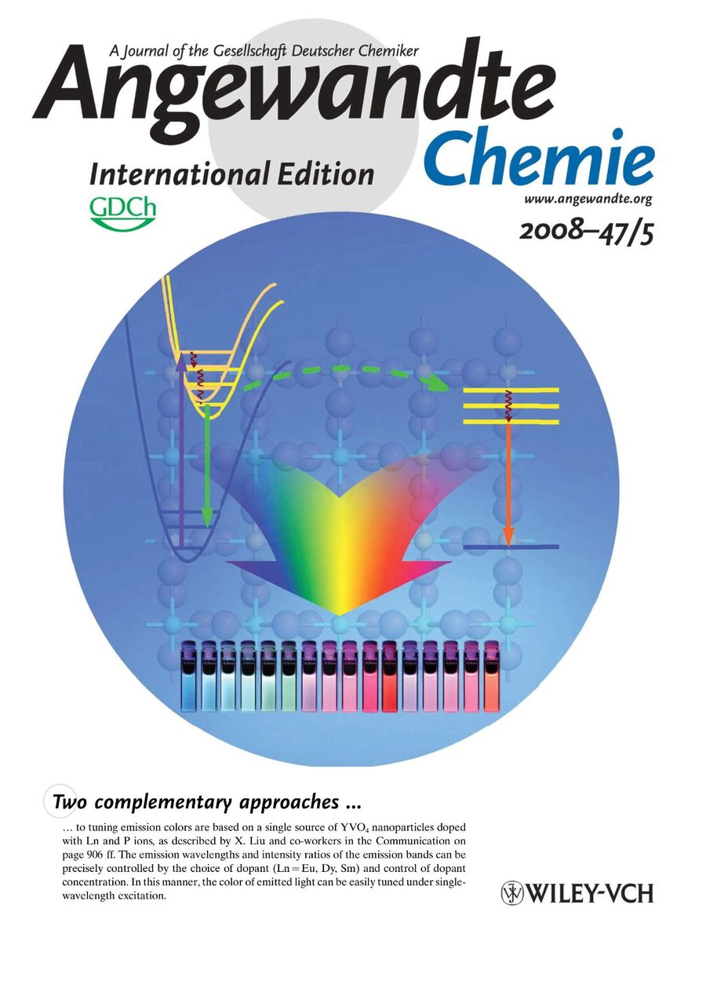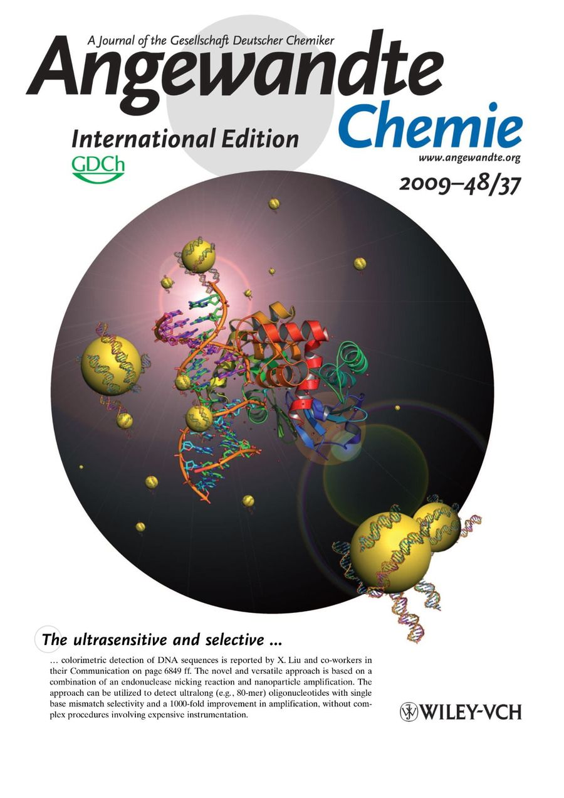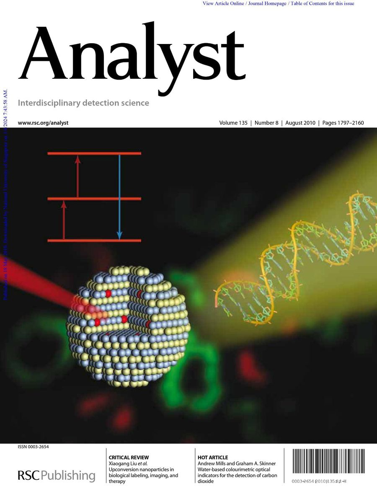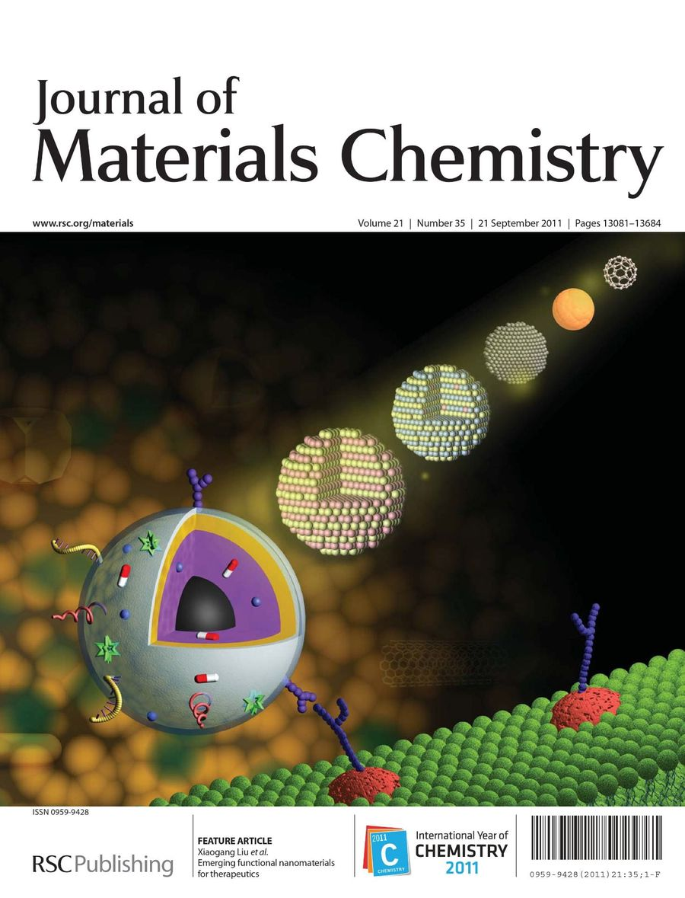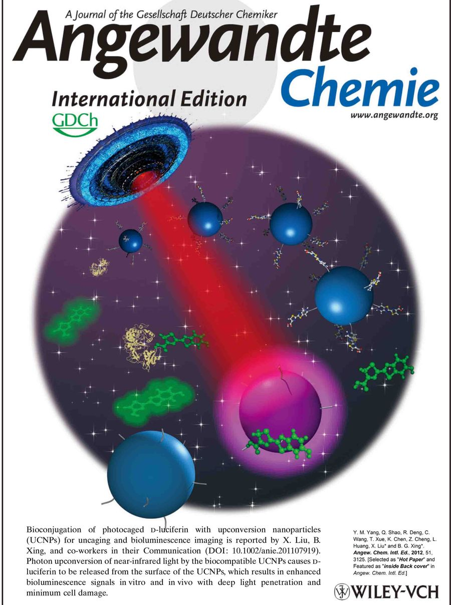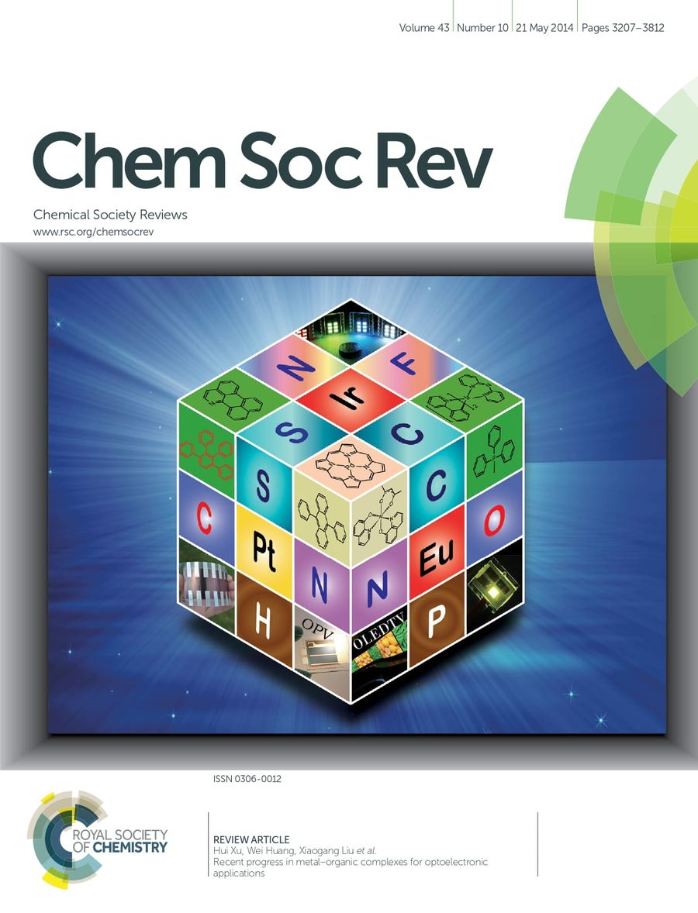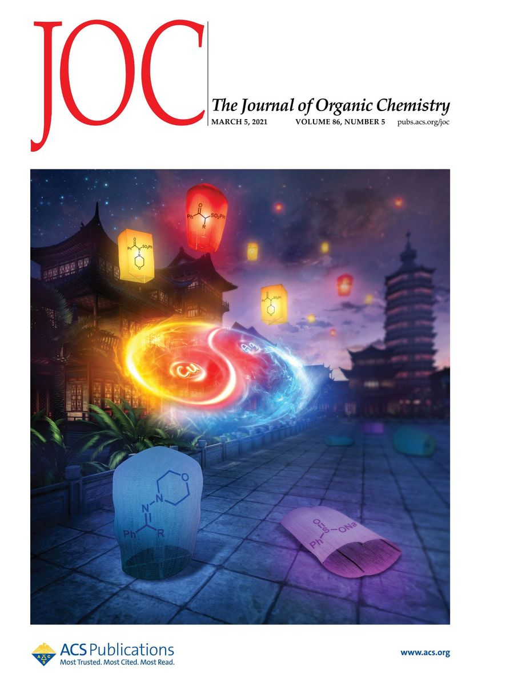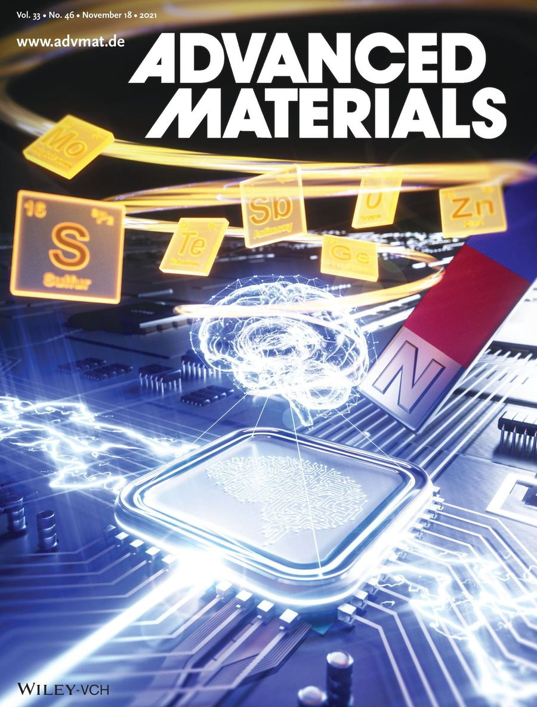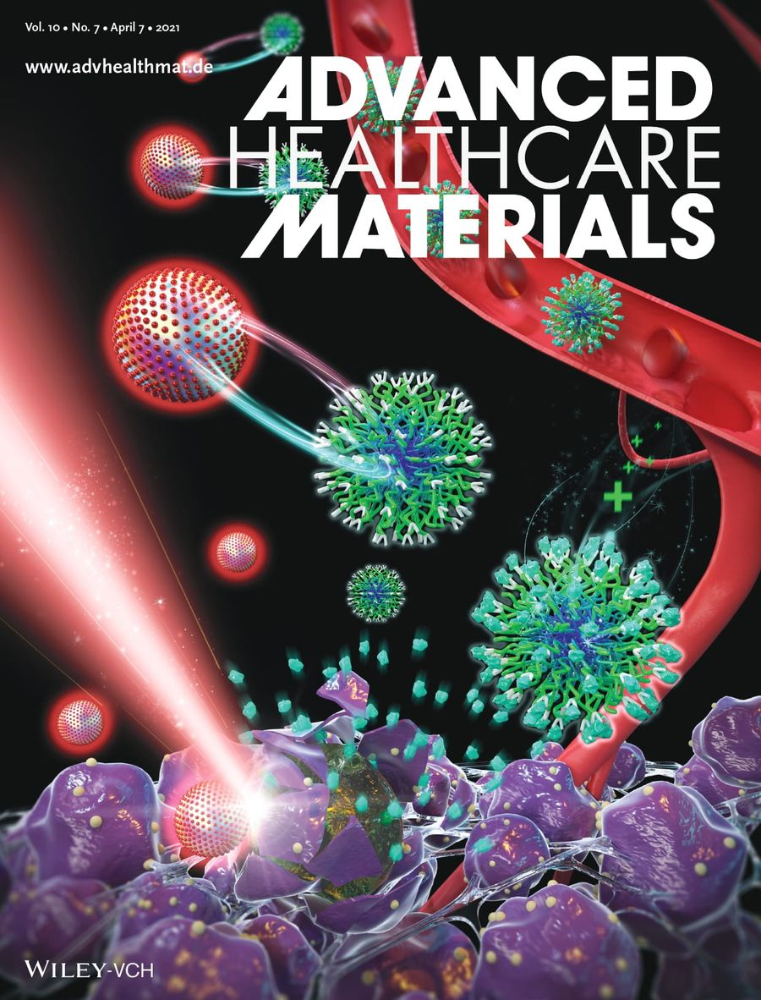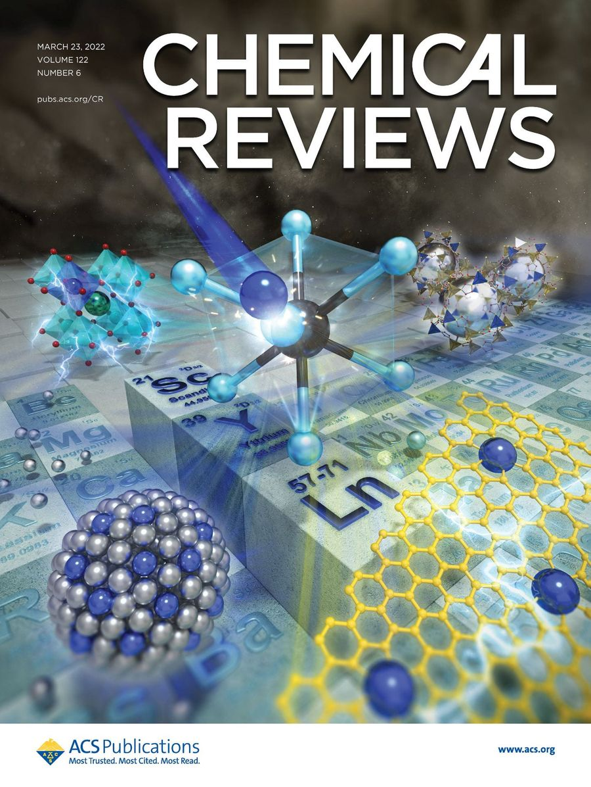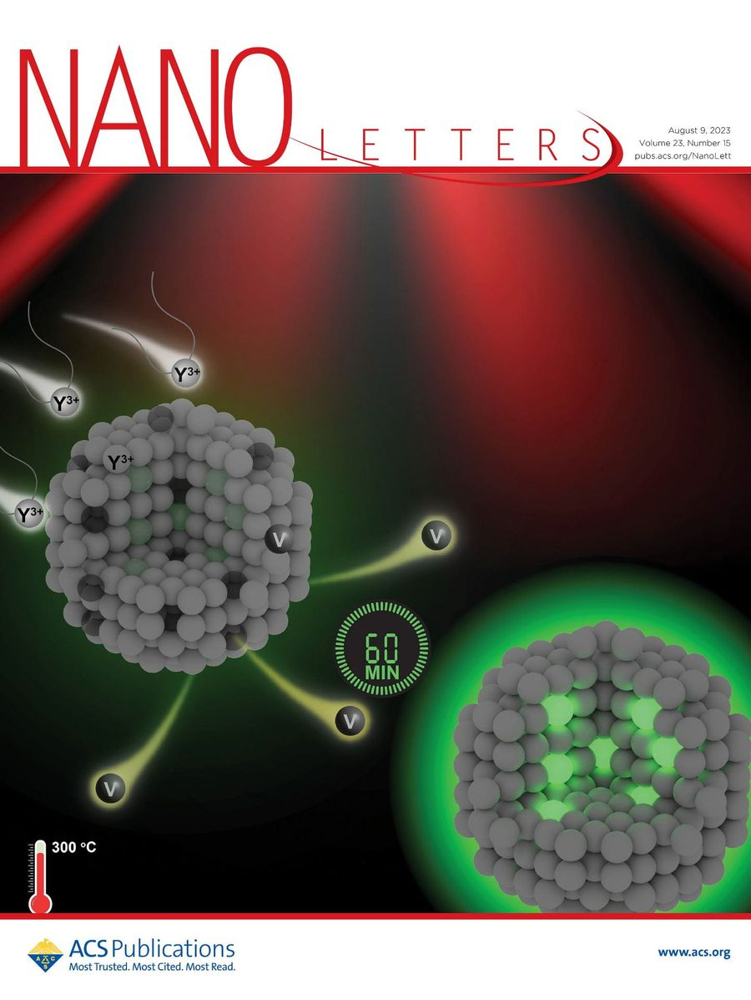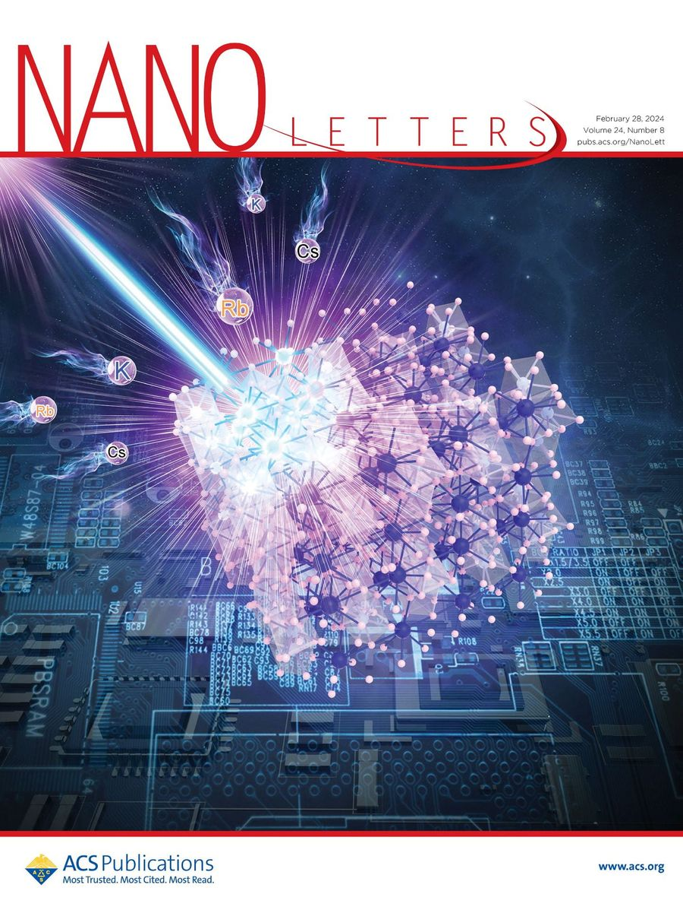</div></div></div>
<div class="masth"><div class="rule"></div><div><h1>流光</h1></div><div><h1>廿载</h1></div>
<div class="sub">刘小钢课题组 · 二十周年纪念</div></div>
<div class="issn">EST. 2006 · DEPARTMENT OF CHEMISTRY · NATIONAL UNIVERSITY OF SINGAPORE</div>
<div class="foot">20TH ANNIVERSARY EDITION · 2026</div></section>
<section class="sheet rail "><div class="runhead"><span class="zh">流光廿载</span><span class="logo"><span class="seal">廿</span><span class="t">Liu Lab | 20 Years<small>liuxg.science.nus.edu.sg</small></span></span></div><span class="pgdot pd-tl"></span><span class="pgdot pd-tr"></span><span class="pgdot pd-bl"></span><span class="pgdot pd-br"></span><div class="sheet-inner"><div class="calbar">CALENDAR 2027 · JAN — JUN</div><div class="cal2wrap"><div class="cal2"><h4>JANUARY 2027<span>一月</span></h4><table><tr><th>日</th><th>一</th><th>二</th><th>三</th><th>四</th><th>五</th><th>六</th></tr><tr><td></td><td></td><td></td><td></td><td></td><td class=""><div class="d">1</div><div class="l">廿四</div></td><td class=""><div class="d">2</div><div class="l">廿五</div></td></tr><tr><td class="sun"><div class="d">3</div><div class="l">廿六</div></td><td class=""><div class="d">4</div><div class="l">廿七</div></td><td class="jq"><div class="d">5</div><div class="l">小寒</div></td><td class=""><div class="d">6</div><div class="l">廿九</div></td><td class=""><div class="d">7</div><div class="l">三十</div></td><td class=""><div class="d">8</div><div class="l">腊月</div></td><td class=""><div class="d">9</div><div class="l">初二</div></td></tr><tr><td class="sun"><div class="d">10</div><div class="l">初三</div></td><td class=""><div class="d">11</div><div class="l">初四</div></td><td class=""><div class="d">12</div><div class="l">初五</div></td><td class=""><div class="d">13</div><div class="l">初六</div></td><td class=""><div class="d">14</div><div class="l">初七</div></td><td class=""><div class="d">15</div><div class="l">初八</div></td><td class=""><div class="d">16</div><div class="l">初九</div></td></tr><tr><td class="sun"><div class="d">17</div><div class="l">初十</div></td><td class=""><div class="d">18</div><div class="l">十一</div></td><td class=""><div class="d">19</div><div class="l">十二</div></td><td class="jq"><div class="d">20</div><div class="l">大寒</div></td><td class=""><div class="d">21</div><div class="l">十四</div></td><td class=""><div class="d">22</div><div class="l">十五</div></td><td class=""><div class="d">23</div><div class="l">十六</div></td></tr><tr><td class="sun"><div class="d">24</div><div class="l">十七</div></td><td class=""><div class="d">25</div><div class="l">十八</div></td><td class=""><div class="d">26</div><div class="l">十九</div></td><td class=""><div class="d">27</div><div class="l">二十</div></td><td class=""><div class="d">28</div><div class="l">廿一</div></td><td class=""><div class="d">29</div><div class="l">廿二</div></td><td class=""><div class="d">30</div><div class="l">廿三</div></td></tr><tr><td class="sun"><div class="d">31</div><div class="l">廿四</div></td><td></td><td></td><td></td><td></td><td></td><td></td></tr></table></div><div class="cal2"><h4>FEBRUARY 2027<span>二月</span></h4><table><tr><th>日</th><th>一</th><th>二</th><th>三</th><th>四</th><th>五</th><th>六</th></tr><tr><td></td><td class=""><div class="d">1</div><div class="l">廿五</div></td><td class=""><div class="d">2</div><div class="l">廿六</div></td><td class=""><div class="d">3</div><div class="l">廿七</div></td><td class="jq"><div class="d">4</div><div class="l">立春</div></td><td class=""><div class="d">5</div><div class="l">廿九</div></td><td class=""><div class="d">6</div><div class="l">正月</div></td></tr><tr><td class="sun"><div class="d">7</div><div class="l">初二</div></td><td class=""><div class="d">8</div><div class="l">初三</div></td><td class=""><div class="d">9</div><div class="l">初四</div></td><td class=""><div class="d">10</div><div class="l">初五</div></td><td class=""><div class="d">11</div><div class="l">初六</div></td><td class=""><div class="d">12</div><div class="l">初七</div></td><td class=""><div class="d">13</div><div class="l">初八</div></td></tr><tr><td class="sun"><div class="d">14</div><div class="l">初九</div></td><td class=""><div class="d">15</div><div class="l">初十</div></td><td class=""><div class="d">16</div><div class="l">十一</div></td><td class=""><div class="d">17</div><div class="l">十二</div></td><td class=""><div class="d">18</div><div class="l">十三</div></td><td class="jq"><div class="d">19</div><div class="l">雨水</div></td><td class=""><div class="d">20</div><div class="l">十五</div></td></tr><tr><td class="sun"><div class="d">21</div><div class="l">十六</div></td><td class=""><div class="d">22</div><div class="l">十七</div></td><td class=""><div class="d">23</div><div class="l">十八</div></td><td class=""><div class="d">24</div><div class="l">十九</div></td><td class=""><div class="d">25</div><div class="l">二十</div></td><td class=""><div class="d">26</div><div class="l">廿一</div></td><td class=""><div class="d">27</div><div class="l">廿二</div></td></tr><tr><td class="sun"><div class="d">28</div><div class="l">廿三</div></td><td></td><td></td><td></td><td></td><td></td><td></td></tr></table></div><div class="cal2"><h4>MARCH 2027<span>三月</span></h4><table><tr><th>日</th><th>一</th><th>二</th><th>三</th><th>四</th><th>五</th><th>六</th></tr><tr><td></td><td class=""><div class="d">1</div><div class="l">廿四</div></td><td class=""><div class="d">2</div><div class="l">廿五</div></td><td class=""><div class="d">3</div><div class="l">廿六</div></td><td class=""><div class="d">4</div><div class="l">廿七</div></td><td class=""><div class="d">5</div><div class="l">廿八</div></td><td class="jq"><div class="d">6</div><div class="l">惊蛰</div></td></tr><tr><td class="sun"><div class="d">7</div><div class="l">三十</div></td><td class=""><div class="d">8</div><div class="l">二月</div></td><td class=""><div class="d">9</div><div class="l">初二</div></td><td class=""><div class="d">10</div><div class="l">初三</div></td><td class=""><div class="d">11</div><div class="l">初四</div></td><td class=""><div class="d">12</div><div class="l">初五</div></td><td class=""><div class="d">13</div><div class="l">初六</div></td></tr><tr><td class="sun"><div class="d">14</div><div class="l">初七</div></td><td class=""><div class="d">15</div><div class="l">初八</div></td><td class=""><div class="d">16</div><div class="l">初九</div></td><td class=""><div class="d">17</div><div class="l">初十</div></td><td class=""><div class="d">18</div><div class="l">十一</div></td><td class=""><div class="d">19</div><div class="l">十二</div></td><td class=""><div class="d">20</div><div class="l">十三</div></td></tr><tr><td class="jq sun"><div class="d">21</div><div class="l">春分</div></td><td class=""><div class="d">22</div><div class="l">十五</div></td><td class=""><div class="d">23</div><div class="l">十六</div></td><td class=""><div class="d">24</div><div class="l">十七</div></td><td class=""><div class="d">25</div><div class="l">十八</div></td><td class=""><div class="d">26</div><div class="l">十九</div></td><td class=""><div class="d">27</div><div class="l">二十</div></td></tr><tr><td class="sun"><div class="d">28</div><div class="l">廿一</div></td><td class=""><div class="d">29</div><div class="l">廿二</div></td><td class=""><div class="d">30</div><div class="l">廿三</div></td><td class=""><div class="d">31</div><div class="l">廿四</div></td><td></td><td></td><td></td></tr></table></div><div class="cal2"><h4>APRIL 2027<span>四月</span></h4><table><tr><th>日</th><th>一</th><th>二</th><th>三</th><th>四</th><th>五</th><th>六</th></tr><tr><td></td><td></td><td></td><td></td><td class=""><div class="d">1</div><div class="l">廿五</div></td><td class=""><div class="d">2</div><div class="l">廿六</div></td><td class=""><div class="d">3</div><div class="l">廿七</div></td></tr><tr><td class="sun"><div class="d">4</div><div class="l">廿八</div></td><td class="jq"><div class="d">5</div><div class="l">清明</div></td><td class=""><div class="d">6</div><div class="l">三十</div></td><td class=""><div class="d">7</div><div class="l">三月</div></td><td class=""><div class="d">8</div><div class="l">初二</div></td><td class=""><div class="d">9</div><div class="l">初三</div></td><td class=""><div class="d">10</div><div class="l">初四</div></td></tr><tr><td class="sun"><div class="d">11</div><div class="l">初五</div></td><td class=""><div class="d">12</div><div class="l">初六</div></td><td class=""><div class="d">13</div><div class="l">初七</div></td><td class=""><div class="d">14</div><div class="l">初八</div></td><td class=""><div class="d">15</div><div class="l">初九</div></td><td class=""><div class="d">16</div><div class="l">初十</div></td><td class=""><div class="d">17</div><div class="l">十一</div></td></tr><tr><td class="sun"><div class="d">18</div><div class="l">十二</div></td><td class=""><div class="d">19</div><div class="l">十三</div></td><td class="jq"><div class="d">20</div><div class="l">谷雨</div></td><td class=""><div class="d">21</div><div class="l">十五</div></td><td class=""><div class="d">22</div><div class="l">十六</div></td><td class=""><div class="d">23</div><div class="l">十七</div></td><td class=""><div class="d">24</div><div class="l">十八</div></td></tr><tr><td class="sun"><div class="d">25</div><div class="l">十九</div></td><td class=""><div class="d">26</div><div class="l">二十</div></td><td class=""><div class="d">27</div><div class="l">廿一</div></td><td class=""><div class="d">28</div><div class="l">廿二</div></td><td class=""><div class="d">29</div><div class="l">廿三</div></td><td class=""><div class="d">30</div><div class="l">廿四</div></td><td></td></tr></table></div><div class="cal2"><h4>MAY 2027<span>五月</span></h4><table><tr><th>日</th><th>一</th><th>二</th><th>三</th><th>四</th><th>五</th><th>六</th></tr><tr><td></td><td></td><td></td><td></td><td></td><td></td><td class=""><div class="d">1</div><div class="l">廿五</div></td></tr><tr><td class="sun"><div class="d">2</div><div class="l">廿六</div></td><td class=""><div class="d">3</div><div class="l">廿七</div></td><td class=""><div class="d">4</div><div class="l">廿八</div></td><td class=""><div class="d">5</div><div class="l">廿九</div></td><td class="jq"><div class="d">6</div><div class="l">立夏</div></td><td class=""><div class="d">7</div><div class="l">初二</div></td><td class=""><div class="d">8</div><div class="l">初三</div></td></tr><tr><td class="sun"><div class="d">9</div><div class="l">初四</div></td><td class=""><div class="d">10</div><div class="l">初五</div></td><td class=""><div class="d">11</div><div class="l">初六</div></td><td class=""><div class="d">12</div><div class="l">初七</div></td><td class=""><div class="d">13</div><div class="l">初八</div></td><td class=""><div class="d">14</div><div class="l">初九</div></td><td class=""><div class="d">15</div><div class="l">初十</div></td></tr><tr><td class="sun"><div class="d">16</div><div class="l">十一</div></td><td class=""><div class="d">17</div><div class="l">十二</div></td><td class=""><div class="d">18</div><div class="l">十三</div></td><td class=""><div class="d">19</div><div class="l">十四</div></td><td class=""><div class="d">20</div><div class="l">十五</div></td><td class="jq"><div class="d">21</div><div class="l">小满</div></td><td class=""><div class="d">22</div><div class="l">十七</div></td></tr><tr><td class="sun"><div class="d">23</div><div class="l">十八</div></td><td class=""><div class="d">24</div><div class="l">十九</div></td><td class=""><div class="d">25</div><div class="l">二十</div></td><td class=""><div class="d">26</div><div class="l">廿一</div></td><td class=""><div class="d">27</div><div class="l">廿二</div></td><td class=""><div class="d">28</div><div class="l">廿三</div></td><td class=""><div class="d">29</div><div class="l">廿四</div></td></tr><tr><td class="sun"><div class="d">30</div><div class="l">廿五</div></td><td class=""><div class="d">31</div><div class="l">廿六</div></td><td></td><td></td><td></td><td></td><td></td></tr></table></div><div class="cal2"><h4>JUNE 2027<span>六月</span></h4><table><tr><th>日</th><th>一</th><th>二</th><th>三</th><th>四</th><th>五</th><th>六</th></tr><tr><td></td><td></td><td class=""><div class="d">1</div><div class="l">廿七</div></td><td class=""><div class="d">2</div><div class="l">廿八</div></td><td class=""><div class="d">3</div><div class="l">廿九</div></td><td class=""><div class="d">4</div><div class="l">三十</div></td><td class=""><div class="d">5</div><div class="l">五月</div></td></tr><tr><td class="jq sun"><div class="d">6</div><div class="l">芒种</div></td><td class=""><div class="d">7</div><div class="l">初三</div></td><td class=""><div class="d">8</div><div class="l">初四</div></td><td class=""><div class="d">9</div><div class="l">初五</div></td><td class=""><div class="d">10</div><div class="l">初六</div></td><td class=""><div class="d">11</div><div class="l">初七</div></td><td class=""><div class="d">12</div><div class="l">初八</div></td></tr><tr><td class="sun"><div class="d">13</div><div class="l">初九</div></td><td class=""><div class="d">14</div><div class="l">初十</div></td><td class=""><div class="d">15</div><div class="l">十一</div></td><td class=""><div class="d">16</div><div class="l">十二</div></td><td class=""><div class="d">17</div><div class="l">十三</div></td><td class=""><div class="d">18</div><div class="l">十四</div></td><td class=""><div class="d">19</div><div class="l">十五</div></td></tr><tr><td class="sun"><div class="d">20</div><div class="l">十六</div></td><td class="jq"><div class="d">21</div><div class="l">夏至</div></td><td class=""><div class="d">22</div><div class="l">十八</div></td><td class=""><div class="d">23</div><div class="l">十九</div></td><td class=""><div class="d">24</div><div class="l">二十</div></td><td class=""><div class="d">25</div><div class="l">廿一</div></td><td class=""><div class="d">26</div><div class="l">廿二</div></td></tr><tr><td class="sun"><div class="d">27</div><div class="l">廿三</div></td><td class=""><div class="d">28</div><div class="l">廿四</div></td><td class=""><div class="d">29</div><div class="l">廿五</div></td><td class=""><div class="d">30</div><div class="l">廿六</div></td><td></td><td></td><td></td></tr></table></div></div><p class="pplnote">农历与二十四节气随注（节气以红字标出）</p></div></section>
<section class="sheet rail "><div class="runhead"><span class="zh">流光廿载</span><span class="logo"><span class="seal">廿</span><span class="t">Liu Lab | 20 Years<small>liuxg.science.nus.edu.sg</small></span></span></div><span class="pgdot pd-tl"></span><span class="pgdot pd-tr"></span><span class="pgdot pd-bl"></span><span class="pgdot pd-br"></span><div class="sheet-inner"><div class="calbar">CALENDAR 2027 · JUL — DEC</div><div class="cal2wrap"><div class="cal2"><h4>JULY 2027<span>七月</span></h4><table><tr><th>日</th><th>一</th><th>二</th><th>三</th><th>四</th><th>五</th><th>六</th></tr><tr><td></td><td></td><td></td><td></td><td class=""><div class="d">1</div><div class="l">廿七</div></td><td class=""><div class="d">2</div><div class="l">廿八</div></td><td class=""><div class="d">3</div><div class="l">廿九</div></td></tr><tr><td class="sun"><div class="d">4</div><div class="l">六月</div></td><td class=""><div class="d">5</div><div class="l">初二</div></td><td class=""><div class="d">6</div><div class="l">初三</div></td><td class="jq"><div class="d">7</div><div class="l">小暑</div></td><td class=""><div class="d">8</div><div class="l">初五</div></td><td class=""><div class="d">9</div><div class="l">初六</div></td><td class=""><div class="d">10</div><div class="l">初七</div></td></tr><tr><td class="sun"><div class="d">11</div><div class="l">初八</div></td><td class=""><div class="d">12</div><div class="l">初九</div></td><td class=""><div class="d">13</div><div class="l">初十</div></td><td class=""><div class="d">14</div><div class="l">十一</div></td><td class=""><div class="d">15</div><div class="l">十二</div></td><td class=""><div class="d">16</div><div class="l">十三</div></td><td class=""><div class="d">17</div><div class="l">十四</div></td></tr><tr><td class="sun"><div class="d">18</div><div class="l">十五</div></td><td class=""><div class="d">19</div><div class="l">十六</div></td><td class=""><div class="d">20</div><div class="l">十七</div></td><td class=""><div class="d">21</div><div class="l">十八</div></td><td class=""><div class="d">22</div><div class="l">十九</div></td><td class="jq"><div class="d">23</div><div class="l">大暑</div></td><td class=""><div class="d">24</div><div class="l">廿一</div></td></tr><tr><td class="sun"><div class="d">25</div><div class="l">廿二</div></td><td class=""><div class="d">26</div><div class="l">廿三</div></td><td class=""><div class="d">27</div><div class="l">廿四</div></td><td class=""><div class="d">28</div><div class="l">廿五</div></td><td class=""><div class="d">29</div><div class="l">廿六</div></td><td class=""><div class="d">30</div><div class="l">廿七</div></td><td class=""><div class="d">31</div><div class="l">廿八</div></td></tr></table></div><div class="cal2"><h4>AUGUST 2027<span>八月</span></h4><table><tr><th>日</th><th>一</th><th>二</th><th>三</th><th>四</th><th>五</th><th>六</th></tr><tr><td class="sun"><div class="d">1</div><div class="l">廿九</div></td><td class=""><div class="d">2</div><div class="l">七月</div></td><td class=""><div class="d">3</div><div class="l">初二</div></td><td class=""><div class="d">4</div><div class="l">初三</div></td><td class=""><div class="d">5</div><div class="l">初四</div></td><td class=""><div class="d">6</div><div class="l">初五</div></td><td class=""><div class="d">7</div><div class="l">初六</div></td></tr><tr><td class="jq sun"><div class="d">8</div><div class="l">立秋</div></td><td class=""><div class="d">9</div><div class="l">初八</div></td><td class=""><div class="d">10</div><div class="l">初九</div></td><td class=""><div class="d">11</div><div class="l">初十</div></td><td class=""><div class="d">12</div><div class="l">十一</div></td><td class=""><div class="d">13</div><div class="l">十二</div></td><td class=""><div class="d">14</div><div class="l">十三</div></td></tr><tr><td class="sun"><div class="d">15</div><div class="l">十四</div></td><td class=""><div class="d">16</div><div class="l">十五</div></td><td class=""><div class="d">17</div><div class="l">十六</div></td><td class=""><div class="d">18</div><div class="l">十七</div></td><td class=""><div class="d">19</div><div class="l">十八</div></td><td class=""><div class="d">20</div><div class="l">十九</div></td><td class=""><div class="d">21</div><div class="l">二十</div></td></tr><tr><td class="sun"><div class="d">22</div><div class="l">廿一</div></td><td class="jq"><div class="d">23</div><div class="l">处暑</div></td><td class=""><div class="d">24</div><div class="l">廿三</div></td><td class=""><div class="d">25</div><div class="l">廿四</div></td><td class=""><div class="d">26</div><div class="l">廿五</div></td><td class=""><div class="d">27</div><div class="l">廿六</div></td><td class=""><div class="d">28</div><div class="l">廿七</div></td></tr><tr><td class="sun"><div class="d">29</div><div class="l">廿八</div></td><td class=""><div class="d">30</div><div class="l">廿九</div></td><td class=""><div class="d">31</div><div class="l">三十</div></td><td></td><td></td><td></td><td></td></tr></table></div><div class="cal2"><h4>SEPTEMBER 2027<span>九月</span></h4><table><tr><th>日</th><th>一</th><th>二</th><th>三</th><th>四</th><th>五</th><th>六</th></tr><tr><td></td><td></td><td></td><td class=""><div class="d">1</div><div class="l">八月</div></td><td class=""><div class="d">2</div><div class="l">初二</div></td><td class=""><div class="d">3</div><div class="l">初三</div></td><td class=""><div class="d">4</div><div class="l">初四</div></td></tr><tr><td class="sun"><div class="d">5</div><div class="l">初五</div></td><td class=""><div class="d">6</div><div class="l">初六</div></td><td class=""><div class="d">7</div><div class="l">初七</div></td><td class="jq"><div class="d">8</div><div class="l">白露</div></td><td class=""><div class="d">9</div><div class="l">初九</div></td><td class=""><div class="d">10</div><div class="l">初十</div></td><td class=""><div class="d">11</div><div class="l">十一</div></td></tr><tr><td class="sun"><div class="d">12</div><div class="l">十二</div></td><td class=""><div class="d">13</div><div class="l">十三</div></td><td class=""><div class="d">14</div><div class="l">十四</div></td><td class=""><div class="d">15</div><div class="l">十五</div></td><td class=""><div class="d">16</div><div class="l">十六</div></td><td class=""><div class="d">17</div><div class="l">十七</div></td><td class=""><div class="d">18</div><div class="l">十八</div></td></tr><tr><td class="sun"><div class="d">19</div><div class="l">十九</div></td><td class=""><div class="d">20</div><div class="l">二十</div></td><td class=""><div class="d">21</div><div class="l">廿一</div></td><td class=""><div class="d">22</div><div class="l">廿二</div></td><td class="jq"><div class="d">23</div><div class="l">秋分</div></td><td class=""><div class="d">24</div><div class="l">廿四</div></td><td class=""><div class="d">25</div><div class="l">廿五</div></td></tr><tr><td class="sun"><div class="d">26</div><div class="l">廿六</div></td><td class=""><div class="d">27</div><div class="l">廿七</div></td><td class=""><div class="d">28</div><div class="l">廿八</div></td><td class=""><div class="d">29</div><div class="l">廿九</div></td><td class=""><div class="d">30</div><div class="l">九月</div></td><td></td><td></td></tr></table></div><div class="cal2"><h4>OCTOBER 2027<span>十月</span></h4><table><tr><th>日</th><th>一</th><th>二</th><th>三</th><th>四</th><th>五</th><th>六</th></tr><tr><td></td><td></td><td></td><td></td><td></td><td class=""><div class="d">1</div><div class="l">初二</div></td><td class=""><div class="d">2</div><div class="l">初三</div></td></tr><tr><td class="sun"><div class="d">3</div><div class="l">初四</div></td><td class=""><div class="d">4</div><div class="l">初五</div></td><td class=""><div class="d">5</div><div class="l">初六</div></td><td class=""><div class="d">6</div><div class="l">初七</div></td><td class=""><div class="d">7</div><div class="l">初八</div></td><td class="jq"><div class="d">8</div><div class="l">寒露</div></td><td class=""><div class="d">9</div><div class="l">初十</div></td></tr><tr><td class="sun"><div class="d">10</div><div class="l">十一</div></td><td class=""><div class="d">11</div><div class="l">十二</div></td><td class=""><div class="d">12</div><div class="l">十三</div></td><td class=""><div class="d">13</div><div class="l">十四</div></td><td class=""><div class="d">14</div><div class="l">十五</div></td><td class=""><div class="d">15</div><div class="l">十六</div></td><td class=""><div class="d">16</div><div class="l">十七</div></td></tr><tr><td class="sun"><div class="d">17</div><div class="l">十八</div></td><td class=""><div class="d">18</div><div class="l">十九</div></td><td class=""><div class="d">19</div><div class="l">二十</div></td><td class=""><div class="d">20</div><div class="l">廿一</div></td><td class=""><div class="d">21</div><div class="l">廿二</div></td><td class=""><div class="d">22</div><div class="l">廿三</div></td><td class="jq"><div class="d">23</div><div class="l">霜降</div></td></tr><tr><td class="sun"><div class="d">24</div><div class="l">廿五</div></td><td class=""><div class="d">25</div><div class="l">廿六</div></td><td class=""><div class="d">26</div><div class="l">廿七</div></td><td class=""><div class="d">27</div><div class="l">廿八</div></td><td class=""><div class="d">28</div><div class="l">廿九</div></td><td class=""><div class="d">29</div><div class="l">十月</div></td><td class=""><div class="d">30</div><div class="l">初二</div></td></tr><tr><td class="sun"><div class="d">31</div><div class="l">初三</div></td><td></td><td></td><td></td><td></td><td></td><td></td></tr></table></div><div class="cal2"><h4>NOVEMBER 2027<span>十一月</span></h4><table><tr><th>日</th><th>一</th><th>二</th><th>三</th><th>四</th><th>五</th><th>六</th></tr><tr><td></td><td class=""><div class="d">1</div><div class="l">初四</div></td><td class=""><div class="d">2</div><div class="l">初五</div></td><td class=""><div class="d">3</div><div class="l">初六</div></td><td class=""><div class="d">4</div><div class="l">初七</div></td><td class=""><div class="d">5</div><div class="l">初八</div></td><td class=""><div class="d">6</div><div class="l">初九</div></td></tr><tr><td class="jq sun"><div class="d">7</div><div class="l">立冬</div></td><td class=""><div class="d">8</div><div class="l">十一</div></td><td class=""><div class="d">9</div><div class="l">十二</div></td><td class=""><div class="d">10</div><div class="l">十三</div></td><td class=""><div class="d">11</div><div class="l">十四</div></td><td class=""><div class="d">12</div><div class="l">十五</div></td><td class=""><div class="d">13</div><div class="l">十六</div></td></tr><tr><td class="sun"><div class="d">14</div><div class="l">十七</div></td><td class=""><div class="d">15</div><div class="l">十八</div></td><td class=""><div class="d">16</div><div class="l">十九</div></td><td class=""><div class="d">17</div><div class="l">二十</div></td><td class=""><div class="d">18</div><div class="l">廿一</div></td><td class=""><div class="d">19</div><div class="l">廿二</div></td><td class=""><div class="d">20</div><div class="l">廿三</div></td></tr><tr><td class="sun"><div class="d">21</div><div class="l">廿四</div></td><td class="jq"><div class="d">22</div><div class="l">小雪</div></td><td class=""><div class="d">23</div><div class="l">廿六</div></td><td class=""><div class="d">24</div><div class="l">廿七</div></td><td class=""><div class="d">25</div><div class="l">廿八</div></td><td class=""><div class="d">26</div><div class="l">廿九</div></td><td class=""><div class="d">27</div><div class="l">三十</div></td></tr><tr><td class="sun"><div class="d">28</div><div class="l">冬月</div></td><td class=""><div class="d">29</div><div class="l">初二</div></td><td class=""><div class="d">30</div><div class="l">初三</div></td><td></td><td></td><td></td><td></td></tr></table></div><div class="cal2"><h4>DECEMBER 2027<span>十二月</span></h4><table><tr><th>日</th><th>一</th><th>二</th><th>三</th><th>四</th><th>五</th><th>六</th></tr><tr><td></td><td></td><td></td><td class=""><div class="d">1</div><div class="l">初四</div></td><td class=""><div class="d">2</div><div class="l">初五</div></td><td class=""><div class="d">3</div><div class="l">初六</div></td><td class=""><div class="d">4</div><div class="l">初七</div></td></tr><tr><td class="sun"><div class="d">5</div><div class="l">初八</div></td><td class=""><div class="d">6</div><div class="l">初九</div></td><td class="jq"><div class="d">7</div><div class="l">大雪</div></td><td class=""><div class="d">8</div><div class="l">十一</div></td><td class=""><div class="d">9</div><div class="l">十二</div></td><td class=""><div class="d">10</div><div class="l">十三</div></td><td class=""><div class="d">11</div><div class="l">十四</div></td></tr><tr><td class="sun"><div class="d">12</div><div class="l">十五</div></td><td class=""><div class="d">13</div><div class="l">十六</div></td><td class=""><div class="d">14</div><div class="l">十七</div></td><td class=""><div class="d">15</div><div class="l">十八</div></td><td class=""><div class="d">16</div><div class="l">十九</div></td><td class=""><div class="d">17</div><div class="l">二十</div></td><td class=""><div class="d">18</div><div class="l">廿一</div></td></tr><tr><td class="sun"><div class="d">19</div><div class="l">廿二</div></td><td class=""><div class="d">20</div><div class="l">廿三</div></td><td class=""><div class="d">21</div><div class="l">廿四</div></td><td class="jq"><div class="d">22</div><div class="l">冬至</div></td><td class=""><div class="d">23</div><div class="l">廿六</div></td><td class=""><div class="d">24</div><div class="l">廿七</div></td><td class=""><div class="d">25</div><div class="l">廿八</div></td></tr><tr><td class="sun"><div class="d">26</div><div class="l">廿九</div></td><td class=""><div class="d">27</div><div class="l">三十</div></td><td class=""><div class="d">28</div><div class="l">腊月</div></td><td class=""><div class="d">29</div><div class="l">初二</div></td><td class=""><div class="d">30</div><div class="l">初三</div></td><td class=""><div class="d">31</div><div class="l">初四</div></td><td></td></tr></table></div></div><p class="pplnote">愿新一年的每一页，都写满新的光。</p></div></section>
<section class="sheet rail "><div class="tri" style="inset:0"><i style="left:57.0mm;top:135.3mm;width:21.4mm;height:18.6mm;background:rgba(201,162,75,.16);clip-path:polygon(0 0,100% 0,50% 100%)"></i><i style="left:88.1mm;top:77.9mm;width:14.3mm;height:12.4mm;background:rgba(120,110,95,.13);clip-path:polygon(0 0,100% 0,50% 100%)"></i><i style="left:58.7mm;top:98.1mm;width:33.9mm;height:29.5mm;background:rgba(201,162,75,.09);clip-path:polygon(0 100%,50% 0,100% 100%)"></i><i style="left:104.9mm;top:127.2mm;width:26.8mm;height:23.3mm;background:rgba(160,150,135,.12);clip-path:polygon(0 100%,50% 0,100% 100%)"></i><i style="left:88.8mm;top:174.2mm;width:24.5mm;height:21.3mm;background:rgba(201,162,75,.16);clip-path:polygon(0 0,100% 0,50% 100%)"></i><i style="left:91.7mm;top:77.7mm;width:29.2mm;height:25.4mm;background:rgba(120,110,95,.13);clip-path:polygon(0 0,100% 0,50% 100%)"></i><i style="left:62.1mm;top:73.7mm;width:31.3mm;height:27.2mm;background:rgba(201,162,75,.09);clip-path:polygon(0 100%,50% 0,100% 100%)"></i><i style="left:95.5mm;top:175.5mm;width:28.3mm;height:24.6mm;background:rgba(160,150,135,.12);clip-path:polygon(0 0,100% 0,50% 100%)"></i><i style="left:69.6mm;top:166.1mm;width:22.9mm;height:19.9mm;background:rgba(201,162,75,.16);clip-path:polygon(0 0,100% 0,50% 100%)"></i><i style="left:108.3mm;top:81.7mm;width:16.7mm;height:14.5mm;background:rgba(120,110,95,.13);clip-path:polygon(0 100%,50% 0,100% 100%)"></i><i style="left:115.2mm;top:122.3mm;width:26.5mm;height:23.1mm;background:rgba(201,162,75,.09);clip-path:polygon(0 100%,50% 0,100% 100%)"></i><i style="left:78.6mm;top:116.3mm;width:21.0mm;height:18.3mm;background:rgba(160,150,135,.12);clip-path:polygon(0 0,100% 0,50% 100%)"></i><i style="left:84.7mm;top:178.5mm;width:27.6mm;height:24.0mm;background:rgba(201,162,75,.16);clip-path:polygon(0 0,100% 0,50% 100%)"></i><i style="left:106.5mm;top:188.9mm;width:27.4mm;height:23.9mm;background:rgba(120,110,95,.13);clip-path:polygon(0 100%,50% 0,100% 100%)"></i><i style="left:106.9mm;top:185.8mm;width:32.1mm;height:27.9mm;background:rgba(201,162,75,.09);clip-path:polygon(0 0,100% 0,50% 100%)"></i><i style="left:95.1mm;top:95.3mm;width:30.6mm;height:26.6mm;background:rgba(160,150,135,.12);clip-path:polygon(0 0,100% 0,50% 100%)"></i><i style="left:60.8mm;top:77.6mm;width:31.1mm;height:27.0mm;background:rgba(201,162,75,.16);clip-path:polygon(0 0,100% 0,50% 100%)"></i><i style="left:45.1mm;top:166.1mm;width:22.2mm;height:19.3mm;background:rgba(120,110,95,.13);clip-path:polygon(0 100%,50% 0,100% 100%)"></i><i style="left:61.5mm;top:162.3mm;width:31.5mm;height:27.4mm;background:rgba(201,162,75,.09);clip-path:polygon(0 100%,50% 0,100% 100%)"></i><i style="left:87.2mm;top:75.4mm;width:28.4mm;height:24.7mm;background:rgba(160,150,135,.12);clip-path:polygon(0 100%,50% 0,100% 100%)"></i><i style="left:108.5mm;top:187.7mm;width:24.1mm;height:21.0mm;background:rgba(201,162,75,.16);clip-path:polygon(0 0,100% 0,50% 100%)"></i><i style="left:62.8mm;top:79.2mm;width:26.0mm;height:22.6mm;background:rgba(120,110,95,.13);clip-path:polygon(0 100%,50% 0,100% 100%)"></i></div><span class="pgdot pd-tl"></span><span class="pgdot pd-tr"></span><span class="pgdot pd-bl"></span><span class="pgdot pd-br"></span><div class="sheet-inner"><div class="ctitle"><h2>CONTENTS</h2><span class="line"></span><span class="logo"><span class="seal">廿</span><span class="t">Liu Lab | 20 Years<small>liuxg.science.nus.edu.sg</small></span></span></div><div class="ccols"><div><div class="cgrp"><h3>Liu Group 20 years</h3><div class="citem"><span class="pg">2-11</span><span class="t">Celebrate two decades of research: twenty things in twenty years</span><span class="zh">卷首(中/英) · 二十年二十事 · 数说廿载 · 高被引</span></div></div><div class="cgrp"><h3>Group Photos</h3><div class="citem"><span class="pg">12-31</span><span class="t">Group photos through the years</span><span class="zh">年度合照</span></div></div><div class="cgrp"><h3>Liu Group People</h3><div class="citem"><span class="pg">32-33</span><span class="t">Twenty years in one frame</span><span class="zh">同框 · 大合照</span></div><div class="citem"><span class="pg">—</span><span class="t">Current members: post-docs, students, visiting scholars</span><span class="zh">现任成员名录</span></div><div class="citem"><span class="pg">34-45</span><span class="t">Alumni now leading labs and companies of their own</span><span class="zh">刘组人 · 桃李（按入组年份）</span></div></div><div class="cgrp"><h3>Future</h3><div class="citem"><span class="pg">136-137</span><span class="t">A message from the PI</span><span class="zh">老师的寄语</span></div><div class="citem"><span class="pg">138-139</span><span class="t">The next chapter</span><span class="zh">未来 · 二十周年总结与展望</span></div></div><div class="cgrp"><h3>Others</h3><div class="citem"><span class="pg">i–iv</span><span class="t">Calendar 2027 (农历 · 节气)</span><span class="zh">年历</span></div><div class="citem"><span class="pg">140-143</span><span class="t">Collaborators around the world</span><span class="zh">同行 · 合作者</span></div><div class="citem"><span class="pg">144-145</span><span class="t">Still wanted</span><span class="zh">仍在征集</span></div><div class="citem"><span class="pg">146-149</span><span class="t">Notes</span><span class="zh">笔记页</span></div></div></div><div><div class="cgrp"><h3>Four Five-Year Plans · 四个五年</h3><div class="eritem"><span class="pg">46-58</span>&ensp;<span class="tt">立基</span><span class="rg">THE FOUNDING YEARS · 2006 — 2010</span><div class="fo">从金属纳米结构与自组装起步，为镧系上转换发光&quot;定调&quot;</div></div><div class="eritem"><span class="pg">59-75</span>&ensp;<span class="tt">筑体系</span><span class="rg">BUILDING THE SYSTEM · 2011 — 2015</span><div class="fo">核壳工程与能量迁移成型——上转换第一次有了&quot;设计学&quot;</div></div><div class="eritem"><span class="pg">76-86</span>&ensp;<span class="tt">向应用</span><span class="rg">REACHING OUT · 2016 — 2020</span><div class="fo">生物成像、纳米医学与 X 射线闪烁——光走进活体与探测器</div></div><div class="eritem"><span class="pg">87-135</span>&ensp;<span class="tt">广绽放</span><span class="rg">IN FULL BLOOM · 2021 — 2026</span><div class="fo">X 射线成像与剂量学、微纳光子、智能传感、类脑器件多线并进</div></div><div class="cfoot">RESEARCH INTERESTS（官网）：Supramolecular coordination chemistry · catalysis · nanomaterials synthesis and nanostructure patterning · chemical sensors and biosensors · nanophotonics · X-ray imaging</div></div></div></div></div><div class="pgnum">1</div></section>
<section class="sheet rail "><div class="runhead"><span class="zh">Liu Group 20 years</span><span class="band">Celebrating Two Decades of Research</span></div><span class="pgdot pd-tl"></span><span class="pgdot pd-tr"></span><span class="pgdot pd-bl"></span><span class="pgdot pd-br"></span><div class="sheet-inner"><div class="edlabel">Editorial</div><div class="edmeta">2026<br><b>Celebrate two decades of research: twenty things in twenty years</b><br>Liu Lab, Department of Chemistry, National University of Singapore<br><span class="doi">Liu Lab 20th Anniversary Notebook · 20th Anniversary Edition</span></div><div class="plate"><svg class="fw" viewBox="0 0 400 130" preserveAspectRatio="none">
<g stroke="#C9A24B" stroke-width="0.8" opacity="0.75">
<line x1="59.8" y1="38.0" x2="78.0" y2="38.0"/><line x1="59.0" y1="41.4" x2="75.4" y2="49.3"/><line x1="56.9" y1="44.1" x2="68.2" y2="58.3"/><line x1="53.7" y1="45.6" x2="57.8" y2="63.3"/><line x1="50.3" y1="45.6" x2="46.2" y2="63.3"/><line x1="47.1" y1="44.1" x2="35.8" y2="58.3"/><line x1="45.0" y1="41.4" x2="28.6" y2="49.3"/><line x1="44.2" y1="38.0" x2="26.0" y2="38.0"/><line x1="45.0" y1="34.6" x2="28.6" y2="26.7"/><line x1="47.1" y1="31.9" x2="35.8" y2="17.7"/><line x1="50.3" y1="30.4" x2="46.2" y2="12.7"/><line x1="53.7" y1="30.4" x2="57.8" y2="12.7"/><line x1="56.9" y1="31.9" x2="68.2" y2="17.7"/><line x1="59.0" y1="34.6" x2="75.4" y2="26.7"/><line x1="358.6" y1="42.0" x2="374.0" y2="42.0"/><line x1="357.9" y1="44.9" x2="371.8" y2="51.5"/><line x1="356.1" y1="47.2" x2="365.7" y2="59.2"/><line x1="353.5" y1="48.4" x2="356.9" y2="63.4"/><line x1="350.5" y1="48.4" x2="347.1" y2="63.4"/><line x1="347.9" y1="47.2" x2="338.3" y2="59.2"/><line x1="346.1" y1="44.9" x2="332.2" y2="51.5"/><line x1="345.4" y1="42.0" x2="330.0" y2="42.0"/><line x1="346.1" y1="39.1" x2="332.2" y2="32.5"/><line x1="347.9" y1="36.8" x2="338.3" y2="24.8"/><line x1="350.5" y1="35.6" x2="347.1" y2="20.6"/><line x1="353.5" y1="35.6" x2="356.9" y2="20.6"/><line x1="356.1" y1="36.8" x2="365.7" y2="24.8"/><line x1="357.9" y1="39.1" x2="371.8" y2="32.5"/><line x1="324.5" y1="100.0" x2="335.0" y2="100.0"/><line x1="324.1" y1="102.0" x2="333.5" y2="106.5"/><line x1="322.8" y1="103.5" x2="329.4" y2="111.7"/><line x1="321.0" y1="104.4" x2="323.3" y2="114.6"/><line x1="319.0" y1="104.4" x2="316.7" y2="114.6"/><line x1="317.2" y1="103.5" x2="310.6" y2="111.7"/><line x1="315.9" y1="102.0" x2="306.5" y2="106.5"/><line x1="315.5" y1="100.0" x2="305.0" y2="100.0"/><line x1="315.9" y1="98.0" x2="306.5" y2="93.5"/><line x1="317.2" y1="96.5" x2="310.6" y2="88.3"/><line x1="319.0" y1="95.6" x2="316.7" y2="85.4"/><line x1="321.0" y1="95.6" x2="323.3" y2="85.4"/><line x1="322.8" y1="96.5" x2="329.4" y2="88.3"/><line x1="324.1" y1="98.0" x2="333.5" y2="93.5"/><line x1="79.9" y1="100.0" x2="89.0" y2="100.0"/><line x1="79.5" y1="101.7" x2="87.7" y2="105.6"/><line x1="78.4" y1="103.0" x2="84.1" y2="110.2"/><line x1="76.9" y1="103.8" x2="78.9" y2="112.7"/><line x1="75.1" y1="103.8" x2="73.1" y2="112.7"/><line x1="73.6" y1="103.0" x2="67.9" y2="110.2"/><line x1="72.5" y1="101.7" x2="64.3" y2="105.6"/><line x1="72.1" y1="100.0" x2="63.0" y2="100.0"/><line x1="72.5" y1="98.3" x2="64.3" y2="94.4"/><line x1="73.6" y1="97.0" x2="67.9" y2="89.8"/><line x1="75.1" y1="96.2" x2="73.1" y2="87.3"/><line x1="76.9" y1="96.2" x2="78.9" y2="87.3"/><line x1="78.4" y1="97.0" x2="84.1" y2="89.8"/><line x1="79.5" y1="98.3" x2="87.7" y2="94.4"/></g>
<g fill="#E3C98A" opacity="0.9"><circle cx="52" cy="38" r="1.1"/><circle cx="352" cy="42" r="1.1"/><circle cx="320" cy="100" r="1.1"/><circle cx="76" cy="100" r="1.1"/><circle cx="30" cy="80" r="1.1"/><circle cx="376" cy="78" r="1.1"/></g>
<g fill="#a4433c" opacity="0.8"><circle cx="40" cy="20" r="0.8"/><circle cx="365" cy="25" r="0.8"/><circle cx="340" cy="85" r="0.8"/><circle cx="60" cy="88" r="0.8"/><circle cx="90" cy="30" r="0.8"/><circle cx="310" cy="30" r="0.8"/></g></svg><div class="dotrow top"><s></s><s></s><s></s><s></s><s></s><s></s><s></s><s></s><s></s><s></s><s></s><s></s></div><div class="big">2006&thinsp;&ndash;&thinsp;2026<small>TWENTY YEARS OF LIGHT</small></div><div class="dotrow bot"><s></s><s></s><s></s><s></s><s></s><s></s><s></s><s></s><s></s><s></s><s></s><s></s></div></div><div class="lede"><p>2006 年 12 月，<b>刘小钢老师</b>从 MIT 来到 NUS 化学系，在 Science Drive 2 点亮了一盏灯。那时它只照着一间空空的实验室；二十年后，它照出了 281 篇论文、十二张期刊封面、六十余位校友——其中三十余位已在世界各地建起自己的实验室，把光继续传下去。</p><p>左页是二十年的封面、论文与人；右页留白——因为接下来的故事，要由此刻翻开它的人来写。</p><p>截至 2026 年，这些工作已被引用逾 77,000 次。但数字只是光的影子；光本身，是每一个在实验台前亮到深夜的人。</p><p>谢谢您，刘老师。二十岁生日快乐，刘组。</p></div><div class="sign">刘组全体学生 敬制 · 2026 年 · 建组二十周年</div></div><div class="pgnum">2</div></section>
<section class="sheet rail notes"><div class="wm"><span>廿</span></div><div class="runhead"><span class="zh"> </span><span class="logo"><span class="seal">廿</span><span class="t">Liu Lab | 20 Years<small>liuxg.science.nus.edu.sg</small></span></span></div><span class="pgdot pd-tl"></span><span class="pgdot pd-tr"></span><span class="pgdot pd-bl"></span><span class="pgdot pd-br"></span><div class="sheet-inner"><div class="datebar">DATE ______ · ______</div><div class="lines"></div></div><div class="pgnum">3</div></section>
<section class="sheet rail "><div class="wm"><span>廿</span></div><div class="runhead"><span class="zh">Liu Group 20 years</span><span class="band">Celebrating Two Decades of Research</span></div><span class="pgdot pd-tl"></span><span class="pgdot pd-tr"></span><span class="pgdot pd-bl"></span><span class="pgdot pd-br"></span><div class="sheet-inner"><div class="edlabel">Editorial · English</div><div class="edmeta">2026<br><b>Celebrate two decades of research: twenty things in twenty years</b><br>Liu Lab, Department of Chemistry, National University of Singapore<br><span class="doi">Liu Lab 20th Anniversary Notebook · 20th Anniversary Edition</span></div><div class="lede en"><p>In December 2006, <b>Prof. Xiaogang Liu</b> arrived from MIT at the Department of Chemistry, National University of Singapore, and switched on a light at Science Drive 2. At first it shone on an empty laboratory; twenty years on, it has shone through 281 papers, twelve journal covers, and more than sixty alumni — over thirty of whom now lead laboratories of their own around the world, passing the light onward.</p><p>On the left-hand pages are twenty years of covers, papers and people; the right-hand pages are left blank — for the story that comes next belongs to whoever opens this book now.</p><p>By 2026, this body of work has been cited more than 77,000 times. Yet numbers are only the shadow of light; the light itself is every person who stayed at the bench deep into the night.</p><p>Thank you, Prof. Liu — and happy 20th birthday, Liu Lab.</p></div><div class="sign">From all the students of Liu Lab · The 20th Anniversary, 2026</div></div><div class="pgnum">4</div></section>
<section class="sheet rail notes"><div class="wm"><span>廿</span></div><div class="runhead"><span class="zh"> </span><span class="logo"><span class="seal">廿</span><span class="t">Liu Lab | 20 Years<small>liuxg.science.nus.edu.sg</small></span></span></div><span class="pgdot pd-tl"></span><span class="pgdot pd-tr"></span><span class="pgdot pd-bl"></span><span class="pgdot pd-br"></span><div class="sheet-inner"><div class="datebar">DATE ______ · ______</div><div class="lines"></div></div><div class="pgnum">5</div></section>
<section class="sheet rail "><div class="wm"><span>廿</span></div><div class="runhead"><span class="zh">Liu Group 20 years</span><span class="logo"><span class="seal">廿</span><span class="t">Liu Lab | 20 Years<small>liuxg.science.nus.edu.sg</small></span></span></div><span class="pgdot pd-tl"></span><span class="pgdot pd-tr"></span><span class="pgdot pd-bl"></span><span class="pgdot pd-br"></span><div class="sheet-inner"><div class="sechead"><h2>Twenty things in twenty years</h2><span class="zh">二十年 · 二十事</span></div><div class="mlist"><div class="m"><span class="y">2006–07</span><span class="tx">课题组成立于 NUS 化学系（2006.12）；初创两年，产出在实验台上</span></div><div class="m"><span class="y">2008</span><span class="tx">首批独立成果：<b>JACS</b> 多色上转换调控；首张 <b>Angew</b> 内封</span></div><div class="m"><span class="y">2009</span><span class="tx"><b>Chem. Soc. Rev.</b> 上转换综述——日后被引 3500 余次的领域经典</span></div><div class="m"><span class="y">2010</span><span class="tx">组史首篇 <b>Nature</b>：Gd³⁺ 掺杂同时调控晶相与尺寸</span></div><div class="m"><span class="y">2011</span><span class="tx"><b>Nature Materials</b> 能量迁移上转换 · 晋升副教授（2011.7）</span></div><div class="m"><span class="y">2012</span><span class="tx"><b>Angew</b> 内后封（Hot Paper）· <b>JACS</b>/<b>Acc. Chem. Res.</b> 界面能量迁移机制</span></div><div class="m"><span class="y">2013</span><span class="tx"><b>JACS</b> Nd³⁺ 敏化，开辟 808 nm 激发新方向</span></div><div class="m"><span class="y">2014</span><span class="tx"><b>Nature Materials</b> 超亮上转换纳米晶 · <b>Nature Protocols</b></span></div><div class="m"><span class="y">2015</span><span class="tx">组史第 100 篇论文 · <b>Nat. Mater.</b> 与 <b>Nat. Nanotech.</b> 相继发表</span></div><div class="m"><span class="y">2016</span><span class="tx">新加坡总统科学奖 President's Science Award</span></div><div class="m"><span class="y">2017</span><span class="tx">晋升正教授 · <b>Angew</b> 活体肝毒性实时监测成像</span></div><div class="m"><span class="y">2018</span><span class="tx"><b>Nature</b> 全无机钙钛矿纳米闪烁体，开启 X 射线成像新篇 · 受聘 Provost's Chair Professor</span></div><div class="m"><span class="y">2019</span><span class="tx">近红外光遗传与超分辨成像方向全面铺开，全年 20 篇</span></div><div class="m"><span class="y">2020</span><span class="tx"><b>Nature</b> 点亮分子三重态激子——无机-有机杂化发光新机制</span></div><div class="m"><span class="y">2021</span><span class="tx">全年 39 篇 · 一年三封面——X 射线延迟发光、忆阻突触多点并进</span></div><div class="m"><span class="y">2022</span><span class="tx">当选新加坡国家科学院院士 SNAS Fellow · <b>Chem. Rev.</b> 封面</span></div><div class="m"><span class="y">2023</span><span class="tx">可吞服胶囊 X 光剂量计问世 · <b>Nano Lett.</b> 封面</span></div><div class="m"><span class="y">2024</span><span class="tx">英国皇家化学会百年奖 RSC Centenary Prize · Falling Walls 物理科学奖全球十强</span></div><div class="m"><span class="y">2025</span><span class="tx">500 阶光学非线性登 <b>Nature</b> · NUS120 杰出研究奖 University Research Recognition Award</span></div><div class="m"><span class="y">2026</span><span class="tx">建组二十周年 · 杰出研究生导师奖 Outstanding Graduate Mentor Award</span></div></div></div><div class="pgnum">6</div></section>
<section class="sheet rail notes"><div class="wm"><span>廿</span></div><div class="runhead"><span class="zh"> </span><span class="logo"><span class="seal">廿</span><span class="t">Liu Lab | 20 Years<small>liuxg.science.nus.edu.sg</small></span></span></div><span class="pgdot pd-tl"></span><span class="pgdot pd-tr"></span><span class="pgdot pd-bl"></span><span class="pgdot pd-br"></span><div class="sheet-inner"><div class="datebar">DATE ______ · ______</div><div class="lines"></div></div><div class="pgnum">7</div></section>
<section class="sheet rail "><div class="runhead"><span class="zh">Liu Group 20 years</span><span class="logo"><span class="seal">廿</span><span class="t">Liu Lab | 20 Years<small>liuxg.science.nus.edu.sg</small></span></span></div><span class="pgdot pd-tl"></span><span class="pgdot pd-tr"></span><span class="pgdot pd-bl"></span><span class="pgdot pd-br"></span><div class="sheet-inner"><div class="sechead"><h2>Twenty years in numbers</h2><span class="zh">数说廿载</span></div><div class="stats"><div class="stat"><div class="v">281</div><div class="k">PAPERS 论文</div></div><div class="stat"><div class="v">77,065</div><div class="k">CITATIONS 总引用</div></div><div class="stat"><div class="v">125</div><div class="k">H-INDEX</div></div></div><div class="vchart"><div class="vcol"><div class="vwrap"><span class="vn">0</span><div class="vb" style="height:0.40mm"></div></div><div class="vy">2006</div></div><div class="vcol"><div class="vwrap"><span class="vn">0</span><div class="vb" style="height:0.40mm"></div></div><div class="vy">07</div></div><div class="vcol"><div class="vwrap"><span class="vn">5</span><div class="vb" style="height:5.13mm"></div></div><div class="vy">08</div></div><div class="vcol"><div class="vwrap"><span class="vn">7</span><div class="vb" style="height:7.18mm"></div></div><div class="vy">09</div></div><div class="vcol"><div class="vwrap"><span class="vn">14</span><div class="vb" style="height:14.36mm"></div></div><div class="vy">2010</div></div><div class="vcol"><div class="vwrap"><span class="vn">11</span><div class="vb" style="height:11.28mm"></div></div><div class="vy">11</div></div><div class="vcol"><div class="vwrap"><span class="vn">13</span><div class="vb" style="height:13.33mm"></div></div><div class="vy">12</div></div><div class="vcol"><div class="vwrap"><span class="vn">12</span><div class="vb" style="height:12.31mm"></div></div><div class="vy">13</div></div><div class="vcol"><div class="vwrap"><span class="vn">11</span><div class="vb" style="height:11.28mm"></div></div><div class="vy">14</div></div><div class="vcol"><div class="vwrap"><span class="vn">16</span><div class="vb" style="height:16.41mm"></div></div><div class="vy">2015</div></div><div class="vcol"><div class="vwrap"><span class="vn">11</span><div class="vb" style="height:11.28mm"></div></div><div class="vy">16</div></div><div class="vcol"><div class="vwrap"><span class="vn">8</span><div class="vb" style="height:8.21mm"></div></div><div class="vy">17</div></div><div class="vcol"><div class="vwrap"><span class="vn">8</span><div class="vb" style="height:8.21mm"></div></div><div class="vy">18</div></div><div class="vcol"><div class="vwrap"><span class="vn">20</span><div class="vb" style="height:20.51mm"></div></div><div class="vy">19</div></div><div class="vcol"><div class="vwrap"><span class="vn">13</span><div class="vb" style="height:13.33mm"></div></div><div class="vy">2020</div></div><div class="vcol"><div class="vwrap"><span class="vn">39</span><div class="vb" style="height:40.00mm"></div></div><div class="vy">21</div></div><div class="vcol"><div class="vwrap"><span class="vn">19</span><div class="vb" style="height:19.49mm"></div></div><div class="vy">22</div></div><div class="vcol"><div class="vwrap"><span class="vn">24</span><div class="vb" style="height:24.62mm"></div></div><div class="vy">23</div></div><div class="vcol"><div class="vwrap"><span class="vn">23</span><div class="vb" style="height:23.59mm"></div></div><div class="vy">24</div></div><div class="vcol"><div class="vwrap"><span class="vn">16</span><div class="vb" style="height:16.41mm"></div></div><div class="vy">2025</div></div><div class="vcol"><div class="vwrap"><span class="vn">11</span><div class="vb" style="height:11.28mm"></div></div><div class="vy">26</div></div></div><div class="wcfull">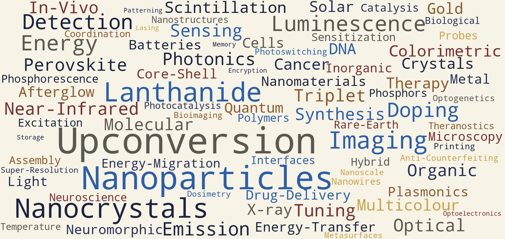<div class="cap">RESEARCH KEYWORDS · 研究关键词</div></div><p class="pplnote">论文数据来自课题组官网逐年发表页（2008–2026，官网口径）；引用与 h 指数来自 Google Scholar（截至 2026 年）。2026 年为进行时。词云：281 篇论文标题的研究关键词，出现频率越高字号越大。</p></div><div class="pgnum">8</div></section>
<section class="sheet rail notes"><div class="wm"><span>廿</span></div><div class="runhead"><span class="zh"> </span><span class="logo"><span class="seal">廿</span><span class="t">Liu Lab | 20 Years<small>liuxg.science.nus.edu.sg</small></span></span></div><span class="pgdot pd-tl"></span><span class="pgdot pd-tr"></span><span class="pgdot pd-bl"></span><span class="pgdot pd-br"></span><div class="sheet-inner"><div class="nillus">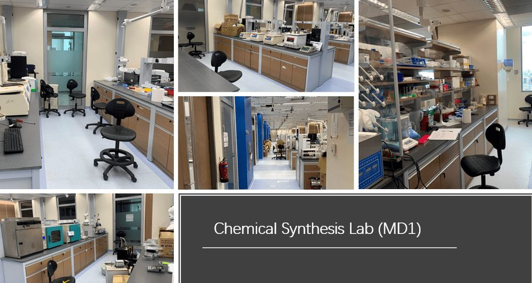<div class="cap">MD1-L17 化学合成实验室 · 无数个日夜开始的地方</div></div><div class="lines" style="top:78mm"></div></div><div class="pgnum">9</div></section>
<section class="sheet rail "><div class="wm"><span>廿</span></div><div class="runhead"><span class="zh">Liu Group 20 years</span><span class="logo"><span class="seal">廿</span><span class="t">Liu Lab | 20 Years<small>liuxg.science.nus.edu.sg</small></span></span></div><span class="pgdot pd-tl"></span><span class="pgdot pd-tr"></span><span class="pgdot pd-bl"></span><span class="pgdot pd-br"></span><div class="sheet-inner"><div class="sechead"><h2>Most cited</h2><span class="zh">高被引 · 十二篇</span></div><div class="topc"><div class="r"><span class="n">1</span><span>Recent advances in the chemistry of lanthanide-doped upconversion nanocrystals<span class="j"> — Chemical Society Reviews 38 (4), 976-989, 2009</span></span><span class="c">3,524</span></div><div class="r"><span class="n">2</span><span>Simultaneous phase and size control of upconversion nanocrystals through lanthanide doping<span class="j"> — Nature 463 (7284), 1061-1065, 2010</span></span><span class="c">3,514</span></div><div class="r"><span class="n">3</span><span>Imparting functionality to a metal–organic framework material by controlled nanoparticle encapsulation<span class="j"> — Nature chemistry 4 (4), 310-316, 2012</span></span><span class="c">2,289</span></div><div class="r"><span class="n">4</span><span>All-inorganic perovskite nanocrystal scintillators<span class="j"> — Nature 561 (7721), 88-93, 2018</span></span><span class="c">2,241</span></div><div class="r"><span class="n">5</span><span>Enhancing solar cell efficiency: the search for luminescent materials as spectral converters<span class="j"> — Chemical society reviews 42 (1), 173-201, 2012</span></span><span class="c">2,058</span></div><div class="r"><span class="n">6</span><span>Tuning upconversion through energy migration in core–shell nanoparticles<span class="j"> — Nature materials 10 (12), 968-973, 2011</span></span><span class="c">2,056</span></div><div class="r"><span class="n">7</span><span>Stabilizing triplet excited states for ultralong organic phosphorescence<span class="j"> — Nature Materials 14 (7), 685-690, 2015</span></span><span class="c">1,889</span></div><div class="r"><span class="n">8</span><span>Upconversion nanoparticles in biological labeling, imaging, and therapy<span class="j"> — Analyst 135 (8), 1839-1854, 2010</span></span><span class="c">1,755</span></div><div class="r"><span class="n">9</span><span>Upconversion Multicolor Fine-Tuning: Visible to Near-Infrared Emission from Lanthanide-Doped NaYF4 Nanoparticles<span class="j"> — Journal of the American Chemical Society 130 (17), 5642-5643, 2008</span></span><span class="c">1,733</span></div><div class="r"><span class="n">10</span><span>Controlling upconversion nanocrystals for emerging applications<span class="j"> — Nature Nanotechnology 10 (11), 924-936, 2015</span></span><span class="c">1,673</span></div><div class="r"><span class="n">11</span><span>Advances in highly doped upconversion nanoparticles<span class="j"> — Nature communications 9 (1), 2415, 2018</span></span><span class="c">1,305</span></div><div class="r"><span class="n">12</span><span>Recent progress in metal–organic complexes for optoelectronic applications<span class="j"> — Chemical Society Reviews 43 (10), 3259-3302, 2014</span></span><span class="c">1,304</span></div></div><p class="pplnote">数据来自 Google Scholar，含合作论文；高被引精选清单待刘老师圈定后替换。</p></div><div class="pgnum">10</div></section>
<section class="sheet rail notes"><div class="wm"><span>廿</span></div><div class="runhead"><span class="zh"> </span><span class="logo"><span class="seal">廿</span><span class="t">Liu Lab | 20 Years<small>liuxg.science.nus.edu.sg</small></span></span></div><span class="pgdot pd-tl"></span><span class="pgdot pd-tr"></span><span class="pgdot pd-bl"></span><span class="pgdot pd-br"></span><div class="sheet-inner"><div class="datebar">DATE ______ · ______</div><div class="lines"></div></div><div class="pgnum">11</div></section>
<section class="sheet rail "><div class="runhead"><span class="zh">Group Photos</span><span class="logo"><span class="seal">廿</span><span class="t">Liu Lab | 20 Years<small>liuxg.science.nus.edu.sg</small></span></span></div><span class="pgdot pd-tl"></span><span class="pgdot pd-tr"></span><span class="pgdot pd-bl"></span><span class="pgdot pd-br"></span><div class="sheet-inner"><div class="gp"><div class="gy">2013</div><div class="imgw">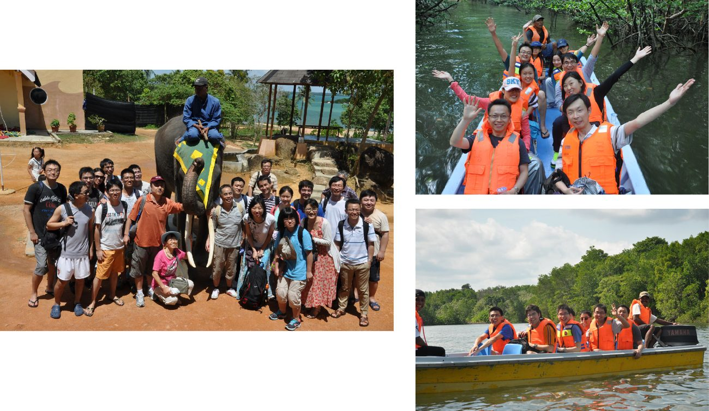</div><figcaption><div class="c1">Bintan 岛团建 · 大象与红树林</div></figcaption></div></div><div class="pgnum">12</div></section>
<section class="sheet rail notes"><div class="wm"><span>廿</span></div><div class="runhead"><span class="zh"> </span><span class="logo"><span class="seal">廿</span><span class="t">Liu Lab | 20 Years<small>liuxg.science.nus.edu.sg</small></span></span></div><span class="pgdot pd-tl"></span><span class="pgdot pd-tr"></span><span class="pgdot pd-bl"></span><span class="pgdot pd-br"></span><div class="sheet-inner"><div class="datebar">DATE ______ · ______</div><div class="lines"></div></div><div class="pgnum">13</div></section>
<section class="sheet rail "><div class="runhead"><span class="zh">Group Photos</span><span class="logo"><span class="seal">廿</span><span class="t">Liu Lab | 20 Years<small>liuxg.science.nus.edu.sg</small></span></span></div><span class="pgdot pd-tl"></span><span class="pgdot pd-tr"></span><span class="pgdot pd-bl"></span><span class="pgdot pd-br"></span><div class="sheet-inner"><div class="gp"><div class="gy">2014</div><div class="imgw">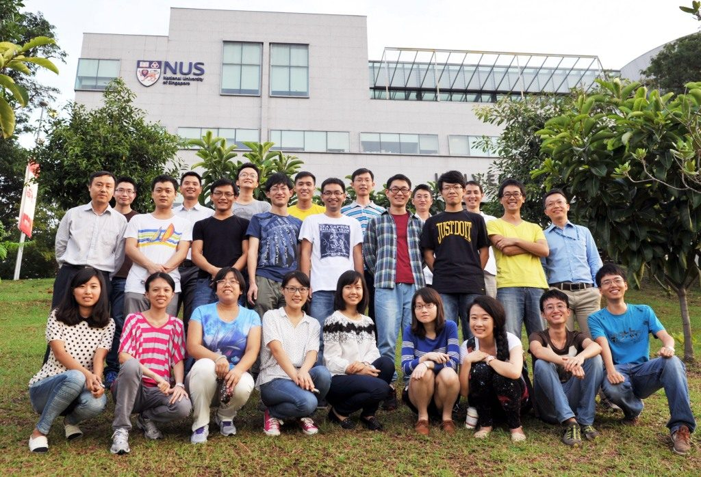</div><figcaption><div class="c1">八月 · NUS 楼前全组合影</div></figcaption></div></div><div class="pgnum">14</div></section>
<section class="sheet rail notes"><div class="wm"><span>廿</span></div><div class="runhead"><span class="zh"> </span><span class="logo"><span class="seal">廿</span><span class="t">Liu Lab | 20 Years<small>liuxg.science.nus.edu.sg</small></span></span></div><span class="pgdot pd-tl"></span><span class="pgdot pd-tr"></span><span class="pgdot pd-bl"></span><span class="pgdot pd-br"></span><div class="sheet-inner"><div class="datebar">DATE ______ · ______</div><div class="lines"></div></div><div class="pgnum">15</div></section>
<section class="sheet rail "><div class="runhead"><span class="zh">Group Photos</span><span class="logo"><span class="seal">廿</span><span class="t">Liu Lab | 20 Years<small>liuxg.science.nus.edu.sg</small></span></span></div><span class="pgdot pd-tl"></span><span class="pgdot pd-tr"></span><span class="pgdot pd-bl"></span><span class="pgdot pd-br"></span><div class="sheet-inner"><div class="gp"><div class="gy">2016</div><div class="imgw">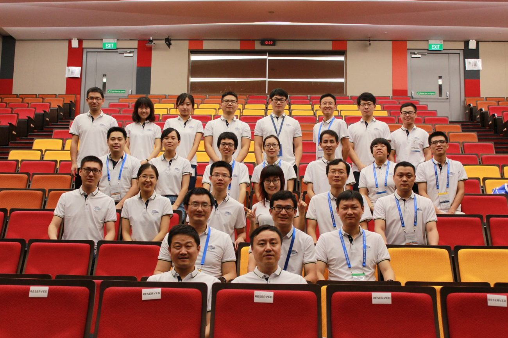</div><figcaption><div class="c1">会议合影 · 把镧系元素穿在背上</div></figcaption></div></div><div class="pgnum">16</div></section>
<section class="sheet rail notes"><div class="wm"><span>廿</span></div><div class="runhead"><span class="zh"> </span><span class="logo"><span class="seal">廿</span><span class="t">Liu Lab | 20 Years<small>liuxg.science.nus.edu.sg</small></span></span></div><span class="pgdot pd-tl"></span><span class="pgdot pd-tr"></span><span class="pgdot pd-bl"></span><span class="pgdot pd-br"></span><div class="sheet-inner"><div class="datebar">DATE ______ · ______</div><div class="lines"></div></div><div class="pgnum">17</div></section>
<section class="sheet rail "><div class="runhead"><span class="zh">Group Photos</span><span class="logo"><span class="seal">廿</span><span class="t">Liu Lab | 20 Years<small>liuxg.science.nus.edu.sg</small></span></span></div><span class="pgdot pd-tl"></span><span class="pgdot pd-tr"></span><span class="pgdot pd-bl"></span><span class="pgdot pd-br"></span><div class="sheet-inner"><div class="gp"><div class="gy">2018</div><div class="imgw">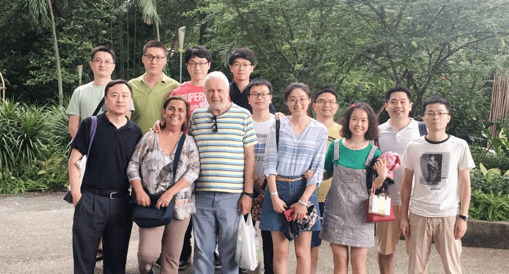</div><figcaption><div class="c1">五月出游（部分成员）</div></figcaption></div></div><div class="pgnum">18</div></section>
<section class="sheet rail notes"><div class="wm"><span>廿</span></div><div class="runhead"><span class="zh"> </span><span class="logo"><span class="seal">廿</span><span class="t">Liu Lab | 20 Years<small>liuxg.science.nus.edu.sg</small></span></span></div><span class="pgdot pd-tl"></span><span class="pgdot pd-tr"></span><span class="pgdot pd-bl"></span><span class="pgdot pd-br"></span><div class="sheet-inner"><div class="datebar">DATE ______ · ______</div><div class="lines"></div></div><div class="pgnum">19</div></section>
<section class="sheet rail "><div class="runhead"><span class="zh">Group Photos</span><span class="logo"><span class="seal">廿</span><span class="t">Liu Lab | 20 Years<small>liuxg.science.nus.edu.sg</small></span></span></div><span class="pgdot pd-tl"></span><span class="pgdot pd-tr"></span><span class="pgdot pd-bl"></span><span class="pgdot pd-br"></span><div class="sheet-inner"><div class="gp"><div class="gy">2019</div><div class="imgw">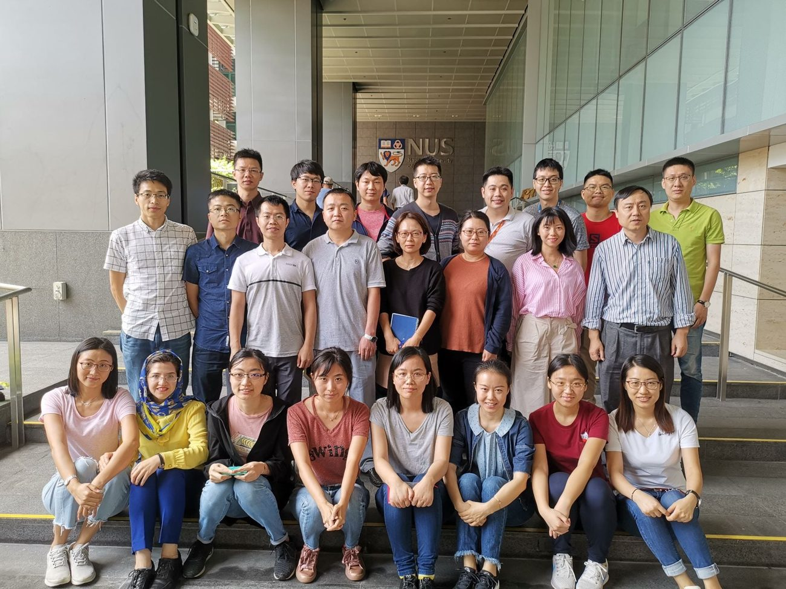</div><figcaption><div class="c1">春 · 校徽墙前的台阶</div></figcaption></div></div><div class="pgnum">20</div></section>
<section class="sheet rail notes"><div class="wm"><span>廿</span></div><div class="runhead"><span class="zh"> </span><span class="logo"><span class="seal">廿</span><span class="t">Liu Lab | 20 Years<small>liuxg.science.nus.edu.sg</small></span></span></div><span class="pgdot pd-tl"></span><span class="pgdot pd-tr"></span><span class="pgdot pd-bl"></span><span class="pgdot pd-br"></span><div class="sheet-inner"><div class="datebar">DATE ______ · ______</div><div class="lines"></div></div><div class="pgnum">21</div></section>
<section class="sheet rail "><div class="runhead"><span class="zh">Group Photos</span><span class="logo"><span class="seal">廿</span><span class="t">Liu Lab | 20 Years<small>liuxg.science.nus.edu.sg</small></span></span></div><span class="pgdot pd-tl"></span><span class="pgdot pd-tr"></span><span class="pgdot pd-bl"></span><span class="pgdot pd-br"></span><div class="sheet-inner"><div class="gp"><div class="gy">2022</div><div class="imgw">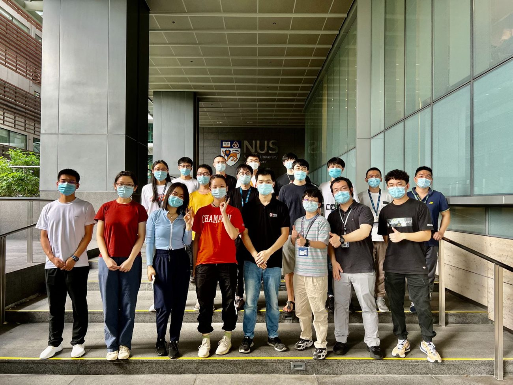</div><figcaption><div class="c1">特殊时期，并肩前行</div></figcaption></div></div><div class="pgnum">22</div></section>
<section class="sheet rail notes"><div class="wm"><span>廿</span></div><div class="runhead"><span class="zh"> </span><span class="logo"><span class="seal">廿</span><span class="t">Liu Lab | 20 Years<small>liuxg.science.nus.edu.sg</small></span></span></div><span class="pgdot pd-tl"></span><span class="pgdot pd-tr"></span><span class="pgdot pd-bl"></span><span class="pgdot pd-br"></span><div class="sheet-inner"><div class="nillus">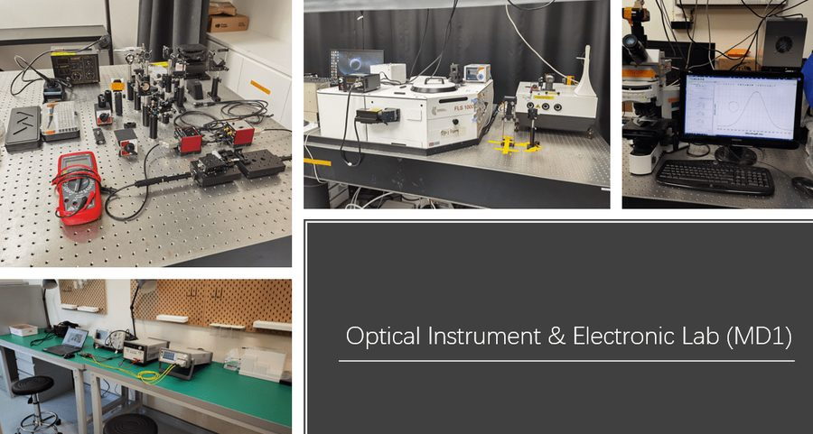<div class="cap">光学与电子实验室 · 光被驯服的地方</div></div><div class="lines" style="top:78mm"></div></div><div class="pgnum">23</div></section>
<section class="sheet rail "><div class="runhead"><span class="zh">Group Photos</span><span class="logo"><span class="seal">廿</span><span class="t">Liu Lab | 20 Years<small>liuxg.science.nus.edu.sg</small></span></span></div><span class="pgdot pd-tl"></span><span class="pgdot pd-tr"></span><span class="pgdot pd-bl"></span><span class="pgdot pd-br"></span><div class="sheet-inner"><div class="gp"><div class="gy">2023</div><div class="imgw">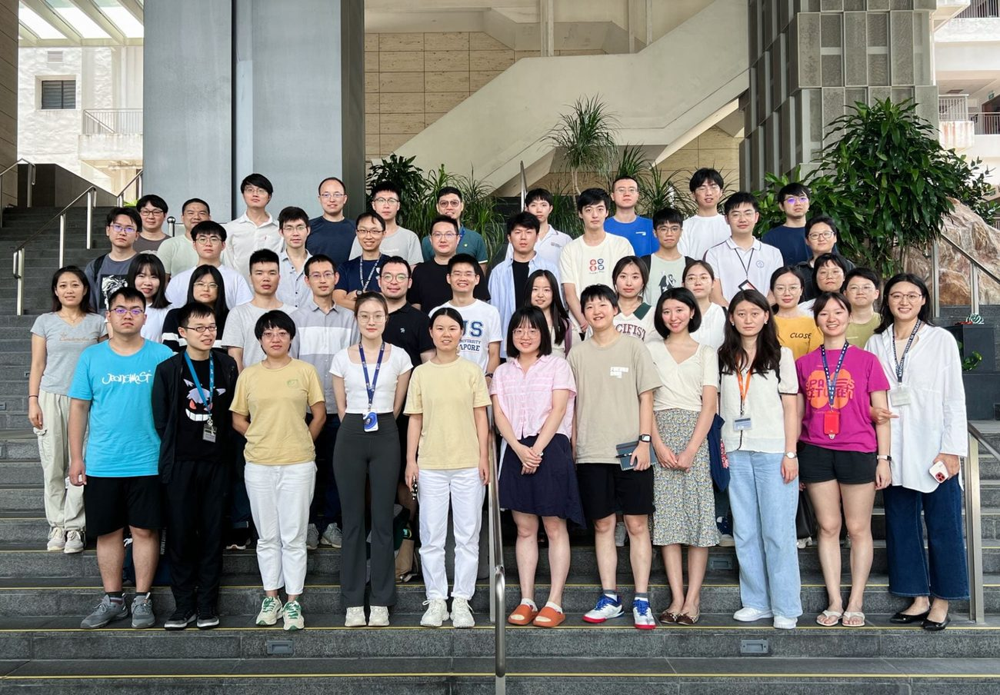</div><figcaption><div class="c1">九月 · 全组同框</div></figcaption></div></div><div class="pgnum">24</div></section>
<section class="sheet rail notes"><div class="wm"><span>廿</span></div><div class="runhead"><span class="zh"> </span><span class="logo"><span class="seal">廿</span><span class="t">Liu Lab | 20 Years<small>liuxg.science.nus.edu.sg</small></span></span></div><span class="pgdot pd-tl"></span><span class="pgdot pd-tr"></span><span class="pgdot pd-bl"></span><span class="pgdot pd-br"></span><div class="sheet-inner"><div class="datebar">DATE ______ · ______</div><div class="lines"></div></div><div class="pgnum">25</div></section>
<section class="sheet rail "><div class="runhead"><span class="zh">Group Photos</span><span class="logo"><span class="seal">廿</span><span class="t">Liu Lab | 20 Years<small>liuxg.science.nus.edu.sg</small></span></span></div><span class="pgdot pd-tl"></span><span class="pgdot pd-tr"></span><span class="pgdot pd-bl"></span><span class="pgdot pd-br"></span><div class="sheet-inner"><div class="gp"><div class="gy">2024</div><div class="imgw">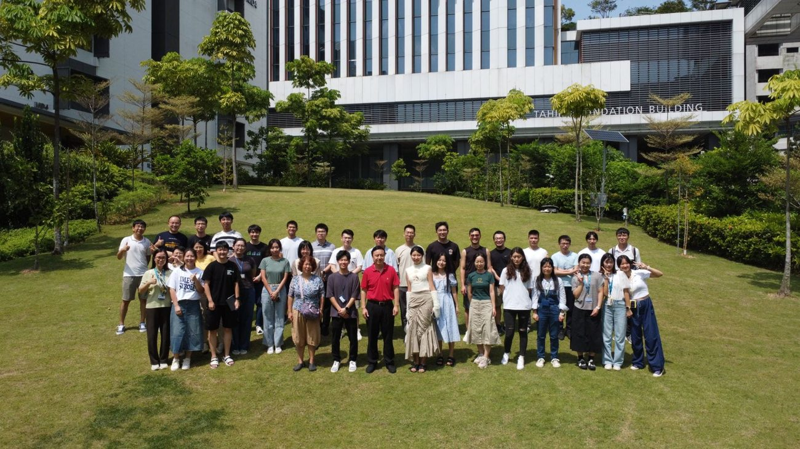</div><figcaption><div class="c1">七月 · 无人机替我们记住这个夏天</div></figcaption></div></div><div class="pgnum">26</div></section>
<section class="sheet rail notes"><div class="wm"><span>廿</span></div><div class="runhead"><span class="zh"> </span><span class="logo"><span class="seal">廿</span><span class="t">Liu Lab | 20 Years<small>liuxg.science.nus.edu.sg</small></span></span></div><span class="pgdot pd-tl"></span><span class="pgdot pd-tr"></span><span class="pgdot pd-bl"></span><span class="pgdot pd-br"></span><div class="sheet-inner"><div class="datebar">DATE ______ · ______</div><div class="lines"></div></div><div class="pgnum">27</div></section>
<section class="sheet rail "><div class="runhead"><span class="zh">Group Photos</span><span class="logo"><span class="seal">廿</span><span class="t">Liu Lab | 20 Years<small>liuxg.science.nus.edu.sg</small></span></span></div><span class="pgdot pd-tl"></span><span class="pgdot pd-tr"></span><span class="pgdot pd-bl"></span><span class="pgdot pd-br"></span><div class="sheet-inner"><div class="gp"><div class="gy">2025</div><div class="imgw">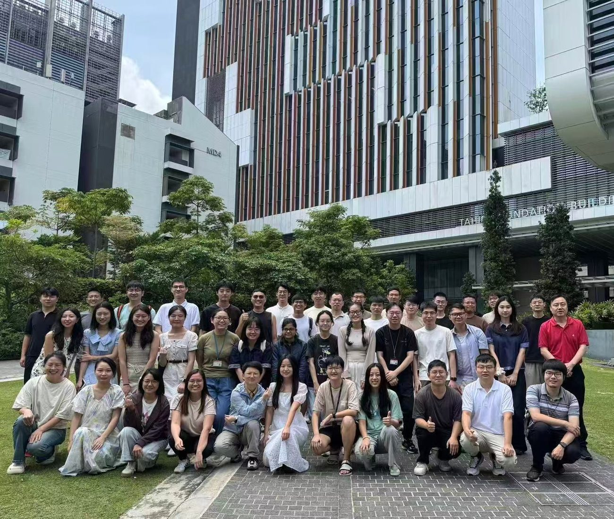</div><figcaption><div class="c1">深秋合影 · 队伍越来越长</div></figcaption></div></div><div class="pgnum">28</div></section>
<section class="sheet rail notes"><div class="wm"><span>廿</span></div><div class="runhead"><span class="zh"> </span><span class="logo"><span class="seal">廿</span><span class="t">Liu Lab | 20 Years<small>liuxg.science.nus.edu.sg</small></span></span></div><span class="pgdot pd-tl"></span><span class="pgdot pd-tr"></span><span class="pgdot pd-bl"></span><span class="pgdot pd-br"></span><div class="sheet-inner"><div class="datebar">DATE ______ · ______</div><div class="lines"></div></div><div class="pgnum">29</div></section>
<section class="sheet rail "><div class="runhead"><span class="zh">Group Photos</span><span class="logo"><span class="seal">廿</span><span class="t">Liu Lab | 20 Years<small>liuxg.science.nus.edu.sg</small></span></span></div><span class="pgdot pd-tl"></span><span class="pgdot pd-tr"></span><span class="pgdot pd-bl"></span><span class="pgdot pd-br"></span><div class="sheet-inner"><div class="gp"><div class="gy">2026</div><div class="imgw">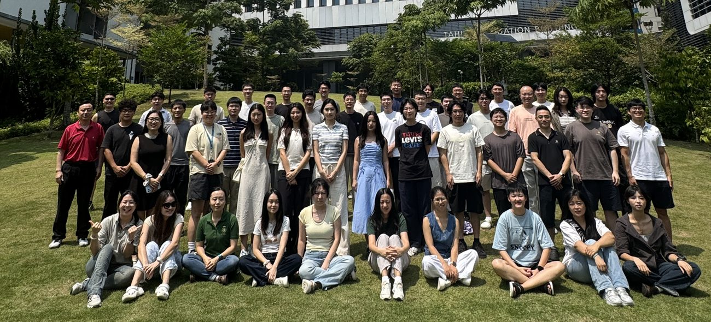</div><figcaption><div class="c1">八月 · 二十周年前夕，全组同框</div></figcaption></div><p class="pplnote" style="text-align:center">年度合照打捞自官网与历年存档；2006–2012、2015、2017、2020、2021 年暂缺——刘老师手里还有一批老照片，待收到后补全。</p></div><div class="pgnum">30</div></section>
<section class="sheet rail notes"><div class="wm"><span>廿</span></div><div class="runhead"><span class="zh"> </span><span class="logo"><span class="seal">廿</span><span class="t">Liu Lab | 20 Years<small>liuxg.science.nus.edu.sg</small></span></span></div><span class="pgdot pd-tl"></span><span class="pgdot pd-tr"></span><span class="pgdot pd-bl"></span><span class="pgdot pd-br"></span><div class="sheet-inner"><div class="datebar">DATE ______ · ______</div><div class="lines"></div></div><div class="pgnum">31</div></section>
<section class="sheet rail "><div class="runhead"><span class="zh">Liu Group People</span><span class="logo"><span class="seal">廿</span><span class="t">Liu Lab | 20 Years<small>liuxg.science.nus.edu.sg</small></span></span></div><span class="pgdot pd-tl"></span><span class="pgdot pd-tr"></span><span class="pgdot pd-bl"></span><span class="pgdot pd-br"></span><div class="sheet-inner"><div class="mosaic">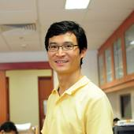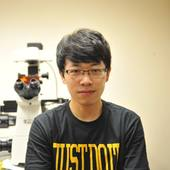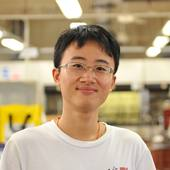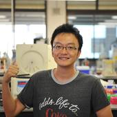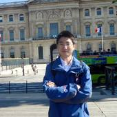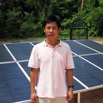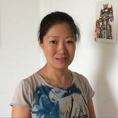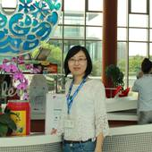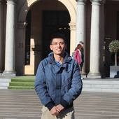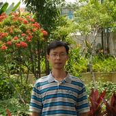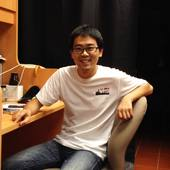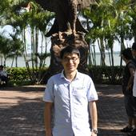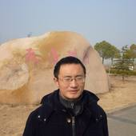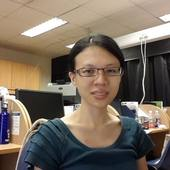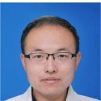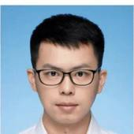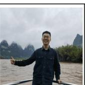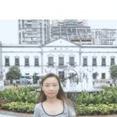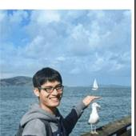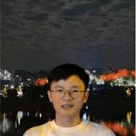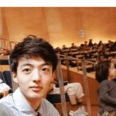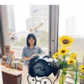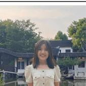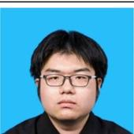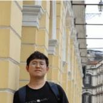<div class="tile">廿</div><div class="tile">光</div></div><div class="mocap"><div class="c1">同框 · 二十年的我们</div><div class="c2">中间是老师，四周是二十年间在这里待过的人——现任成员与历届校友，头像取自课题组官网成员页与校友页。</div></div></div><div class="pgnum">32</div></section>
<section class="sheet rail notes"><div class="wm"><span>廿</span></div><div class="runhead"><span class="zh"> </span><span class="logo"><span class="seal">廿</span><span class="t">Liu Lab | 20 Years<small>liuxg.science.nus.edu.sg</small></span></span></div><span class="pgdot pd-tl"></span><span class="pgdot pd-tr"></span><span class="pgdot pd-bl"></span><span class="pgdot pd-br"></span><div class="sheet-inner"><div class="datebar">DATE ______ · ______</div><div class="lines"></div></div><div class="pgnum">33</div></section>
<section class="sheet rail "><div class="runhead"><span class="zh">Liu Group People</span><span class="logo"><span class="seal">廿</span><span class="t">Liu Lab | 20 Years<small>liuxg.science.nus.edu.sg</small></span></span></div><span class="pgdot pd-tl"></span><span class="pgdot pd-tr"></span><span class="pgdot pd-bl"></span><span class="pgdot pd-br"></span><div class="sheet-inner"><div class="sechead"><h2>Liu Group People</h2><span class="zh">刘组人 · 桃李</span></div><div class="ppl"><div class="pe"><div class="txt"><div class="nm">Jiang Changlong</div><div class="rl"><b>2007-2008</b></div><div class="ds">中科院合肥物质科学研究院</div></div></div><div class="pe"><div class="txt"><div class="nm">Sadananda Ranjit</div><div class="rl"><b>PhD · 2007-2011</b></div><div class="ds">NIT Jamshedpur · 印度国立理工学院</div></div></div><div class="pe"><div class="txt"><div class="nm">Wang Feng</div><div class="rl"><b>2007-2012</b></div><div class="ds">City University of Hong Kong · 香港城市大学</div></div></div><div class="pe"><div class="txt"><div class="nm">Wang Juan</div><div class="rl"><b>PhD · 2007-2012</b></div><div class="ds">Zhejiang University · 浙江大学</div></div></div><div class="pe"><div class="txt"><div class="nm">Xu Wei</div><div class="rl"><b>PhD · 2007-2011</b></div><div class="ds">江苏光智检测技术（苏州）· 创办企业</div></div></div><div class="pe"><div class="txt"><div class="nm">Deng Renren</div><div class="rl"><b>PhD · 2009-2013</b></div><div class="ds">Zhejiang University · 浙江大学</div></div></div></div></div><div class="pgnum">34</div></section>
<section class="sheet rail notes"><div class="wm"><span>廿</span></div><div class="runhead"><span class="zh"> </span><span class="logo"><span class="seal">廿</span><span class="t">Liu Lab | 20 Years<small>liuxg.science.nus.edu.sg</small></span></span></div><span class="pgdot pd-tl"></span><span class="pgdot pd-tr"></span><span class="pgdot pd-bl"></span><span class="pgdot pd-br"></span><div class="sheet-inner"><div class="datebar">DATE ______ · ______</div><div class="lines"></div></div><div class="pgnum">35</div></section>
<section class="sheet rail "><div class="runhead"><span class="zh">Liu Group People</span><span class="logo"><span class="seal">廿</span><span class="t">Liu Lab | 20 Years<small>liuxg.science.nus.edu.sg</small></span></span></div><span class="pgdot pd-tl"></span><span class="pgdot pd-tr"></span><span class="pgdot pd-bl"></span><span class="pgdot pd-br"></span><div class="sheet-inner"><div class="ppl"><div class="pe"><div class="txt"><div class="nm">Su Qianqian</div><div class="rl"><b>PhD · 2009-2013</b></div><div class="ds">Shanghai University · 上海大学</div></div></div><div class="pe"><div class="txt"><div class="nm">Xie Xiaoji</div><div class="rl"><b>PhD · 2009-2013</b></div><div class="ds">Nanjing Tech University · 南京工业大学</div></div></div><div class="pe"><div class="txt"><div class="nm">Han Sanyang</div><div class="rl"><b>PhD · 2010-2014</b></div><div class="ds">Tsinghua SIGS · 清华大学深圳国际研究生院</div></div></div><div class="pe"><div class="txt"><div class="nm">Liu Xiaowang</div><div class="rl"><b>PhD · 2011-2015</b></div><div class="ds">Northwestern Polytechnical University · 西北工业大学</div></div></div><div class="pe"><div class="txt"><div class="nm">Xu Hui</div><div class="rl"><b>2011-2013</b></div><div class="ds">Heilongjiang University · 黑龙江大学</div></div></div><div class="pe"><div class="txt"><div class="nm">Zhang Yuhai</div><div class="rl"><b>PhD · 2011-2015</b></div><div class="ds">University of Jinan · 济南大学</div></div></div></div></div><div class="pgnum">36</div></section>
<section class="sheet rail notes"><div class="wm"><span>廿</span></div><div class="runhead"><span class="zh"> </span><span class="logo"><span class="seal">廿</span><span class="t">Liu Lab | 20 Years<small>liuxg.science.nus.edu.sg</small></span></span></div><span class="pgdot pd-tl"></span><span class="pgdot pd-tr"></span><span class="pgdot pd-bl"></span><span class="pgdot pd-br"></span><div class="sheet-inner"><div class="nillus"><div class="cap">暗室里由绿到红的稀土发光样品</div></div><div class="lines" style="top:78mm"></div></div><div class="pgnum">37</div></section>
<section class="sheet rail "><div class="runhead"><span class="zh">Liu Group People</span><span class="logo"><span class="seal">廿</span><span class="t">Liu Lab | 20 Years<small>liuxg.science.nus.edu.sg</small></span></span></div><span class="pgdot pd-tl"></span><span class="pgdot pd-tr"></span><span class="pgdot pd-bl"></span><span class="pgdot pd-br"></span><div class="sheet-inner"><div class="ppl"><div class="pe"><div class="txt"><div class="nm">Chen Runfeng</div><div class="rl"><b>2012-2014</b></div><div class="ds">Nanjing Univ. of Posts and Telecommunications · 南京邮电大学</div></div></div><div class="pe"><div class="txt"><div class="nm">Huang Xiaoyong</div><div class="rl"><b>2012-2013</b></div><div class="ds">Taiyuan University of Technology · 太原理工大学</div></div></div><div class="pe"><div class="txt"><div class="nm">Qin Xian</div><div class="rl"><b>2013-2023</b></div><div class="ds">Fujian Normal University · 福建师范大学</div></div></div><div class="pe"><div class="txt"><div class="nm">Wang Yu</div><div class="rl"><b>2013-2016</b></div><div class="ds">Shenzhen University · 深圳大学</div></div></div><div class="pe"><div class="txt"><div class="nm">Zhou Bo</div><div class="rl"><b>2013-2015</b></div><div class="ds">South China University of Technology · 华南理工大学</div></div></div><div class="pe"><div class="txt"><div class="nm">An Zhongfu</div><div class="rl"><b>2014-2015</b></div><div class="ds">Nanjing Tech University · 南京工业大学</div></div></div></div></div><div class="pgnum">38</div></section>
<section class="sheet rail notes"><div class="wm"><span>廿</span></div><div class="runhead"><span class="zh"> </span><span class="logo"><span class="seal">廿</span><span class="t">Liu Lab | 20 Years<small>liuxg.science.nus.edu.sg</small></span></span></div><span class="pgdot pd-tl"></span><span class="pgdot pd-tr"></span><span class="pgdot pd-bl"></span><span class="pgdot pd-br"></span><div class="sheet-inner"><div class="datebar">DATE ______ · ______</div><div class="lines"></div></div><div class="pgnum">39</div></section>
<section class="sheet rail "><div class="runhead"><span class="zh">Liu Group People</span><span class="logo"><span class="seal">廿</span><span class="t">Liu Lab | 20 Years<small>liuxg.science.nus.edu.sg</small></span></span></div><span class="pgdot pd-tl"></span><span class="pgdot pd-tr"></span><span class="pgdot pd-bl"></span><span class="pgdot pd-br"></span><div class="sheet-inner"><div class="ppl"><div class="pe"><div class="txt"><div class="nm">Liang Liangliang</div><div class="rl"><b>PhD · 2014-2018</b></div><div class="ds">Xiamen University · 厦门大学</div></div></div><div class="pe"><div class="txt"><div class="nm">Chen Qiushui</div><div class="rl"><b>2015-2019</b></div><div class="ds">Fuzhou University · 福州大学</div></div></div><div class="pe"><div class="txt"><div class="nm">Yi Zhigao</div><div class="rl"><b>2015-2024</b></div><div class="ds">中科院苏州生物医学工程技术研究所</div></div><div class="noimg">Y</div></div><div class="pe"><div class="txt"><div class="nm">Duan Ruixue</div><div class="rl"><b>2016-2020</b></div><div class="ds">Soochow University · 苏州大学</div></div><div class="noimg">D</div></div><div class="pe"><div class="txt"><div class="nm">He Yi</div><div class="rl"><b>2017-2018</b></div><div class="ds">Southwest Univ. of Science and Technology · 西南科技大学</div></div><div class="noimg">H</div></div><div class="pe"><div class="txt"><div class="nm">Luo Zichao</div><div class="rl"><b>2017-2023</b></div><div class="ds">Fudan University · 复旦大学</div></div><div class="noimg">L</div></div></div></div><div class="pgnum">40</div></section>
<section class="sheet rail notes"><div class="wm"><span>廿</span></div><div class="runhead"><span class="zh"> </span><span class="logo"><span class="seal">廿</span><span class="t">Liu Lab | 20 Years<small>liuxg.science.nus.edu.sg</small></span></span></div><span class="pgdot pd-tl"></span><span class="pgdot pd-tr"></span><span class="pgdot pd-bl"></span><span class="pgdot pd-br"></span><div class="sheet-inner"><div class="datebar">DATE ______ · ______</div><div class="lines"></div></div><div class="pgnum">41</div></section>
<section class="sheet rail "><div class="runhead"><span class="zh">Liu Group People</span><span class="logo"><span class="seal">廿</span><span class="t">Liu Lab | 20 Years<small>liuxg.science.nus.edu.sg</small></span></span></div><span class="pgdot pd-tl"></span><span class="pgdot pd-tr"></span><span class="pgdot pd-bl"></span><span class="pgdot pd-br"></span><div class="sheet-inner"><div class="ppl"><div class="pe"><div class="txt"><div class="nm">Yan Shuangqian</div><div class="rl"><b>2017-2020</b></div><div class="ds">Fujian Normal University · 福建师范大学</div></div><div class="noimg">Y</div></div><div class="pe"><div class="txt"><div class="nm">Guo Dan</div><div class="rl"><b>2018-2020</b></div><div class="ds">Beijing University of Technology · 北京工业大学</div></div><div class="noimg">G</div></div><div class="pe"><div class="txt"><div class="nm">Han Chunmiao</div><div class="rl"><b>2018-2019</b></div><div class="ds">Heilongjiang University · 黑龙江大学</div></div><div class="noimg">H</div></div><div class="pe"><div class="txt"><div class="nm">Li Zhenglin</div><div class="rl"><b>2018-2021</b></div><div class="ds">Wenzhou Medical University · 温州医科大学</div></div><div class="noimg">L</div></div><div class="pe"><div class="txt"><div class="nm">Xu Jun</div><div class="rl"><b>PhD · 2018-2022</b></div><div class="ds">Hangzhou Normal University · 杭州师范大学</div></div><div class="noimg">X</div></div><div class="pe"><div class="txt"><div class="nm">Zhou Lei</div><div class="rl"><b>2018-2021</b></div><div class="ds">Sun Yat-sen University · 中山大学</div></div><div class="noimg">Z</div></div></div></div><div class="pgnum">42</div></section>
<section class="sheet rail notes"><div class="wm"><span>廿</span></div><div class="runhead"><span class="zh"> </span><span class="logo"><span class="seal">廿</span><span class="t">Liu Lab | 20 Years<small>liuxg.science.nus.edu.sg</small></span></span></div><span class="pgdot pd-tl"></span><span class="pgdot pd-tr"></span><span class="pgdot pd-bl"></span><span class="pgdot pd-br"></span><div class="sheet-inner"><div class="datebar">DATE ______ · ______</div><div class="lines"></div></div><div class="pgnum">43</div></section>
<section class="sheet rail "><div class="runhead"><span class="zh">Liu Group People</span><span class="logo"><span class="seal">廿</span><span class="t">Liu Lab | 20 Years<small>liuxg.science.nus.edu.sg</small></span></span></div><span class="pgdot pd-tl"></span><span class="pgdot pd-tr"></span><span class="pgdot pd-bl"></span><span class="pgdot pd-br"></span><div class="sheet-inner"><div class="ppl"><div class="pe"><div class="txt"><div class="nm">Li Zhichun</div><div class="rl"><b>2019-2020</b></div><div class="ds">Changzhou University · 常州大学</div></div><div class="noimg">L</div></div><div class="pe"><div class="txt"><div class="nm">Tang Yongan</div><div class="rl"><b>2019-2022</b></div><div class="ds">Soochow University · 苏州大学</div></div><div class="noimg">T</div></div><div class="pe"><div class="txt"><div class="nm">Lin Kebin</div><div class="rl"><b>2021-2022</b></div><div class="ds">Univ. of Electronic Science and Technology · 电子科技大学</div></div><div class="noimg">L</div></div><div class="pe"><div class="txt"><div class="nm">Zheng Kezhi</div><div class="ds">Jilin University · 吉林大学</div></div><div class="noimg">Z</div></div></div><p class="pplnote">按入组年份排序；身份与年份据官网校友页/毕业生名册，只列单位与去向，具体职称以各单位官网为准。走出这间实验室的人，有的在世界各地建起自己的实验室，有的把技术带进了产业——名单仍在增补，完整校友名录见官网 Alumni 页。</p></div><div class="pgnum">44</div></section>
<section class="sheet rail notes"><div class="wm"><span>廿</span></div><div class="runhead"><span class="zh"> </span><span class="logo"><span class="seal">廿</span><span class="t">Liu Lab | 20 Years<small>liuxg.science.nus.edu.sg</small></span></span></div><span class="pgdot pd-tl"></span><span class="pgdot pd-tr"></span><span class="pgdot pd-bl"></span><span class="pgdot pd-br"></span><div class="sheet-inner"><div class="datebar">DATE ______ · ______</div><div class="lines"></div></div><div class="pgnum">45</div></section>
<section class="sheet  eradiv"><div class="sheet-inner"><div class="eid">E1 · FIVE-YEAR PLAN 2006 — 2010</div><h2>立基</h2><div class="ten">THE FOUNDING YEARS · 2006 — 2010</div><div class="fo">从金属纳米结构与自组装起步，为镧系上转换发光&quot;定调&quot;</div><div class="story">2006 年 12 月，青年科学家刘小钢在新加坡放下行李，成为 NUS 化学系的助理教授。最初两年，论文列表是空白的：产出都在实验台上——置办第一批仪器，写第一份申请书，迎来最早的几名学生。2008 年，第一批独立成果连同第一张 Angew 内封一起到来；2009 年，那篇日后被引三千五百余次的上转换综述，为整个领域写下了&quot;教科书&quot;；2010 年，组史第一篇 Nature 收官——镧系上转换发光，从此有了自己的名字。</div></div><div class="pgnum">46</div></section>
<section class="sheet rail "><div class="runhead"><span class="zh">Four Five-Year Plans</span><span class="band">THE FOUNDING YEARS 2006 — 2010 · Cover</span></div><span class="pgdot pd-tl"></span><span class="pgdot pd-tr"></span><span class="pgdot pd-bl"></span><span class="pgdot pd-br"></span><div class="sheet-inner"><div class="cvp"><div class="imgwrap"></div><div class="meta"><div class="lab">Cover Paper · Angew. Chem. Int. Ed. 2008 · Inside Cover<span>[13]</span></div><div class="ti">Multicolor Tuning of (Ln, P)-Doped YVO4 Nanoparticles by Single Wavelength Excitation</div><div class="au">F. Wang, X. Xue and X. Liu*</div><div class="rf"><i>Angewandte Chemie</i> 2008, 120, 920-923; Angewandte Chemie International Edition 2008, 47, 906-909 · <span class="doi">doi: 10.1002/ange.200704520</span></div><div class="bl">单一波长激发下，Ln/P 共掺让 YVO₄ 纳米颗粒发出多种颜色——课题组的第一张封面。</div></div></div></div><div class="pgnum">47</div></section>
<section class="sheet rail notes"><div class="wm"><span>廿</span></div><div class="runhead"><span class="zh"> </span><span class="logo"><span class="seal">廿</span><span class="t">Liu Lab | 20 Years<small>liuxg.science.nus.edu.sg</small></span></span></div><span class="pgdot pd-tl"></span><span class="pgdot pd-tr"></span><span class="pgdot pd-bl"></span><span class="pgdot pd-br"></span><div class="sheet-inner"><div class="datebar">DATE ______ · ______</div><div class="lines"></div></div><div class="pgnum">48</div></section>
<section class="sheet rail "><div class="runhead"><span class="zh">Four Five-Year Plans</span><span class="band">THE FOUNDING YEARS 2006 — 2010 · Cover</span></div><span class="pgdot pd-tl"></span><span class="pgdot pd-tr"></span><span class="pgdot pd-bl"></span><span class="pgdot pd-br"></span><div class="sheet-inner"><div class="cvp"><div class="imgwrap"></div><div class="meta"><div class="lab">Cover Paper · Angew. Chem. Int. Ed. 2009 · Inside Cover<span>[18]</span></div><div class="ti">Ultrasensitive and Selective Colorimetric DNA Detection by Nicking Endonuclease-Assisted Nanoparticle Amplification</div><div class="au">W. Xu, X. Xue, T. Li, H. Zeng and X. Liu*</div><div class="rf"><i>Angewandte Chemie</i> 2009, 121, 6981–6984; Angewandte Chemie International Edition 2009, 48, 6849-6852 · <span class="doi">doi: 10.1002/ange.200901772</span></div><div class="bl">切刻内切酶辅助的信号放大，把金纳米颗粒比色检测推进超灵敏区间。</div></div></div></div><div class="pgnum">49</div></section>
<section class="sheet rail notes"><div class="wm"><span>廿</span></div><div class="runhead"><span class="zh"> </span><span class="logo"><span class="seal">廿</span><span class="t">Liu Lab | 20 Years<small>liuxg.science.nus.edu.sg</small></span></span></div><span class="pgdot pd-tl"></span><span class="pgdot pd-tr"></span><span class="pgdot pd-bl"></span><span class="pgdot pd-br"></span><div class="sheet-inner"><div class="datebar">DATE ______ · ______</div><div class="lines"></div></div><div class="pgnum">50</div></section>
<section class="sheet rail "><div class="runhead"><span class="zh">Four Five-Year Plans</span><span class="band">THE FOUNDING YEARS 2006 — 2010 · Cover</span></div><span class="pgdot pd-tl"></span><span class="pgdot pd-tr"></span><span class="pgdot pd-bl"></span><span class="pgdot pd-br"></span><div class="sheet-inner"><div class="cvp"><div class="imgwrap"></div><div class="meta"><div class="lab">Cover Paper · Analyst 2010 · Cover<span>[28]</span></div><div class="ti">Upconversion Nanoparticles in Biological Labeling, Imaging and Therapy</div><div class="au">F. Wang, D. Banerjee, Y. Liu, X. Chen, X. Liu*</div><div class="rf"><i>Analyst</i> 2010, 135, 1839-1854 · <span class="doi">doi: 10.1039/c0an00144a</span></div><div class="bl">上转换纳米颗粒在生物标记、成像与治疗中的早期全景综述。</div></div></div></div><div class="pgnum">51</div></section>
<section class="sheet rail notes"><div class="wm"><span>廿</span></div><div class="runhead"><span class="zh"> </span><span class="logo"><span class="seal">廿</span><span class="t">Liu Lab | 20 Years<small>liuxg.science.nus.edu.sg</small></span></span></div><span class="pgdot pd-tl"></span><span class="pgdot pd-tr"></span><span class="pgdot pd-bl"></span><span class="pgdot pd-br"></span><div class="sheet-inner"><div class="nillus"><div class="cap">Kent Ridge 校门 · 来来往往的日常</div></div><div class="lines" style="top:78mm"></div></div><div class="pgnum">52</div></section>
<section class="sheet rail "><div class="runhead"><span class="zh">Four Five-Year Plans</span><span class="band">THE FOUNDING YEARS 2006 — 2010</span></div><span class="pgdot pd-tl"></span><span class="pgdot pd-tr"></span><span class="pgdot pd-bl"></span><span class="pgdot pd-br"></span><div class="sheet-inner"><div class="eh"><span class="tt">立基</span><span class="rg">THE FOUNDING YEARS · 2006 — 2010</span><span class="n">19 PAPERS</span></div><div class="pub"><div class="lab"><b>[13]</b>Angewandte Chemie · 2008<span class="tg">· 上转换机理</span></div><span class="ti">Multicolor Tuning of (Ln, P)-Doped YVO4 Nanoparticles by Single Wavelength Excitation</span><span class="au">F. Wang, X. Xue and X. Liu*</span><br><span class="rf"><i>Angewandte Chemie</i> 2008, 120, 920-923; Angewandte Chemie International Edition 2008, 47, 906-909</span> <span class="doi">doi: 10.1002/ange.200704520</span></div><div class="pub"><div class="lab"><b>[14]</b>Journal of the American Chemical Society · 2008<span class="tg">· 金属纳米</span></div><span class="ti">One-Step, Room Temperature, Colorimetric Detection of Mercury (Hg2+) Using DNA/Nanoparticle Conjugates</span><span class="au">X. Xue, F. Wang and X. Liu*</span><br><span class="rf"><i>Journal of the American Chemical Society</i> 2008, 130, 3244-3245</span> <span class="doi">doi: 10.1021/ja076716c</span></div><div class="pub"><div class="lab"><b>[15]</b>Journal of the American Chemical Society · 2008<span class="tg">· 上转换机理</span></div><span class="ti">Upconversion Multicolor Fine-Tuning: Visible to Near-Infrared Emssion from Lanthanide-Doped NaYF4 Nanoparticles</span><span class="au">F. Wang and X. Liu*</span><br><span class="rf"><i>Journal of the American Chemical Society</i> 2008, 130, 5642-5643</span> <span class="doi">doi: 10.1021/ja800868a</span></div><div class="pub"><div class="lab"><b>[16]</b>Advanced Materials · 2008<span class="tg">· 上转换机理</span></div><span class="ti">Up- and Down-Conversion Cubic Zirconia and Hafnia Nanobelts</span><span class="au">C. Jiang, F. Wang, N. Wu, X. Liu*</span><br><span class="rf"><i>Advanced Materials</i> 2008, 20, 4826-4829</span> <span class="doi">doi: 10.1002/adma.200801459</span></div><div class="pub"><div class="lab"><b>[17]</b>Chemical Society Reviews · 2009<span class="tg">· 综述</span></div><span class="ti">Recent Advances in the Chemistry of Lanthanide-Doped Upconversion Nanocrystals</span><span class="au">F. Wang and X. Liu*</span><br><span class="rf"><i>Chemical Society Reviews</i> 2009, 38, 976-989</span> <span class="doi">doi: 10.1039/b809132n</span></div><div class="pub"><div class="lab"><b>[18]</b>Angewandte Chemie · 2009<span class="tg">· 金属纳米</span></div><span class="ti">Ultrasensitive and Selective Colorimetric DNA Detection by Nicking Endonuclease-Assisted Nanoparticle Amplification</span><span class="au">W. Xu, X. Xue, T. Li, H. Zeng and X. Liu*</span><br><span class="rf"><i>Angewandte Chemie</i> 2009, 121, 6981–6984; Angewandte Chemie International Edition 2009, 48, 6849-6852</span> <span class="doi">doi: 10.1002/ange.200901772</span></div><div class="pub"><div class="lab"><b>[19]</b>Chemistry: A European Journal · 2009<span class="tg">· 其他</span></div><span class="ti">Synthesis of Aryl Sulfides via Decarboxylative C-S Cross-Couplings</span><span class="au">Z. Duan, S. Ranjit, P. Zhang, X. Liu*</span><br><span class="rf"><i>Chemistry: A European Journal</i> 2009, 15, 3666-3669</span> <span class="doi">doi: 10.1002/chem.200900133</span></div><div class="pub"><div class="lab"><b>[20]</b>Angewandte Chemie · 2009<span class="tg">· 综述</span></div><span class="ti">Zinc Oxide Nano- and Microfabrication from Coordination-Polymer Templates</span><span class="au">X. Liu</span><br><span class="rf"><i>Angewandte Chemie</i> 2009, 121, 3062–3065; Angewandte Chemie International Edition 2009, 48, 3018-3021</span> <span class="doi">doi: 10.1002/anie.200805972</span></div></div><div class="pgnum">53</div></section>
<section class="sheet rail notes"><div class="wm"><span>廿</span></div><div class="runhead"><span class="zh"> </span><span class="logo"><span class="seal">廿</span><span class="t">Liu Lab | 20 Years<small>liuxg.science.nus.edu.sg</small></span></span></div><span class="pgdot pd-tl"></span><span class="pgdot pd-tr"></span><span class="pgdot pd-bl"></span><span class="pgdot pd-br"></span><div class="sheet-inner"><div class="datebar">DATE ______ · ______</div><div class="lines"></div></div><div class="pgnum">54</div></section>
<section class="sheet rail "><div class="runhead"><span class="zh">Four Five-Year Plans</span><span class="band">THE FOUNDING YEARS 2006 — 2010</span></div><span class="pgdot pd-tl"></span><span class="pgdot pd-tr"></span><span class="pgdot pd-bl"></span><span class="pgdot pd-br"></span><div class="sheet-inner"><div class="eh"><span class="tt" style="font-size:9pt">立基</span><span class="rg">continued</span></div><div class="pub"><div class="lab"><b>[21]</b>Journal of the American Chemical Society · 2009<span class="tg">· 金属纳米</span></div><span class="ti">Multiplex Single-Nucleotide Polymorphism Typing by Nanoparticle-Coupled DNA-Templated Reactions</span><span class="au">X. Xue, W. Xu, F. Wang and X. Liu*</span><br><span class="rf"><i>Journal of the American Chemical Society</i> 2009, 131, 11668-11669</span> <span class="doi">doi: 10.1021/ja904728v</span></div><div class="pub"><div class="lab"><b>[23]</b>Nanoscale · 2009<span class="tg">· 金属纳米</span></div><span class="ti">Nanocontact-induced Catalytic Activation in Palladium Nanoparticles</span><span class="au">C. Jiang, S. Ranjit, Z. Duan, Y. L. Zhong, K. P. Loh, C. Zhang and X. Liu*</span><br><span class="rf"><i>Nanoscale</i> 2009, 1, 391-394</span> <span class="doi">doi: 10.1039/b9nr00093c</span></div><div class="pub"><div class="lab"><b>[24]</b>Nature · 2010<span class="tg">· 上转换机理</span></div><span class="ti">Simultaneous Phase and Size Control of Upconversion Nanocrystals through Lanthanide Doping</span><span class="au">F. Wang, Y. Han, C. S. Lim, Y. Lu, J. Wang, J. Xu, H. Chen, C. Zhang, M. Hong and X. Liu*</span><br><span class="rf"><i>Nature</i> 2010, 463, 1061-1065</span> <span class="doi">doi: 10.1038/nature08777</span></div><div class="pub"><div class="lab"><b>[25]</b>Spectroscopy Letters · 2010<span class="tg">· 上转换机理</span></div><span class="ti">Tunable Upconversion Emissions from Lanthanide‐doped Monodisperse β‐NaYF4 Nanoparticles</span><span class="au">F. Wang, J. Wang, J. Xu, X. Xue, H. Chen and X. Liu*</span><br><span class="rf"><i>Spectroscopy Letters</i> 2010, 43, 400-405</span> <span class="doi">doi: 10.1080/00387010.2010.487018</span></div><div class="pub"><div class="lab"><b>[26]</b>Nanoscale · 2010<span class="tg">· 能源</span></div><span class="ti">Tuning the shape and thermoelectric property of PbTe nanocrystals by bismuth doping</span><span class="au">Q. Zhang, T. Sun, F. Cao, M. Li, M. Hong, J. Yuan, Q. Yan, H. H. Hng, N. Wu, X. Liu*</span><br><span class="rf"><i>Nanoscale</i> 2010, 2, 1256-1259</span> <span class="doi">doi: 10.1039/c0nr00115e</span></div><div class="pub"><div class="lab"><b>[27]</b>Comptes rendus Chimie · 2010<span class="tg">· 上转换机理</span></div><span class="ti">Lanthanide-doped LiYF4 Nanoparticles: Synthesis and Multicolor Upconversion Tuning</span><span class="au">J. Wang, F. Wang, J. Xu, Y. Wang, Y. Liu, X. Chen, H. Chen, X. Liu*</span><br><span class="rf"><i>Comptes rendus Chimie</i> 2010, 13, 731-736</span> <span class="doi">doi: 10.1016/j.crci.2010.03.021</span></div><div class="pub"><div class="lab"><b>[28]</b>Analyst · 2010<span class="tg">· 综述</span></div><span class="ti">Upconversion Nanoparticles in Biological Labeling, Imaging and Therapy</span><span class="au">F. Wang, D. Banerjee, Y. Liu, X. Chen, X. Liu*</span><br><span class="rf"><i>Analyst</i> 2010, 135, 1839-1854</span> <span class="doi">doi: 10.1039/c0an00144a</span></div><div class="pub"><div class="lab"><b>[29]</b>Organic Letters · 2010<span class="tg">· 其他</span></div><span class="ti">One-Pot Synthesis of Amine-Substituted Aryl Sulfides and Benzo[b]thiophene Derivatives</span><span class="au">Z. Duan, S. Ranjit, X. Liu*</span><br><span class="rf"><i>Organic Letters</i> 2010, 12, 2430-2433</span> <span class="doi">doi: 10.1021/ol100816g</span></div><div class="pub"><div class="lab"><b>[31]</b>Angewandte Chemie · 2010<span class="tg">· 上转换机理</span></div><span class="ti">Direct Evidence of Surface Quenching Effect on Size-Dependent Luminescence of Upconversion Nanoparticles</span><span class="au">F. Wang, J. Wang, X. Liu*</span><br><span class="rf"><i>Angewandte Chemie</i> 2010, 122, 7618-7622; Angewandte Chemie International Edition 2010, 49, 7456-7460</span> <span class="doi">doi: 10.1002/ange.201003959</span></div><div class="pub"><div class="lab"><b>[33]</b>Organic Letters · 2010<span class="tg">· 其他</span></div><span class="ti">Synthesis of Vinyl Sulfides by Copper-Catalyzed Decarboxylative C-S Cross-Coupling</span><span class="au">S. Ranjit, Z. Duan, P. Zhang, X. Liu*</span><br><span class="rf"><i>Organic Letters</i> 2010, 12, 4134-4136</span> <span class="doi">doi: 10.1021/ol101729k</span></div></div><div class="pgnum">55</div></section>
<section class="sheet rail notes"><div class="wm"><span>廿</span></div><div class="runhead"><span class="zh"> </span><span class="logo"><span class="seal">廿</span><span class="t">Liu Lab | 20 Years<small>liuxg.science.nus.edu.sg</small></span></span></div><span class="pgdot pd-tl"></span><span class="pgdot pd-tr"></span><span class="pgdot pd-bl"></span><span class="pgdot pd-br"></span><div class="sheet-inner"><div class="datebar">DATE ______ · ______</div><div class="lines"></div></div><div class="pgnum">56</div></section>
<section class="sheet rail "><div class="runhead"><span class="zh">Four Five-Year Plans</span><span class="band">THE FOUNDING YEARS 2006 — 2010</span></div><span class="pgdot pd-tl"></span><span class="pgdot pd-tr"></span><span class="pgdot pd-bl"></span><span class="pgdot pd-br"></span><div class="sheet-inner"><div class="eh"><span class="tt" style="font-size:9pt">立基</span><span class="rg">continued</span></div><div class="pub"><div class="lab"><b>[34]</b>Small · 2010<span class="tg">· 综述</span></div><span class="ti">Aligned Conjugated Polymers Standing Upright</span><span class="au">X. Liu*</span><br><span class="rf"><i>Small</i> 2010, 6, 2333-2335</span> <span class="doi">doi: 10.1002/smll.201001135</span></div><p class="pplnote">本段其余论文的配图正在征集中，交回后按精选版式补入。</p></div><div class="pgnum">57</div></section>
<section class="sheet rail notes"><div class="wm"><span>廿</span></div><div class="runhead"><span class="zh"> </span><span class="logo"><span class="seal">廿</span><span class="t">Liu Lab | 20 Years<small>liuxg.science.nus.edu.sg</small></span></span></div><span class="pgdot pd-tl"></span><span class="pgdot pd-tr"></span><span class="pgdot pd-bl"></span><span class="pgdot pd-br"></span><div class="sheet-inner"><div class="datebar">DATE ______ · ______</div><div class="lines"></div></div><div class="pgnum">58</div></section>
<section class="sheet  eradiv"><div class="sheet-inner"><div class="eid">E2 · FIVE-YEAR PLAN 2011 — 2015</div><h2>筑体系</h2><div class="ten">BUILDING THE SYSTEM · 2011 — 2015</div><div class="fo">核壳工程与能量迁移成型——上转换第一次有了&quot;设计学&quot;</div><div class="story">2011 年 7 月，助理教授成为副教授，同时在 A*STAR 材料研究院兼任资深科学家。真正的跨越发生在材料内部：把发光离子安放进核壳结构，让能量在晶格里定向迁移——发光第一次成了可以&quot;设计&quot;的东西。Nature Materials 两度记下这一时期的突破；2014 年 8 月，NUS 楼前的合影里已站着近三十个人；2015 年，组史第 100 篇论文发表，Nat. Mater. 与 Nat. Nanotech. 相继而至。一间实验室，长成了一支队伍。</div></div><div class="pgnum">59</div></section>
<section class="sheet rail "><div class="runhead"><span class="zh">Four Five-Year Plans</span><span class="band">BUILDING THE SYSTEM 2011 — 2015 · Cover</span></div><span class="pgdot pd-tl"></span><span class="pgdot pd-tr"></span><span class="pgdot pd-bl"></span><span class="pgdot pd-br"></span><div class="sheet-inner"><div class="cvp"><div class="imgwrap"></div><div class="meta"><div class="lab">Cover Paper · J. Mater. Chem. 2011 · Cover<span>[42]</span></div><div class="ti">Emerging Functional Nanomaterials for Therapeutics</div><div class="au">X. Xue, F. Wang, X. Liu*</div><div class="rf"><i>Journal of Materials Chemistry</i> 2011, 21, 13107-13127 · <span class="doi">doi: 10.1039/c1jm11401h</span></div><div class="bl">面向治疗的新兴功能纳米材料综述。</div></div></div></div><div class="pgnum">60</div></section>
<section class="sheet rail notes"><div class="wm"><span>廿</span></div><div class="runhead"><span class="zh"> </span><span class="logo"><span class="seal">廿</span><span class="t">Liu Lab | 20 Years<small>liuxg.science.nus.edu.sg</small></span></span></div><span class="pgdot pd-tl"></span><span class="pgdot pd-tr"></span><span class="pgdot pd-bl"></span><span class="pgdot pd-br"></span><div class="sheet-inner"><div class="datebar">DATE ______ · ______</div><div class="lines"></div></div><div class="pgnum">61</div></section>
<section class="sheet rail "><div class="runhead"><span class="zh">Four Five-Year Plans</span><span class="band">BUILDING THE SYSTEM 2011 — 2015 · Cover</span></div><span class="pgdot pd-tl"></span><span class="pgdot pd-tr"></span><span class="pgdot pd-bl"></span><span class="pgdot pd-br"></span><div class="sheet-inner"><div class="cvp"><div class="imgwrap"></div><div class="meta"><div class="lab">Cover Paper · Angew. Chem. Int. Ed. 2012 · Inside Back Cover · Hot Paper<span>[49]</span></div><div class="ti">In Vitro and In Vivo Uncaging and Bioluminescence Imaging through Photocaged Upconversion Nanoparticles</div><div class="au">Y. Yang, Q. Shao, R. Deng, X. Teng, C. Wang, K. Cheng, Z. Cheng, L. Huang, Z. Liu, X. Liu*, B. Xing*</div><div class="rf"><i>Angewandte Chemie</i> 2012, 124, 3179-3183; Angewandte Chemie International Edition 2012, 51, 3125-3129 · <span class="doi">doi: 10.1002/ange.201107919</span></div><div class="bl">光笼 D-荧光素接在上转换纳米颗粒上，近红外一照即"解笼"，实现深组织生物发光成像。</div></div></div></div><div class="pgnum">62</div></section>
<section class="sheet rail notes"><div class="wm"><span>廿</span></div><div class="runhead"><span class="zh"> </span><span class="logo"><span class="seal">廿</span><span class="t">Liu Lab | 20 Years<small>liuxg.science.nus.edu.sg</small></span></span></div><span class="pgdot pd-tl"></span><span class="pgdot pd-tr"></span><span class="pgdot pd-bl"></span><span class="pgdot pd-br"></span><div class="sheet-inner"><div class="datebar">DATE ______ · ______</div><div class="lines"></div></div><div class="pgnum">63</div></section>
<section class="sheet rail "><div class="runhead"><span class="zh">Four Five-Year Plans</span><span class="band">BUILDING THE SYSTEM 2011 — 2015 · Cover</span></div><span class="pgdot pd-tl"></span><span class="pgdot pd-tr"></span><span class="pgdot pd-bl"></span><span class="pgdot pd-br"></span><div class="sheet-inner"><div class="cvp"><div class="imgwrap"></div><div class="meta"><div class="lab">Cover Paper · Chem. Soc. Rev. 2014 · Cover<span>[79]</span></div><div class="ti">Recent progress in metal–organic complexes for optoelectronic applications</div><div class="au">H. Xu*, R. Chen, Q. Sun, W. Lai, Q. Su, W. Huang* and X. Liu*</div><div class="rf"><i>Chemical Society Reviews</i> 2014, 43, 3259-3302 · <span class="doi">doi: 10.1039/c3cs60449g</span></div><div class="bl">金属-有机配合物光电应用的进展综述。</div></div></div></div><div class="pgnum">64</div></section>
<section class="sheet rail notes"><div class="wm"><span>廿</span></div><div class="runhead"><span class="zh"> </span><span class="logo"><span class="seal">廿</span><span class="t">Liu Lab | 20 Years<small>liuxg.science.nus.edu.sg</small></span></span></div><span class="pgdot pd-tl"></span><span class="pgdot pd-tr"></span><span class="pgdot pd-bl"></span><span class="pgdot pd-br"></span><div class="sheet-inner"><div class="datebar">DATE ______ · ______</div><div class="lines"></div></div><div class="pgnum">65</div></section>
<section class="sheet rail "><div class="runhead"><span class="zh">Four Five-Year Plans</span><span class="band">BUILDING THE SYSTEM 2011 — 2015</span></div><span class="pgdot pd-tl"></span><span class="pgdot pd-tr"></span><span class="pgdot pd-bl"></span><span class="pgdot pd-br"></span><div class="sheet-inner"><div class="eh"><span class="tt">筑体系</span><span class="rg">BUILDING THE SYSTEM · 2011 — 2015</span><span class="n">44 PAPERS</span></div><div class="pub"><div class="lab"><b>[38]</b>Chemistry: A European Journal · 2011<span class="tg">· 其他</span></div><span class="ti">Direct Arylation of Benzothiazoles and Benzoxazoles with Arylboronic Acids</span><span class="au">S. Ranjit, X. Liu*</span><br><span class="rf"><i>Chemistry: A European Journal</i> 2011, 17, 1105-1108</span> <span class="doi">doi: 10.1002/chem.201002787</span></div><div class="pub"><div class="lab"><b>[39]</b>Small · 2011<span class="tg">· 金属纳米</span></div><span class="ti">Colorimetric Detection of HIV-1 Ribonuclease H Activity by Gold Nanoparticles</span><span class="au">X. Xie, W. Xu, T. Li, X. Liu*</span><br><span class="rf"><i>Small</i> 2011, 7, 1393-1396</span> <span class="doi">doi: 10.1002/smll.201002150</span></div><div class="pub"><div class="lab"><b>[42]</b>Journal of Materials Chemistry · 2011<span class="tg">· 综述</span></div><span class="ti">Emerging Functional Nanomaterials for Therapeutics</span><span class="au">X. Xue, F. Wang, X. Liu*</span><br><span class="rf"><i>Journal of Materials Chemistry</i> 2011, 21, 13107-13127</span> <span class="doi">doi: 10.1039/c1jm11401h</span></div><div class="pub"><div class="lab"><b>[43]</b>Small · 2011<span class="tg">· 金属纳米</span></div><span class="ti">EcorRI-Modified Gold Nanoparticles for Dual-Mode Colorimetric Detection of Magnesium and Pyrophosphate Ions</span><span class="au">H. Wang, W. Xu, H. Zhang, D. Li, Z. Yang, X. Xie, T. Li, X. Liu*</span><br><span class="rf"><i>Small</i> 2011, 7, 1987-1992</span> <span class="doi">doi: 10.1002/smll.201100470</span></div><div class="pub"><div class="lab"><b>[45]</b>ChemPhyChem: A European Journal of Chemical Physics and Physical Chemistry · 2011<span class="tg">· 综述</span></div><span class="ti">The Plasmonic Ruler Goes 3D!</span><span class="au">X. Su, X. Liu</span><br><span class="rf"><i>ChemPhyChem: A European Journal of Chemical Physics and Physical Chemistry</i> 2011, 12, 2707-2708</span> <span class="doi">doi: 10.1002/cphc.201100608</span></div><div class="pub"><div class="lab"><b>[46]</b>Nature Materials · 2011<span class="tg">· 核壳/能量迁移</span></div><span class="ti">Energy Migration Upconversion in Lanthanide-Doped Core-Shell Nanocrystals</span><span class="au">F. Wang, R. Deng, J. Wang, Q. Wang, Y. Han, H. Zhu, X. Chen, X. Liu*</span><br><span class="rf"><i>Nature Materials</i> 2011, 10, 968-973</span> <span class="doi">doi: 10.1038/nmat3149</span></div><div class="pub"><div class="lab"><b>[47]</b>Journal of Organic Chemistry · 2011<span class="tg">· 其他</span></div><span class="ti">Copper-Mediated C-H Activation/C-S Cross-Coupling of Heterocycles with Thiols</span><span class="au">S. Ranjit, R. Lee, D. Heryadi, C. Shen, J. Wu, P. Zhang, K. Huang, X. Liu*</span><br><span class="rf"><i>Journal of Organic Chemistry</i> 2011, 76, 8999-9007</span> <span class="doi">doi: 10.1021/jo2017444</span></div><div class="pub"><div class="lab"><b>[48]</b>Journal of the American Chemical Society · 2011<span class="tg">· 生物医学</span></div><span class="ti">Intracellular Glutathione Detection using MnO2-Nanosheet-Modified Upconversion Nanoparticles</span><span class="au">R. Deng, X. Xie, M. Vendrell, Y.-T. Chang, X. Liu*</span><br><span class="rf"><i>Journal of the American Chemical Society</i> 2011, 133, 20168-20171</span> <span class="doi">doi: 10.1021/ja2100774</span></div></div><div class="pgnum">66</div></section>
<section class="sheet rail notes"><div class="wm"><span>廿</span></div><div class="runhead"><span class="zh"> </span><span class="logo"><span class="seal">廿</span><span class="t">Liu Lab | 20 Years<small>liuxg.science.nus.edu.sg</small></span></span></div><span class="pgdot pd-tl"></span><span class="pgdot pd-tr"></span><span class="pgdot pd-bl"></span><span class="pgdot pd-br"></span><div class="sheet-inner"><div class="nillus"><div class="cap">N1 生物医学工程实验室 · 细胞房与暗房</div></div><div class="lines" style="top:78mm"></div></div><div class="pgnum">67</div></section>
<section class="sheet rail "><div class="runhead"><span class="zh">Four Five-Year Plans</span><span class="band">BUILDING THE SYSTEM 2011 — 2015</span></div><span class="pgdot pd-tl"></span><span class="pgdot pd-tr"></span><span class="pgdot pd-bl"></span><span class="pgdot pd-br"></span><div class="sheet-inner"><div class="eh"><span class="tt" style="font-size:9pt">筑体系</span><span class="rg">continued</span></div><div class="pub"><div class="lab"><b>[51]</b>Angewandte Chemie · 2012<span class="tg">· 综述</span></div><span class="ti">Bimetallic Nanoparticles: Kinetic Control Matters</span><span class="au">X. Liu, X. Liu*</span><br><span class="rf"><i>Angewandte Chemie</i> 2012, 124, 3367-3369; Angewandte Chemie International Edition 2012, 51, 3311-3313</span> <span class="doi">doi: 10.1002/anie.201108661</span></div><div class="pub"><div class="lab"><b>[52]</b>Small · 2012<span class="tg">· 金属纳米</span></div><span class="ti">Ultrasensitive Colorimetric DNA Detection using a Combination of Rolling Circle Amplification and Nicking Endonuclease-Assisted Nanoparticle Amplification (NEANA)</span><span class="au">W. Xu, X. Xie, D. Li, Z. Yang, T. Li, X. Liu*</span><br><span class="rf"><i>Small</i> 2012, 8, 1846-1850</span> <span class="doi">doi: 10.1002/smll.201200263</span></div><div class="pub"><div class="lab"><b>[53]</b>Accounts of Chemical Research · 2012<span class="tg">· 综述</span></div><span class="ti">Improving Colorimetric Assays through Enzyme-Assisted Gold Nanoparticle Amplification</span><span class="au">X. Xie, W. Xu, X. Liu*</span><br><span class="rf"><i>Accounts of Chemical Research</i> 2012, 45, 1511-1520(Invited Review Article)</span> <span class="doi">doi: 10.1021/ar300044j</span></div><div class="pub"><div class="lab"><b>[54]</b>Chemical Science · 2012<span class="tg">· 其他</span></div><span class="ti">A concise, Efficient Synthesis of Sugar-based Benzothiazoles through Chemoselective Intramolecular C-S Coupling</span><span class="au">C. Shen, H. Xia, H. Yan, X. Chen, S. Ranjit, X. Xie, D. Tan, R. Lee, Y. Yang, B. Xing, K.-W. Huang, P. Zhang*, X. Liu*</span><br><span class="rf"><i>Chemical Science</i> 2012, 3, 2388-2393</span> <span class="doi">doi: 10.1039/c2sc20248d</span></div><div class="pub"><div class="lab"><b>[56]</b>Small · 2012<span class="tg">· 综述</span></div><span class="ti">Dye-Sensitized Solar Cell Goes Solid</span><span class="au">Q. Zhang*, X. Liu*</span><br><span class="rf"><i>Small</i> 2012, 8, 3711-3713</span> <span class="doi">doi: 10.1002/smll.201201759</span></div><div class="pub"><div class="lab"><b>[57]</b>Nature Materials · 2012<span class="tg">· 综述</span></div><span class="ti">Photonics: Upconversion Goes Broadband</span><span class="au">X. Xie, X. Liu*</span><br><span class="rf"><i>Nature Materials</i> 2012, 11, 842-843</span> <span class="doi">doi: 10.1038/nmat3426</span></div><div class="pub"><div class="lab"><b>[58]</b>Analyst · 2012<span class="tg">· 分子发光</span></div><span class="ti">A BODIPY-Functionalized Biometallic Probe for Sensitive and Selective Color-fluorometric Chemiosensing of Hg2+</span><span class="au">H. Son, J. H. Lee, Y-R. Kim, I. S. Lee, S. Han, X. Liu*, J. Jaworski*, J. H. Jung*</span><br><span class="rf"><i>Analyst</i> 2012, 137, 3914-3916</span> <span class="doi">doi: 10.1039/c2an35704f</span></div><div class="pub"><div class="lab"><b>[59]</b>ChemPhyChem: A European Journal of Chemical Physics and Physical Chemistry · 2012<span class="tg">· 综述</span></div><span class="ti">Finding a Single Lanthanide Ion through Upconversion</span><span class="au">X. Huang, X. Liu*</span><br><span class="rf"><i>ChemPhyChem: A European Journal of Chemical Physics and Physical Chemistry</i> 2012, 13, 4095-4097</span> <span class="doi">doi: 10.1002/cphc.201200824</span></div><div class="pub"><div class="lab"><b>[61]</b>Journal of the American Chemical Society · 2012<span class="tg">· 核壳/能量迁移</span></div><span class="ti">The Effect of Surface Coating on Energy Migration-Mediated Upconversion</span><span class="au">Q. Su, S. Han, X. Xie, H. Zhu, H. Chen, C. K. Chen, R. S. Liu, X. Chen, F. Wang*, X. Liu*</span><br><span class="rf"><i>Journal of the American Chemical Society</i> 2012, 134, 20849-20857</span> <span class="doi">doi: 10.1021/ja3111048</span></div><div class="pub"><div class="lab"><b>[62]</b>Advanced Materials · 2013<span class="tg">· 能源</span></div><span class="ti">Photon Upconversion in Heteronanostructured Photoanodes for Enhanced Near-Infrared Light Harvesting</span><span class="au">L. T. Su, S. K. Karuturi, J. Luo, L. Liu, X. Liu, J. Guo, T. C. Sum, R. Deng, H. J. Fan, X. Liu*, A. I. Y. Tok*</span><br><span class="rf"><i>Advanced Materials</i> 2013, 25, 1603-1607</span> <span class="doi">doi: 10.1002/adma.201204353</span></div></div><div class="pgnum">68</div></section>
<section class="sheet rail notes"><div class="wm"><span>廿</span></div><div class="runhead"><span class="zh"> </span><span class="logo"><span class="seal">廿</span><span class="t">Liu Lab | 20 Years<small>liuxg.science.nus.edu.sg</small></span></span></div><span class="pgdot pd-tl"></span><span class="pgdot pd-tr"></span><span class="pgdot pd-bl"></span><span class="pgdot pd-br"></span><div class="sheet-inner"><div class="datebar">DATE ______ · ______</div><div class="lines"></div></div><div class="pgnum">69</div></section>
<section class="sheet rail "><div class="runhead"><span class="zh">Four Five-Year Plans</span><span class="band">BUILDING THE SYSTEM 2011 — 2015</span></div><span class="pgdot pd-tl"></span><span class="pgdot pd-tr"></span><span class="pgdot pd-bl"></span><span class="pgdot pd-br"></span><div class="sheet-inner"><div class="eh"><span class="tt" style="font-size:9pt">筑体系</span><span class="rg">continued</span></div><div class="pub"><div class="lab"><b>[64]</b>Chemical Society Reviews · 2013<span class="tg">· 综述</span></div><span class="ti">Enhancing Solar Cell Efficiency: the Search for Luminescent Materials as Spectral Converters</span><span class="au">X. Huang, S. Han, W. Huang*, X. Liu*</span><br><span class="rf"><i>Chemical Society Reviews</i> 2013, 42,173-201</span> <span class="doi">doi: 10.1039/c2cs35288e</span></div><div class="pub"><div class="lab"><b>[65]</b>Journal of the American Chemical Society · 2013<span class="tg">· 生物医学</span></div><span class="ti">Sub-10 nm Fe3O4@Cu2-xS Core-shell Nanoparticles for Dual-modal Imaging and Photothermal Therapy</span><span class="au">Q. Tian, J. Hu*, Y. Zhu, R. Zou, Z. Chen, S. Yang, R. Li, Q. Su, Y. Han and X. Liu*</span><br><span class="rf"><i>Journal of the American Chemical Society</i> 2013, 135, 8571-8577</span> <span class="doi">doi: 10.1021/ja4013497</span></div><div class="pub"><div class="lab"><b>[66]</b>Analytical Methods · 2013<span class="tg">· 金属纳米</span></div><span class="ti">Colorimetric anticancer drug detection by gold nanoparticle-based DNA interstrand cross-linking</span><span class="au">X. Xie, R. Deng, F. Liu, W. Xu, S. F. Y. Li and X. Liu*</span><br><span class="rf"><i>Analytical Methods</i> 2013, 5, 1116-1119</span> <span class="doi">doi: 10.1039/c3ay26422j</span></div><div class="pub"><div class="lab"><b>[68]</b>Nature Nanotechnology · 2013<span class="tg">· 综述</span></div><span class="ti">Nanocrystals: Shining a light on upconversion</span><span class="au">Y. Zhang and X. Liu*</span><br><span class="rf"><i>Nature Nanotechnology</i> 2013, 8, 702-703</span> <span class="doi">doi: 10.1038/nnano.2013.199</span></div><div class="pub"><div class="lab"><b>[70]</b>Nanoscale · 2013<span class="tg">· 能源</span></div><span class="ti">Co3O4 nanoparticle-modified MnO2 nanotube bifunctional oxygen cathode catalysts for rechargeable zinc-air batteries</span><span class="au">G. Du, X. Liu*, Y. Zong, T. S. A. Hor, A. Yu and Z. Liu*</span><br><span class="rf"><i>Nanoscale</i> 2013, 5, 4657-4661</span> <span class="doi">doi: 10.1039/c3nr00300k</span></div><div class="pub"><div class="lab"><b>[72]</b>Small · 2013<span class="tg">· 生物医学</span></div><span class="ti">NIR photoresponsive crosslinked upconverting nanocarriers toward selective intracellular drug release</span><span class="au">Y. Yang, B. Velmurugan, X. Liu* and B. Xing*</span><br><span class="rf"><i>Small</i> 2013, 9, 2937-2944</span> <span class="doi">doi: 10.1002/smll.201201765</span></div><div class="pub"><div class="lab"><b>[73]</b>Journal of the American Chemical Society · 2013<span class="tg">· 核壳/能量迁移</span></div><span class="ti">Mechanistic Investigation of Photon Upconversion in Nd3+-Sensitized Core–Shell Nanoparticles</span><span class="au">X. Xie, N. Gao, R. Deng, Q. Sun, Q.-H. Xu and X. Liu*</span><br><span class="rf"><i>Journal of the American Chemical Society</i> 2013, 135, 12608-12611</span> <span class="doi">doi: 10.1021/ja4075002</span></div><div class="pub"><div class="lab"><b>[74]</b>Chemistry–An Asian Journal · 2014<span class="tg">· 能源</span></div><span class="ti">Mesoporous Spherical Li4Ti5O12 as High‐Performance Anodes for Lithium‐Ion Batteries</span><span class="au">G. Du, Z. Liu*, S. W. Tay, X. Liu* and A. Yu</span><br><span class="rf"><i>Chemistry–An Asian Journal</i> 2014, 9, 2514-2518</span> <span class="doi">doi: 10.1002/asia.201402224</span></div><div class="pub"><div class="lab"><b>[75]</b>Small · 2014<span class="tg">· 综述</span></div><span class="ti">The Quest for Photocatalytic Systems with Broadband Solar Absorption</span><span class="au">S. Han and X. Liu*</span><br><span class="rf"><i>Small</i> 2014, 10, 1243-1244</span> <span class="doi">doi: 10.1002/smll.201302897</span></div><div class="pub"><div class="lab"><b>[76]</b>Nature Photonics · 2014<span class="tg">· 综述</span></div><span class="ti">Optical Multiplexing: Tunable Lifetime Nanocrystals</span><span class="au">R. Deng, X. Liu*</span><br><span class="rf"><i>Nature Photonics</i> 2014, 8, 10-12</span> <span class="doi">doi: 10.1038/nphoton.2013.353</span></div></div><div class="pgnum">70</div></section>
<section class="sheet rail notes"><div class="wm"><span>廿</span></div><div class="runhead"><span class="zh"> </span><span class="logo"><span class="seal">廿</span><span class="t">Liu Lab | 20 Years<small>liuxg.science.nus.edu.sg</small></span></span></div><span class="pgdot pd-tl"></span><span class="pgdot pd-tr"></span><span class="pgdot pd-bl"></span><span class="pgdot pd-br"></span><div class="sheet-inner"><div class="datebar">DATE ______ · ______</div><div class="lines"></div></div><div class="pgnum">71</div></section>
<section class="sheet rail "><div class="runhead"><span class="zh">Four Five-Year Plans</span><span class="band">BUILDING THE SYSTEM 2011 — 2015</span></div><span class="pgdot pd-tl"></span><span class="pgdot pd-tr"></span><span class="pgdot pd-bl"></span><span class="pgdot pd-br"></span><div class="sheet-inner"><div class="eh"><span class="tt" style="font-size:9pt">筑体系</span><span class="rg">continued</span></div><div class="pub"><div class="lab"><b>[77]</b>Nature protocols · 2014<span class="tg">· 上转换机理</span></div><span class="ti">Preparation of core-shell NaGdF4 nanoparticles doped with luminescent lanthanide ions to be used as upconversion-based probes</span><span class="au">F. Wang*, R. Deng and X. Liu*</span><br><span class="rf"><i>Nature protocols</i> 2014, 9, 1634-1644</span> <span class="doi">doi: 10.1038/nprot.2014.111</span></div><div class="pub"><div class="lab"><b>[78]</b>Accounts of Chemical Research · 2014<span class="tg">· 综述</span></div><span class="ti">Multicolor Tuning of Lanthanide-Doped Nanoparticles by Single Wavelength Excitation</span><span class="au">F. Wang and X. Liu*</span><br><span class="rf"><i>Accounts of Chemical Research</i> 2014, 47, 1378-1385</span> <span class="doi">doi: 10.1021/ar5000067</span></div><div class="pub"><div class="lab"><b>[79]</b>Chemical Society Reviews · 2014<span class="tg">· 综述</span></div><span class="ti">Recent progress in metal–organic complexes for optoelectronic applications</span><span class="au">H. Xu*, R. Chen, Q. Sun, W. Lai, Q. Su, W. Huang* and X. Liu*</span><br><span class="rf"><i>Chemical Society Reviews</i> 2014, 43, 3259-3302</span> <span class="doi">doi: 10.1039/c3cs60449g</span></div><div class="pub"><div class="lab"><b>[80]</b>Journal of the American Chemical Society · 2014<span class="tg">· 存储/防伪</span></div><span class="ti">Multicolor Barcoding in a Single Upconversion Crystal</span><span class="au">Y. Zhang, L. Zhang, R. Deng, J. Tian, Y. Zong, D. Jin and X. Liu*</span><br><span class="rf"><i>Journal of the American Chemical Society</i> 2014, 136, 4893-4896</span> <span class="doi">doi: 10.1021/ja5013646</span></div><div class="pub"><div class="lab"><b>[81]</b>Nature Materials · 2014<span class="tg">· 上转换机理</span></div><span class="ti">Enhancing multiphoton upconversion through energy clustering at sublattice level</span><span class="au">J. Wang, R. Deng, M. A. MacDonald, B. Chen, J. Yuan, F. Wang, D. Chi, T. S. A. Hor, P. Zhang and X. Liu*</span><br><span class="rf"><i>Nature Materials</i> 2014, 13, 157-162</span> <span class="doi">doi: 10.1038/nmat3804</span></div><div class="pub"><div class="lab"><b>[82]</b>Angewandte Chemie International Edition · 2014<span class="tg">· 综述</span></div><span class="ti">Enhancing Luminescence in Lanthanide-Doped Upconversion Nanoparticles</span><span class="au">S. Han, R. Deng, X. Xie and X. Liu*</span><br><span class="rf"><i>Angewandte Chemie International Edition</i> 2014, 53, 11702-11715</span> <span class="doi">doi: 10.1002/anie.201403408</span></div><div class="pub"><div class="lab"><b>[83]</b>Nanotechnology · 2014<span class="tg">· 综述</span></div><span class="ti">Lanthanide-doped upconversion materials: emerging applications for photovoltaics and photocatalysis</span><span class="au">Weifeng Yang, Xiyan Li, Dongzhi Chi, Hongjie Zhang and Xiaogang Liu</span><br><span class="rf"><i>Nanotechnology</i> 2014, 25, 482001</span> <span class="doi">doi: 10.1088/0957-4484/25/48/482001</span></div><div class="pub"><div class="lab"><b>[85]</b>Chemical Society Reviews · 2015<span class="tg">· 综述</span></div><span class="ti">Recent advances in C–S bond formation via C–H bond functionalization and decarboxylation</span><span class="au">C. Shen, P. Zhang*, Q. Sun, S. Bai, T. S. A. Hor*, X. Liu*</span><br><span class="rf"><i>Chemical Society Reviews</i> 2015, 44, 291‐314</span> <span class="doi">doi: 10.1039/c4cs00239c</span></div><div class="pub"><div class="lab"><b>[88]</b>Nat. Nanotechnol · 2015<span class="tg">· 核壳/能量迁移</span></div><span class="ti">Temporal full-colour tuning through non-steady-state upconversion</span><span class="au">Renren Deng, Fei Qin, Runfeng Chen, Wei Huang*, Minghui Hong* and Xiaogang Liu*</span><br><span class="rf"><i>Nat. Nanotechnol</i> 2015,10, 237-242</span> <span class="doi">doi: 10.1038/nnano.2014.317</span></div><div class="pub"><div class="lab"><b>[90]</b>Chemical Society Reviews · 2015<span class="tg">· 综述</span></div><span class="ti">Probing the nature of upconversion nanocrystals: instrumentation matters</span><span class="au">X. Liu, R. Deng, Y. Zhang, Y. Wang, H. Chang, L. Huang, X. Liu</span><br><span class="rf"><i>Chemical Society Reviews</i> 2015, 44, 1479-1508</span> <span class="doi">doi: 10.1039/c4cs00356j</span></div></div><div class="pgnum">72</div></section>
<section class="sheet rail notes"><div class="wm"><span>廿</span></div><div class="runhead"><span class="zh"> </span><span class="logo"><span class="seal">廿</span><span class="t">Liu Lab | 20 Years<small>liuxg.science.nus.edu.sg</small></span></span></div><span class="pgdot pd-tl"></span><span class="pgdot pd-tr"></span><span class="pgdot pd-bl"></span><span class="pgdot pd-br"></span><div class="sheet-inner"><div class="datebar">DATE ______ · ______</div><div class="lines"></div></div><div class="pgnum">73</div></section>
<section class="sheet rail "><div class="runhead"><span class="zh">Four Five-Year Plans</span><span class="band">BUILDING THE SYSTEM 2011 — 2015</span></div><span class="pgdot pd-tl"></span><span class="pgdot pd-tr"></span><span class="pgdot pd-bl"></span><span class="pgdot pd-br"></span><div class="sheet-inner"><div class="eh"><span class="tt" style="font-size:9pt">筑体系</span><span class="rg">continued</span></div><div class="pub"><div class="lab"><b>[91]</b>Coordination Chemistry Reviews · 2015<span class="tg">· 综述</span></div><span class="ti">Electroluminescence from europium(III) complexes</span><span class="au">H. Xu, Q. Sun, Z. An, Y. Wei, X. Liu</span><br><span class="rf"><i>Coordination Chemistry Reviews</i> 2015, 293–294(0): 228-249</span> <span class="doi">doi: 10.1016/j.ccr.2015.02.018</span></div><div class="pub"><div class="lab"><b>[94]</b>Nat. Chem · 2015<span class="tg">· 综述</span></div><span class="ti">Supramolecular polymers: Chain growth in control</span><span class="au">Deng R, Liu X.</span><br><span class="rf"><i>Nat. Chem</i> 2015, 7(6): 472-473</span> <span class="doi">doi: 10.1038/nchem.2265</span></div><div class="pub"><div class="lab"><b>[95]</b>Angew. Chem · 2015<span class="tg">· 核壳/能量迁移</span></div><span class="ti">Energy Migration Upconversion in Manganese(II)-Doped Nanoparticle</span><span class="au">Li Xiyan, Xiaowang Liu, Daniel. M. Chevrier, Qin Xian, Xie Xiaoji, Song Shuyan, Zhang Hongjie, Zhang Peng, Liu Xiaogang.</span><br><span class="rf"><i>Angew. Chem</i> 2015, 127, 13510-13515</span> <span class="doi">doi: 10.1002/ange.201507176</span></div><div class="pub"><div class="lab"><b>[96]</b>Adv. Mater · 2015<span class="tg">· 核壳/能量迁移</span></div><span class="ti">Photon Upconversion Through Tb3+-Mediated Interfacial energy transfer</span><span class="au">Bo Zhou, Weifeng Yang, Sanyang Han, Qiang Sun, and Xiaogang Liu.</span><br><span class="rf"><i>Adv. Mater</i> 2015, 27, 6208-6212</span> <span class="doi">doi: 10.1002/adma.201503482</span></div><div class="pub"><div class="lab"><b>[97]</b>Physics Today · 2015<span class="tg">· 综述</span></div><span class="ti">Lanthanide-doped upconversion nanoparticles</span><span class="au">Marco Bettinelli, Luís Carlos, and Xiaogang Liu.</span><br><span class="rf"><i>Physics Today</i> 2015, 68(9), 38-44</span> <span class="doi">doi: 10.1063/pt.3.2913</span></div><div class="pub"><div class="lab"><b>[99]</b>Nat. Nanotechnol · 2015<span class="tg">· 综述</span></div><span class="ti">Controlling upconversion nanocrystals for emerging applications</span><span class="au">B. Zhou, B. Shi, D. Jin, X. Liu</span><br><span class="rf"><i>Nat. Nanotechnol</i> 2015, 10, 924-936</span> <span class="doi">doi: 10.1038/nnano.2015.251</span></div><p class="pplnote">本段其余论文的配图正在征集中，交回后按精选版式补入。</p></div><div class="pgnum">74</div></section>
<section class="sheet rail notes"><div class="wm"><span>廿</span></div><div class="runhead"><span class="zh"> </span><span class="logo"><span class="seal">廿</span><span class="t">Liu Lab | 20 Years<small>liuxg.science.nus.edu.sg</small></span></span></div><span class="pgdot pd-tl"></span><span class="pgdot pd-tr"></span><span class="pgdot pd-bl"></span><span class="pgdot pd-br"></span><div class="sheet-inner"><div class="datebar">DATE ______ · ______</div><div class="lines"></div></div><div class="pgnum">75</div></section>
<section class="sheet  eradiv"><div class="sheet-inner"><div class="eid">E3 · FIVE-YEAR PLAN 2016 — 2020</div><h2>向应用</h2><div class="ten">REACHING OUT · 2016 — 2020</div><div class="fo">生物成像、纳米医学与 X 射线闪烁——光走进活体与探测器</div><div class="story">2016 年，新加坡总统科学奖为这五年开了头。此后，光开始离开比色皿：进入细胞与活体——成像、检测、治疗；也进入机器——2018 年，全无机钙钛矿纳米闪烁体登上 Nature，X 射线成像从此成为组里最亮的新章；2020 年，又一篇 Nature 把分子三重态激子点亮。方向在变，追问没有变：光，还能去哪里？</div></div><div class="pgnum">76</div></section>
<section class="sheet rail "><div class="runhead"><span class="zh">Four Five-Year Plans</span><span class="band">REACHING OUT 2016 — 2020</span></div><span class="pgdot pd-tl"></span><span class="pgdot pd-tr"></span><span class="pgdot pd-bl"></span><span class="pgdot pd-br"></span><div class="sheet-inner"><div class="eh"><span class="tt">向应用</span><span class="rg">REACHING OUT · 2016 — 2020</span><span class="n">48 PAPERS</span></div><div class="pub"><div class="lab"><b>[101]</b>Nat. Commun · 2016<span class="tg">· 上转换机理</span></div><span class="ti">Three-dimensional controlled growth of monodisperse sub-50[thinsp]nm heterogeneous nanocrystals</span><span class="au">D. Liu, X. Xu, Y. Du, X. Qin, Y. Zhang, C. Ma, S. Wen, W. Ren, E. M. Goldys, J. A. Piper, S. Dou, X. Liu*, D. Jin*</span><br><span class="rf"><i>Nat. Commun</i> 2016, 7: 10254</span> <span class="doi">doi: 10.1038/ncomms10254</span></div><div class="pub"><div class="lab"><b>[103]</b>Nanoscale · 2016<span class="tg">· 核壳/能量迁移</span></div><span class="ti">Nonlinear Spectral and Lifetime Management in Upconversion Nanoparticles by controlling Energy Distribution</span><span class="au">Y. Wang.; R. Deng.; X. Xie.; L. Huang.X. Liu.</span><br><span class="rf"><i>Nanoscale</i> 2016, 8, 6666-6673</span> <span class="doi">doi: 10.1039/c6nr00812g</span></div><div class="pub"><div class="lab"><b>[105]</b>Angew. Chem. Int. Ed · 2016<span class="tg">· 上转换机理</span></div><span class="ti">Unraveling Epitaxial Habits in the NaLnF4 System for Color Multiplexing at the Single-Particle Level</span><span class="au">Zhang,Y.; Huang. L.; Liu,X.</span><br><span class="rf"><i>Angew. Chem. Int. Ed</i> 2016, 55, 5718-5722</span> <span class="doi">doi: 10.1002/anie.201511626</span></div><div class="pub"><div class="lab"><b>[106]</b>Chem. Asian J · 2016<span class="tg">· 其他</span></div><span class="ti">Remote C−H Activation of Quinolines through Copper-Catalyzed Radical Cross-Coupling</span><span class="au">J. Xu, C.Shen, X.Zhu, P.Zhang, M.J.Ajitha, K.W.Huang, Z.An, X.Liu</span><br><span class="rf"><i>Chem. Asian J</i> 2016,11 882-892</span> <span class="doi">doi: 10.1002/asia.201501407</span></div><div class="pub"><div class="lab"><b>[107]</b>Chem. Eur. J · 2016<span class="tg">· 核壳/能量迁移</span></div><span class="ti">Designing Upconversion Nanocrystals Capable of 745 nm Sensitization and 803 nm Emission for Deep‐Tissue Imaging</span><span class="au">Liang, L., Xie, X., Loong, D. T. B., All, A. H., Huang, L, and Liu, X.</span><br><span class="rf"><i>Chem. Eur. J</i> 2016, 22,10801-10807</span> <span class="doi">doi: 10.1002/chem.201602514</span></div><div class="pub"><div class="lab"><b>[109]</b>Nat. Commun · 2016<span class="tg">· 上转换机理</span></div><span class="ti">Multicolour synthesis in lanthanide doped nanocrystals through cation exchange in water</span><span class="au">Han, S., Qin,X., An, Z., Zhu, Y., Liang, L., Han, Y., Huang, W., Liu, X.</span><br><span class="rf"><i>Nat. Commun</i> 2016, 7: 13059</span> <span class="doi">doi: 10.1038/ncomms13059</span></div><div class="pub"><div class="lab"><b>[110]</b>Journal of the American Chemical Society · 2016<span class="tg">· 核壳/能量迁移</span></div><span class="ti">Enabling Förster Resonance Energy Transfer from Large Nanocrystals through Energy Migration</span><span class="au">Renren Deng, Juan Wang, Runfeng Chen, Wei Huang, and Xiaogang Liu.</span><br><span class="rf"><i>Journal of the American Chemical Society</i> 2016,138,15972-15979</span> <span class="doi">doi: 10.1021/jacs.6b09349</span></div><div class="pub"><div class="lab"><b>[112]</b>Chemical Reviews · 2017<span class="tg">· 综述</span></div><span class="ti">Lanthanide-Activated Phosphors Based on 4f-5d Optical Transitions_ Theoretical and Experimental Aspects</span><span class="au">Xian Qin, Xiaowang Liu, Wei Huang, Marco Bettinelli, and Xiaogang Liu.</span><br><span class="rf"><i>Chemical Reviews</i> 2017, 117,4488-4527</span> <span class="doi">doi: 10.1021/acs.chemrev.6b00691</span></div></div><div class="pgnum">77</div></section>
<section class="sheet rail notes"><div class="wm"><span>廿</span></div><div class="runhead"><span class="zh"> </span><span class="logo"><span class="seal">廿</span><span class="t">Liu Lab | 20 Years<small>liuxg.science.nus.edu.sg</small></span></span></div><span class="pgdot pd-tl"></span><span class="pgdot pd-tr"></span><span class="pgdot pd-bl"></span><span class="pgdot pd-br"></span><div class="sheet-inner"><div class="datebar">DATE ______ · ______</div><div class="lines"></div></div><div class="pgnum">78</div></section>
<section class="sheet rail "><div class="runhead"><span class="zh">Four Five-Year Plans</span><span class="band">REACHING OUT 2016 — 2020</span></div><span class="pgdot pd-tl"></span><span class="pgdot pd-tr"></span><span class="pgdot pd-bl"></span><span class="pgdot pd-br"></span><div class="sheet-inner"><div class="eh"><span class="tt" style="font-size:9pt">向应用</span><span class="rg">continued</span></div><div class="pub"><div class="lab"><b>[113]</b>Chem · 2017<span class="tg">· 综述</span></div><span class="ti">STED nanoscopy goes low power</span><span class="au">Liangliang Liang, Xiaogang Liu.</span><br><span class="rf"><i>Chem</i> 2 (3), 331-333</span> <span class="doi">doi: 10.1016/j.chempr.2017.02.016</span></div><div class="pub"><div class="lab"><b>[114]</b>Adv. Mater · 2017<span class="tg">· 生物医学</span></div><span class="ti">Gold and Hairpin DNA Functionalization of Upconversion Nanocrystals for Imaging and In Vivo Drug Delivery</span><span class="au">Sanyang Han, Animesh Samanta, Xiaoji Xie, Ling Huang, Juanjuan Peng, Sung Jin Park, Daniel Teh Boon Loong, Yongdoo Choi, Young-Tae Chang, Angelo Homayoun All, Yanmei Yang, Bengang Xing, and Xiaogang Liu</span><br><span class="rf"><i>Adv. Mater</i> 2017, 29, 1700244</span> <span class="doi">doi: 10.1002/adma.201700244</span></div><div class="pub"><div class="lab"><b>[117]</b>Advanced Materials · 2017<span class="tg">· 上转换机理</span></div><span class="ti">Hedgehog-Like Upconversion Crystals Controlled Growth and Molecular Sensing at Single Particle Level</span><span class="au">Xiaowang Liu, Xiyan Li, Xian Qin, Xiaoji Xie, Ling Huang, Xiaogang Liu.</span><br><span class="rf"><i>Advanced Materials</i> 2017, 29, 1702315</span> <span class="doi">doi: 10.1002/adma.201702315</span></div><div class="pub"><div class="lab"><b>[119]</b>Nature Communications · 2017<span class="tg">· 存储/防伪</span></div><span class="ti">Binary temporal upconversion codes of Mn2+-activated nanoparticles for multilevel anti-counterfeiting</span><span class="au">Xiaowang Liu, Yu Wang, Xiyan Li,Xiaogang Liu.</span><br><span class="rf"><i>Nature Communications</i> 2017, 8: 899</span> <span class="doi">doi: 10.1038/s41467-017-00916-7</span></div><div class="pub"><div class="lab"><b>[120]</b>ACS Central science · 2018<span class="tg">· 综述</span></div><span class="ti">Gapping into Ultrahigh Surface-Enhanced Raman Scattering Amplification</span><span class="au">Kangyong Loh, Xiaogang Liu.</span><br><span class="rf"><i>ACS Central science</i> 2018, 4, 137-139</span> <span class="doi">doi: 10.1021/acscentsci.8b00045</span></div><div class="pub"><div class="lab"><b>[122]</b>Nat. Photonics · 2018<span class="tg">· 综述</span></div><span class="ti">Photon upconversion nanocrystals feel the heat</span><span class="au">Liangliang Liang, Xiaogang Liu.</span><br><span class="rf"><i>Nat. Photonics</i> 2018,12,124-130</span> <span class="doi">doi: 10.1038/s41566-018-0117-4</span></div><div class="pub"><div class="lab"><b>[123]</b>Chem. Soc. Rev · 2018<span class="tg">· 综述</span></div><span class="ti">Remote manipulation of upconversion luminescence</span><span class="au">Wang Yu, Zheng Kezhi, Song Shuyan, Fan Dianyuan, Zhang Hongjie, Liu Xiaogang.</span><br><span class="rf"><i>Chem. Soc. Rev</i> 2018, 47, 6473-6485</span> <span class="doi">doi: 10.1039/c8cs00124c</span></div><div class="pub"><div class="lab"><b>[124]</b>Adv. Mater · 2018<span class="tg">· 存储/防伪</span></div><span class="ti">Rewritable optical memory through hig-registry orthogonal upconversion</span><span class="au">Zheng Kezhi, Han Sanyang, Zeng Xiao, Wu Yiming, Zhang Hongjie, Liu Xiaogang.</span><br><span class="rf"><i>Adv. Mater</i> 2018, 30, 1801726</span> <span class="doi">doi: 10.1002/adma.201801726</span></div><div class="pub"><div class="lab"><b>[126]</b>Nature · 2018<span class="tg">· X射线/钙钛矿</span></div><span class="ti">All-inorganic-perovskite-nanocrystal-scintillators</span><span class="au">Chen Qiushui, Wu Jing, Ou Xiangyu, Huang Bolong, Almutlaq Jawaher, Zhumekenov Ayan A, Guan Xinwei, Han Sanyang, Liang Liangliang, Yi Zhigao, Li Juan, Xie Xiaoji, Wang Yu, Li Ying, Fan Dianyuan, Ten Daniel B.L., All, Angelo H. Yang Huanghao, Huang Wei, Liu Xiaogang*.</span><br><span class="rf"><i>Nature</i> 2018, 561, 88-93</span> <span class="doi">doi: 10.1038/s41586-018-0451-1</span></div><div class="pub"><div class="lab"><b>[127]</b>Adv. Mater · 2018<span class="tg">· 综述</span></div><span class="ti">Manipulating Luminescence of Light Emitters by Photonic Crystals</span><span class="au">Wu Suli, Xia Hongbo, Xu Jiahui, Sun Xiaoqian, Liu Xiaogang*.</span><br><span class="rf"><i>Adv. Mater</i> 2018,30, 1803362</span> <span class="doi">doi: 10.1002/adma.201803362</span></div></div><div class="pgnum">79</div></section>
<section class="sheet rail notes"><div class="wm"><span>廿</span></div><div class="runhead"><span class="zh"> </span><span class="logo"><span class="seal">廿</span><span class="t">Liu Lab | 20 Years<small>liuxg.science.nus.edu.sg</small></span></span></div><span class="pgdot pd-tl"></span><span class="pgdot pd-tr"></span><span class="pgdot pd-bl"></span><span class="pgdot pd-br"></span><div class="sheet-inner"><div class="datebar">DATE ______ · ______</div><div class="lines"></div></div><div class="pgnum">80</div></section>
<section class="sheet rail "><div class="runhead"><span class="zh">Four Five-Year Plans</span><span class="band">REACHING OUT 2016 — 2020</span></div><span class="pgdot pd-tl"></span><span class="pgdot pd-tr"></span><span class="pgdot pd-bl"></span><span class="pgdot pd-br"></span><div class="sheet-inner"><div class="eh"><span class="tt" style="font-size:9pt">向应用</span><span class="rg">continued</span></div><div class="pub"><div class="lab"><b>[128]</b>Accounts of Chemical Research · 2019<span class="tg">· 综述</span></div><span class="ti">Energy flux manipulation in upconversion nanosystems</span><span class="au">Liangliang Liang, Qin Xian, Zheng Kezhi, Liu Xiaogang*.</span><br><span class="rf"><i>Accounts of Chemical Research</i> 2019, 52, 228–236</span> <span class="doi">doi: 10.1021/acs.accounts.8b00469</span></div><div class="pub"><div class="lab"><b>[129]</b>ACS Central Science · 2019<span class="tg">· 综述</span></div><span class="ti">Energy-Transfer Editing in Lanthanide-Activated Upconversion Nanocrystals: A Toolbox for Emerging Applications</span><span class="au">Qin Xian, Xu Jiahui, Wu Yiming, Liu Xiaogang*.</span><br><span class="rf"><i>ACS Central Science</i> 2019, 5, 29-42</span> <span class="doi">doi: 10.1021/acscentsci.8b00827</span></div><div class="pub"><div class="lab"><b>[130]</b>Adv. Mater · 2019<span class="tg">· 存储/防伪</span></div><span class="ti">Tunable Resonator‐Upconverted Emission (TRUE) Color Printing and Applications in Optical Security</span><span class="au">H. Liu, J. Xu, H. Wang, Y. Liu, Q. Ruan, Y. Wu, X. Liu*, J. K. W. Yang*</span><br><span class="rf"><i>Adv. Mater</i> 2019, 31, 1807900</span> <span class="doi">doi: 10.1002/adma.201807900</span></div><div class="pub"><div class="lab"><b>[131]</b>Chem · 2019<span class="tg">· 综述</span></div><span class="ti">Recent Advances in the Catalytic Synthesis of 4-Quinolones</span><span class="au">C.Shen, A.Wang, J.Xu, Z. An, K. Y. Loh, P.Zhang*, X.Liu*</span><br><span class="rf"><i>Chem</i> 2019, 5, 1059-1107</span> <span class="doi">doi: 10.1016/j.chempr.2019.01.006</span></div><div class="pub"><div class="lab"><b>[132]</b>Nat. Commun · 2019<span class="tg">· 光子学</span></div><span class="ti">Upconversion amplification through dielectric superlensing modulation</span><span class="au">Liangliang Liang, Daniel B.L.Teh, Ngoc-Duy Dinh, Weiqiang Chen, Qiushui Chen, Yiming Wu, Srikanta Chowdhury, Akihiro Yamanaka, Tze Chen Sum, Chia-Hung Chen, Nitish V. Thakor, Angelo H. All, and Xiaogang Liu *</span><br><span class="rf"><i>Nat. Commun</i> 2019, 10: 1391</span> <span class="doi">doi: 10.1038/s41467-019-09345-0</span></div><div class="pub"><div class="lab"><b>[133]</b>Nat. Photonics · 2019<span class="tg">· 分子发光</span></div><span class="ti">Colour-tunable ultra-long organic phosphorescence of a single-component molecular crystal</span><span class="au">Long Gu, Huifang Shi, Lifang Bian, Mingxing Gu, Kun Ling, Xuan Wang, Huili Ma, Suzhi Cai, Weihua Ning, Lishun Fu, He Wang, Shan Wang, Yaru Gao, Wei Yao, Fengwei Huo, Youtian Tao, Zhongfu An*, Xiaogang Liu* &amp; Wei Huang*</span><br><span class="rf"><i>Nat. Photonics</i> 2019, 13, 406-411</span> <span class="doi">doi: 10.1038/s41566-019-0408-4</span></div><div class="pub"><div class="lab"><b>[134]</b>J. Phys. Chem. C · 2019<span class="tg">· 上转换机理</span></div><span class="ti">Suppression of Defect-Induced Quenching via Chemical Potential Tuning: A Theoretical Solution for Enhancing Lanthanide Luminescence</span><span class="au">Xian Qin, Lei Shen, Liangliang Liang, Sanyang Han, Zhigao Yi, Xiaogang Liu*</span><br><span class="rf"><i>J. Phys. Chem. C</i> 2019, 123, 11151–11161</span> <span class="doi">doi: 10.1021/acs.jpcc.9b02596</span></div><div class="pub"><div class="lab"><b>[135]</b>Adv. Opt. Mater · 2019<span class="tg">· 上转换机理</span></div><span class="ti">Tuning Long‐Lived Mn(II) Upconversion Luminescence through Alkaline‐Earth Metal Doping and Energy‐Level Tailoring</span><span class="au">Xiaowang Liu, Zhigao Yi, Xian Qin, Hong Liu, Wei Huang, Xiaogang Liu*</span><br><span class="rf"><i>Adv. Opt. Mater</i> 2019, 7, 1900519</span> <span class="doi">doi: 10.1002/adom.201900519</span></div><div class="pub"><div class="lab"><b>[136]</b>Angew. Chem. Int. Ed · 2019<span class="tg">· 生物医学</span></div><span class="ti">Visualization of Intra-Neuronal Motor Protein Transport through Upconversion Microscopy</span><span class="au">Xiao Zeng, Shuo Chen, Adam Weitemier, Sanyang Han, Agata Blasiak, Ankshita Prasad, Kezhi Zheng, Zhigao Yi, Baiwen Luo, In-Hong Yang, Nitish Thakor, Chou Chai Kah-Leong Lim, Thomas McHugh, Angelo All, Xiaogang Liu*</span><br><span class="rf"><i>Angew. Chem. Int. Ed</i> 2019, 58, 9262 – 9268</span> <span class="doi">doi: 10.1002/anie.201904208</span></div><div class="pub"><div class="lab"><b>[137]</b>Journal of Physics D: Applied Physics · 2019<span class="tg">· 综述</span></div><span class="ti">Expanding the Toolbox for Lanthanide-Doped Upconversion Nanocrystals</span><span class="au">Yiming Wu, Melgious Jin Yan Ang, Mingzi Sun, Bolong Huang and Xiaogang Liu*</span><br><span class="rf"><i>Journal of Physics D: Applied Physics</i> 2019, 52 (38),383002</span> <span class="doi">doi: 10.1088/1361-6463/ab29c7</span></div></div><div class="pgnum">81</div></section>
<section class="sheet rail notes"><div class="wm"><span>廿</span></div><div class="runhead"><span class="zh"> </span><span class="logo"><span class="seal">廿</span><span class="t">Liu Lab | 20 Years<small>liuxg.science.nus.edu.sg</small></span></span></div><span class="pgdot pd-tl"></span><span class="pgdot pd-tr"></span><span class="pgdot pd-bl"></span><span class="pgdot pd-br"></span><div class="sheet-inner"><div class="nillus"><div class="cap">食阁长桌 · 组里最日常的一餐</div></div><div class="lines" style="top:78mm"></div></div><div class="pgnum">82</div></section>
<section class="sheet rail "><div class="runhead"><span class="zh">Four Five-Year Plans</span><span class="band">REACHING OUT 2016 — 2020</span></div><span class="pgdot pd-tl"></span><span class="pgdot pd-tr"></span><span class="pgdot pd-bl"></span><span class="pgdot pd-br"></span><div class="sheet-inner"><div class="eh"><span class="tt" style="font-size:9pt">向应用</span><span class="rg">continued</span></div><div class="pub"><div class="lab"><b>[138]</b>Adv. Opt. Mater · 2019<span class="tg">· 光子学</span></div><span class="ti">Laser‐Splashed Plasmonic Nanocrater for Ratiometric Upconversion Regulation and Encryption</span><span class="au">Ziwei Feng, Dejiao Hu, Liangliang Liang, Jian Xu, Yaoyu Cao, Qiuqiang Zhan, Bai‐Ou Guan, Xiaogang Liu*, Xiangping Li,*</span><br><span class="rf"><i>Adv. Opt. Mater</i> 2019, 7, 1900610</span> <span class="doi">doi: 10.1002/adom.201900610</span></div><div class="pub"><div class="lab"><b>[140]</b>Adv. Mater · 2019<span class="tg">· 生物医学</span></div><span class="ti">In Vivo Tumor Visualization through MRI Off‐On Switching of NaGdF4–CaCO3 Nanoconjugates</span><span class="au">Zhigao Yi, Zichao Luo, Nicole D. Barth, Xianfu Meng, Hong Liu, Wenbo Bu, Angelo All, Marc Vendrell, Xiaogang Liu*</span><br><span class="rf"><i>Adv. Mater</i> 2019, 31, 1901851</span> <span class="doi">doi: 10.1002/adma.201901851</span></div><div class="pub"><div class="lab"><b>[141]</b>Adv. Mater · 2019<span class="tg">· 综述</span></div><span class="ti">Expanding the Toolbox of Upconversion Nanoparticles for In Vivo Optogenetics and Neuromodulation</span><span class="au">Angelo Homayoun All, Xiao Zeng, Daniel Boon Loong Teh, Zhigao Yi, Ankshita Prasad, Toru Ishizuka, Nitish Thakor, Yawo Hiromu, Xiaogang Liu*</span><br><span class="rf"><i>Adv. Mater</i> 2019, 1803474</span> <span class="doi">doi: 10.1002/adma.201803474</span></div><div class="pub"><div class="lab"><b>[142]</b>Adv. Mater · 2019<span class="tg">· 生物医学</span></div><span class="ti">Activating Antitumor Immunity and Antimetastatic Effect Through Polydopamine‐Encapsulated Core–Shell Upconversion Nanoparticles</span><span class="au">Yan, S., Zeng, X., Tang, Y., Liu, B.‐F., Wang, Y., Liu, X.</span><br><span class="rf"><i>Adv. Mater</i> 2019, 31, 1905825</span> <span class="doi">doi: 10.1002/adma.201905825</span></div><div class="pub"><div class="lab"><b>[143]</b>Nat. Nanotechnol · 2019<span class="tg">· 光子学</span></div><span class="ti">Upconversion superburst with sub-2 μs lifetime</span><span class="au">Yiming Wu, Jiahui Xu, Eng Tuan Poh, Liangliang Liang, Hailong Liu, Joel K. W. Yang, Cheng-Wei Qiu, Renaud A. L. Vallée* &amp; Xiaogang Liu *.</span><br><span class="rf"><i>Nat. Nanotechnol</i> 2019, 14, 1110-1115</span> <span class="doi">doi: 10.1038/s41565-019-0560-5</span></div><div class="pub"><div class="lab"><b>[144]</b>Angew. Chem. Int. Ed · 2019<span class="tg">· 光子学</span></div><span class="ti">Designing sub-2 nm organosilica nanohybrids for far-field super-resolution imaging</span><span class="au">Liangliang Liang, Wei Yan, Xian Qin, Xiao Peng, Han Feng, Yu Wang, Ziyu Zhu, Lingmei Liu, Yu Han, Qinghua Xu, Junle Qu*, Xiaogang Liu*</span><br><span class="rf"><i>Angew. Chem. Int. Ed</i> 2019, 59, 746-751</span> <span class="doi">doi: 10.1002/anie.201912404</span></div><div class="pub"><div class="lab"><b>[145]</b>Nano Today · 2019<span class="tg">· 综述</span></div><span class="ti">Recent advances in upconversion nanocrystals: Expanding the kaleidoscopic toolbox for emerging applications</span><span class="au">Kezhi Zheng, Kang Yong Loh, Yu Wang, Qiushui Chen, Jingyue Fan, Taeyoung Jung, Sang Hwan Nam, Yung Dong Suh, Xiaogang Liu</span><br><span class="rf"><i>Nano Today</i> 2019, 29, 100797</span> <span class="doi">doi: 10.1016/j.nantod.2019.100797</span></div><div class="pub"><div class="lab"><b>[146]</b>Adv. Mater. Interfaces · 2019<span class="tg">· 金属纳米</span></div><span class="ti">Laser-Guided Microcanvas Printing of Multicolor Upconversion Nanoparticles on Molybdenum Disulfide Monolayer</span><span class="au">Eng Tuan Poh, Xiaogang Liu,* and Chorng Haur Sow*</span><br><span class="rf"><i>Adv. Mater. Interfaces</i> 2019, 1901673</span> <span class="doi">doi: 10.1002/admi.201901673</span></div><div class="pub"><div class="lab"><b>[148]</b>NeuroMolecular Medicine · 2020<span class="tg">· 综述</span></div><span class="ti">A Review of Functional Electrical Stimulation Treatment in Spinal Cord Injury</span><span class="au">S Luo, H Xu, Y Zuo, X Liu*, AH All*</span><br><span class="rf"><i>NeuroMolecular Medicine</i> 2020, 1-17</span> <span class="doi">doi: 10.1007/s12017-019-08589-9</span></div><div class="pub"><div class="lab"><b>[149]</b>Journal of Rare Earths · 2020<span class="tg">· 金属纳米</span></div><span class="ti">Controlled patterning of upconversion nanocrystals through capillary force</span><span class="au">Wu, Y., Xu, J., &amp; Liu, X*.</span><br><span class="rf"><i>Journal of Rare Earths</i> 38(5), 546-551</span> <span class="doi">doi: 10.1016/j.jre.2020.01.015</span></div></div><div class="pgnum">83</div></section>
<section class="sheet rail notes"><div class="wm"><span>廿</span></div><div class="runhead"><span class="zh"> </span><span class="logo"><span class="seal">廿</span><span class="t">Liu Lab | 20 Years<small>liuxg.science.nus.edu.sg</small></span></span></div><span class="pgdot pd-tl"></span><span class="pgdot pd-tr"></span><span class="pgdot pd-bl"></span><span class="pgdot pd-br"></span><div class="sheet-inner"><div class="datebar">DATE ______ · ______</div><div class="lines"></div></div><div class="pgnum">84</div></section>
<section class="sheet rail "><div class="runhead"><span class="zh">Four Five-Year Plans</span><span class="band">REACHING OUT 2016 — 2020</span></div><span class="pgdot pd-tl"></span><span class="pgdot pd-tr"></span><span class="pgdot pd-bl"></span><span class="pgdot pd-br"></span><div class="sheet-inner"><div class="eh"><span class="tt" style="font-size:9pt">向应用</span><span class="rg">continued</span></div><div class="pub"><div class="lab"><b>[150]</b>Advanced Materials · 2020<span class="tg">· 能源</span></div><span class="ti">Localized Electrons Enhanced Ion Transport for Ultrafast Electrochemical Energy Storage</span><span class="au">Jiewei Chen, Bi Luo, Qiushui Chen, Fei Li, Yanjiao Guo, Tom Wu, Peng Peng, Xian Qin, Gaoxiang Wu, Mengqi Cui, Lehao Liu, Lihua Chu, Bing Jiang, Yingfeng Li, Xueqing Gong, Yang Chai, Yongping Yang, Yonghua Chen, Wei Huang, Xiaogang Liu*, Meicheng Li*</span><br><span class="rf"><i>Advanced Materials</i> 2020, 32, 1905578</span> <span class="doi">doi: 10.1002/adma.201905578</span></div><div class="pub"><div class="lab"><b>[151]</b>Nanoscale · 2020<span class="tg">· 金属纳米</span></div><span class="ti">Plasmonic bimetallic nanodisk arrays for DNA conformation sensing</span><span class="au">Van Nguyen, T. T., Xie, X., Xu, J., Wu, Y., Hong, M., &amp; Liu, X.*</span><br><span class="rf"><i>Nanoscale</i> 11(41): 19291-19296</span> <span class="doi">doi: 10.1039/c9nr06101k</span></div><div class="pub"><div class="lab"><b>[152]</b>Angewandte Chemie · 2020<span class="tg">· 综述</span></div><span class="ti">Improving Cancer Immunotherapy Outcomes using Biomaterials</span><span class="au">Shuangqian Yan, Zichao Luo, Zhenglin Li, Yu Wang, Jun Tao, Changyang Gong, and Xiaogang Liu*</span><br><span class="rf"><i>Angewandte Chemie</i> 2020, 132(40), 17484-17495</span> <span class="doi">doi: 10.1002/ange.202002780</span></div><div class="pub"><div class="lab"><b>[153]</b>Research · 2020<span class="tg">· 综述</span></div><span class="ti">Combating the Coronavirus Pandemic Early Detection, Medical Treatment, and a Concerted Effort by the Global Community</span><span class="au">Zichao Luo, Melgious Jin Yan Ang, Siew Yin Chan, Zhigao Yi, Yi Yiing Goh, Shuangqian Yan, Jun Tao, Kai Liu, Xiaosong Li, Hongjie Zhang, Wei Huang, and Xiaogang Liu.</span><br><span class="rf"><i>Research</i> 2020</span> <span class="doi">doi: 10.34133/2020/6925296</span></div><div class="pub"><div class="lab"><b>[154]</b>Science Advances · 2020<span class="tg">· 生物医学</span></div><span class="ti">AIEgen-coupled upconversion nanoparticles eradicate solid tumors through dual-mode ROS activation</span><span class="au">Duo Mao, Fang Hu, Zhigao Yi, Kenry Kenry, Shidang Xu, Shuangqian Yan, Zichao Luo, Wenbo Wu, Zhihong Wang, Deling Kong, Xiaogang Liu*, and Bin Liu*.</span><br><span class="rf"><i>Science Advances</i> 2020, 6, eabb2712</span> <span class="doi">doi: 10.1126/sciadv.abb2712</span></div><div class="pub"><div class="lab"><b>[156]</b>Advanced Optical Materials · 2020<span class="tg">· 生物医学</span></div><span class="ti">Photolithographic Fabrication of Upconversion Barcodes for Multiplexed Molecular Detection</span><span class="au">Xiao Zeng, Sudheer Kumar Vanga, Eng Tuan Poh, Yi Shi, Chorng Haur Sow, Andrew Anthony Bettiol, and Xiaogang Liu</span><br><span class="rf"><i>Advanced Optical Materials</i> 2020, 8(22), 2001168</span> <span class="doi">doi: 10.1002/adom.202001168</span></div><div class="pub"><div class="lab"><b>[158]</b>Acc. Chem. Res · 2020<span class="tg">· 综述</span></div><span class="ti">Lanthanide-Activated Nanoparticles: A Toolbox for Bioimaging, Therapeutics, and Neuromodulation</span><span class="au">Zhigao Yi, Zichao Luo, Xian Qin, Qiushui Chen, Xiaogang Liu*</span><br><span class="rf"><i>Acc. Chem. Res</i> 2020, 53(11), 2692-2704. doi/10.1021/acs.accounts.0c00513</span> <span class="doi">doi: 10.1021/acs.accounts.0c00513</span></div><div class="pub"><div class="lab"><b>[159]</b>Nature · 2020<span class="tg">· 上转换机理</span></div><span class="ti">Lanthanide-doped inorganic nanoparticles turn molecular triplet excitons bright</span><span class="au">Sanyang Han, Renren Deng*, Qifei Gu, Limeng Ni, Uyen Huynh, Jiangbin Zhang, Zhigao Yi, Baodan Zhao, Hiroyuki Tamura, Anton Pershin, Hui Xu, Zhiyuan Huang, Shahab Ahmad, Mojtaba Abdi-Jalebi, Aditya Sadhanala, Ming Lee Tang, Artem Bakulin, David Beljonne, Xiaogang Liu* &amp; Akshay Rao*</span><br><span class="rf"><i>Nature</i> 587, 594–599 (2020)</span> <span class="doi">doi: 10.1038/s41586-020-2932-2</span></div><div class="pub"><div class="lab"><b>[160]</b>Nano Letters · 2020<span class="tg">· 生物医学</span></div><span class="ti">Uncovering the Metabolic Origin of Aspartate for Tumor Growth Using an Integrated Molecular Deactivator</span><span class="au">Ruixue Duan, Yuanyuan Xu, Xuemei Zeng, Jiahui Xu, Liangliang Liang, Zhenzhen Zhang, Zhimin Wang, Xiaoxiao Jiang, Bengang Xing, Bifeng Liu, Angelo All, Xiaosong Li*, Luke P. Lee*, and Xiaogang Liu*</span><br><span class="rf"><i>Nano Letters</i> 2020, 21(1), 778-784</span> <span class="doi">doi: 10.1021/acs.nanolett.0c04520</span></div><div class="pub"><div class="lab"><b>[161]</b>Advanced Healthcare Materials · 2020<span class="tg">· 生物医学</span></div><span class="ti">Self‐Adjuvanted Molecular Activator (SeaMac) Nanovaccines Promote Cancer Immunotherapy</span><span class="au">Z Luo, T He, P Liu, Z Yi, S Zhu, X Liang, E Kang, C Gong*, X Liu*</span><br><span class="rf"><i>Advanced Healthcare Materials</i> 10(7), 2002080</span> <span class="doi">doi: 10.1002/adhm.202002080</span></div><p class="pplnote">本段其余论文的配图正在征集中，交回后按精选版式补入。</p></div><div class="pgnum">85</div></section>
<section class="sheet rail notes"><div class="wm"><span>廿</span></div><div class="runhead"><span class="zh"> </span><span class="logo"><span class="seal">廿</span><span class="t">Liu Lab | 20 Years<small>liuxg.science.nus.edu.sg</small></span></span></div><span class="pgdot pd-tl"></span><span class="pgdot pd-tr"></span><span class="pgdot pd-bl"></span><span class="pgdot pd-br"></span><div class="sheet-inner"><div class="datebar">DATE ______ · ______</div><div class="lines"></div></div><div class="pgnum">86</div></section>
<section class="sheet  eradiv"><div class="sheet-inner"><div class="eid">E4 · FIVE-YEAR PLAN 2021 — 2026</div><h2>广绽放</h2><div class="ten">IN FULL BLOOM · 2021 — 2026</div><div class="fo">X 射线成像与剂量学、微纳光子、智能传感、类脑器件多线并进</div><div class="story">2021 年，一年 39 篇——爆发不是偶然，是前十五年的积蓄找到了出口。X 射线成像与可吞服剂量计、光场传感与超构光学、力致发光与人工突触……院士、百年奖接踵而至；2025 年，500 阶光学非线性再登 Nature；2026 年，学生们看着他领回一座&quot;杰出研究生导师奖&quot;。二十年，六十余位校友散作星光，三十余位在世界各地成为教授。下一个五年计划，从翻开这本子的你开始。</div></div><div class="pgnum">87</div></section>
<section class="sheet rail "><div class="runhead"><span class="zh">Four Five-Year Plans</span><span class="band">IN FULL BLOOM 2021 — 2026 · Cover</span></div><span class="pgdot pd-tl"></span><span class="pgdot pd-tr"></span><span class="pgdot pd-bl"></span><span class="pgdot pd-br"></span><div class="sheet-inner"><div class="cvp"><div class="imgwrap"></div><div class="meta"><div class="lab">Cover Paper · Adv. Healthcare Mater. 2021 · Cover</div><div class="ti">Neoantigen-Harvesting Self-Adjuvanted Molecular Activator (SeaMac) Nanovaccines</div><div class="au">Z. Luo et al.</div><div class="rf"><i>Adv. Healthcare Mater. 2021 · Cover</i> Adv. Healthcare Mater. 2021</div><div class="bl">SeaMac 自佐剂分子激活剂纳米疫苗——新抗原捕获式肿瘤免疫疗法。</div></div></div></div><div class="pgnum">88</div></section>
<section class="sheet rail notes"><div class="wm"><span>廿</span></div><div class="runhead"><span class="zh"> </span><span class="logo"><span class="seal">廿</span><span class="t">Liu Lab | 20 Years<small>liuxg.science.nus.edu.sg</small></span></span></div><span class="pgdot pd-tl"></span><span class="pgdot pd-tr"></span><span class="pgdot pd-bl"></span><span class="pgdot pd-br"></span><div class="sheet-inner"><div class="datebar">DATE ______ · ______</div><div class="lines"></div></div><div class="pgnum">89</div></section>
<section class="sheet rail "><div class="runhead"><span class="zh">Four Five-Year Plans</span><span class="band">IN FULL BLOOM 2021 — 2026 · Cover</span></div><span class="pgdot pd-tl"></span><span class="pgdot pd-tr"></span><span class="pgdot pd-bl"></span><span class="pgdot pd-br"></span><div class="sheet-inner"><div class="cvp"><div class="imgwrap"></div><div class="meta"><div class="lab">Cover Paper · Advanced Materials 2021 · Cover<span>[168]</span></div><div class="ti">Stimuli-Responsive Memristive Materials for Artificial Synapses and Neuromorphic Computing.</div><div class="au">Hongyu Bian, Yi Yiing Goh, Yuxia Liu, Haifeng Ling, Linghai Xie,* and Xiaogang Liu*</div><div class="rf"><i>Adv. Materials</i> 2021, 33, 2006469 · <span class="doi">doi: 10.1002/adma.202006469</span></div><div class="bl">刺激响应忆阻材料与人工突触综述，把发光材料引向类脑计算。</div></div></div></div><div class="pgnum">90</div></section>
<section class="sheet rail notes"><div class="wm"><span>廿</span></div><div class="runhead"><span class="zh"> </span><span class="logo"><span class="seal">廿</span><span class="t">Liu Lab | 20 Years<small>liuxg.science.nus.edu.sg</small></span></span></div><span class="pgdot pd-tl"></span><span class="pgdot pd-tr"></span><span class="pgdot pd-bl"></span><span class="pgdot pd-br"></span><div class="sheet-inner"><div class="datebar">DATE ______ · ______</div><div class="lines"></div></div><div class="pgnum">91</div></section>
<section class="sheet rail "><div class="runhead"><span class="zh">Four Five-Year Plans</span><span class="band">IN FULL BLOOM 2021 — 2026 · Cover</span></div><span class="pgdot pd-tl"></span><span class="pgdot pd-tr"></span><span class="pgdot pd-bl"></span><span class="pgdot pd-br"></span><div class="sheet-inner"><div class="cvp"><div class="imgwrap"></div><div class="meta"><div class="lab">Cover Paper · J. Org. Chem. 2021 · Vol. 86, No. 5 · Cover<span>[174]</span></div><div class="ti">Oxidative Sulfonylation of Hydrazones Enabled by Synergistic Copper/Silver Catalysis</div><div class="au">Xu, J., Shen, C., Qin, X., Wu, J., Zhang, P.*, &amp; Liu, X.*</div><div class="rf"><i>The Journal of Organic Chemistry</i> 86(5), 3706-3720 · <span class="doi">doi: 10.1021/acs.joc.0c02249</span></div><div class="bl">铜/银协同催化的腙氧化磺酰化——孔明灯下的 Cu/Ag 太极。</div></div></div></div><div class="pgnum">92</div></section>
<section class="sheet rail notes"><div class="wm"><span>廿</span></div><div class="runhead"><span class="zh"> </span><span class="logo"><span class="seal">廿</span><span class="t">Liu Lab | 20 Years<small>liuxg.science.nus.edu.sg</small></span></span></div><span class="pgdot pd-tl"></span><span class="pgdot pd-tr"></span><span class="pgdot pd-bl"></span><span class="pgdot pd-br"></span><div class="sheet-inner"><div class="datebar">DATE ______ · ______</div><div class="lines"></div></div><div class="pgnum">93</div></section>
<section class="sheet rail "><div class="runhead"><span class="zh">Four Five-Year Plans</span><span class="band">IN FULL BLOOM 2021 — 2026 · Cover</span></div><span class="pgdot pd-tl"></span><span class="pgdot pd-tr"></span><span class="pgdot pd-bl"></span><span class="pgdot pd-br"></span><div class="sheet-inner"><div class="cvp"><div class="imgwrap"></div><div class="meta"><div class="lab">Cover Paper · Chemical Reviews 2022 · Vol. 122, Issue 6 · Cover<span>[201]</span></div><div class="ti">Rare-Earth Doping in Nanostructured Inorganic Materials</div><div class="au">Zheng, B., Fan, J., Chen, B., Qin, X., Wang, J.*, Wang, F.*, Deng, R.* &amp; Liu, X.*</div><div class="rf"><i>Chem. Rev</i> 122, 6, 5519–5603 · <span class="doi">doi: 10.1021/acs.chemrev.1c00644</span></div><div class="bl">纳米结构无机材料中的稀土掺杂——85 页长综述，二十年积累的一次总结。</div></div></div></div><div class="pgnum">94</div></section>
<section class="sheet rail notes"><div class="wm"><span>廿</span></div><div class="runhead"><span class="zh"> </span><span class="logo"><span class="seal">廿</span><span class="t">Liu Lab | 20 Years<small>liuxg.science.nus.edu.sg</small></span></span></div><span class="pgdot pd-tl"></span><span class="pgdot pd-tr"></span><span class="pgdot pd-bl"></span><span class="pgdot pd-br"></span><div class="sheet-inner"><div class="datebar">DATE ______ · ______</div><div class="lines"></div></div><div class="pgnum">95</div></section>
<section class="sheet rail "><div class="runhead"><span class="zh">Four Five-Year Plans</span><span class="band">IN FULL BLOOM 2021 — 2026 · Cover</span></div><span class="pgdot pd-tl"></span><span class="pgdot pd-tr"></span><span class="pgdot pd-bl"></span><span class="pgdot pd-br"></span><div class="sheet-inner"><div class="cvp"><div class="imgwrap"></div><div class="meta"><div class="lab">Cover Paper · Nano Letters 2023 · Vol. 23, Issue 15 · Cover<span>[235]</span></div><div class="ti">Volumetric Nanocrystal Lattice Reconstruction through Dynamic Metal Complex Docking</div><div class="au">Chen, J., Liang, L.*, Tan, S., Xi, S., Lin, C. H., Wu, T., He, Q. &amp; Liu, X.*</div><div class="rf"><i>Nano Letters</i> 23, 7221–7227 · <span class="doi">doi: 10.1021/acs.nanolett.3c01621</span></div><div class="bl">通过动态金属配合物对接实现纳米晶晶格的体相重构。</div></div></div></div><div class="pgnum">96</div></section>
<section class="sheet rail notes"><div class="wm"><span>廿</span></div><div class="runhead"><span class="zh"> </span><span class="logo"><span class="seal">廿</span><span class="t">Liu Lab | 20 Years<small>liuxg.science.nus.edu.sg</small></span></span></div><span class="pgdot pd-tl"></span><span class="pgdot pd-tr"></span><span class="pgdot pd-bl"></span><span class="pgdot pd-br"></span><div class="sheet-inner"><div class="nillus"><div class="cap">S5 有机与 X 射线实验室</div></div><div class="lines" style="top:78mm"></div></div><div class="pgnum">97</div></section>
<section class="sheet rail "><div class="runhead"><span class="zh">Four Five-Year Plans</span><span class="band">IN FULL BLOOM 2021 — 2026 · Cover</span></div><span class="pgdot pd-tl"></span><span class="pgdot pd-tr"></span><span class="pgdot pd-bl"></span><span class="pgdot pd-br"></span><div class="sheet-inner"><div class="cvp"><div class="imgwrap"></div><div class="meta"><div class="lab">Cover Paper · Nano Letters 2024 · Vol. 24, Issue 8 · Cover<span>[246]</span></div><div class="ti">Turning Nonemissive CsPb2Br5 Crystals into High-Performance Scintillators through Alkali Metal Doping</div><div class="au">Qiu, J., Zhao, H., Mu, Z., Chen, J., Gu, H., Gu, C., Xing, G., Qin, X.*, &amp; Liu, X.*</div><div class="rf"><i>Nano Letters</i> 24, 2503–2510 · <span class="doi">doi: 10.1021/acs.nanolett.3c04455</span></div><div class="bl">碱金属掺杂让本不发光的 CsPb₂Br₅ 晶体变成高性能闪烁体。</div></div></div></div><div class="pgnum">98</div></section>
<section class="sheet rail notes"><div class="wm"><span>廿</span></div><div class="runhead"><span class="zh"> </span><span class="logo"><span class="seal">廿</span><span class="t">Liu Lab | 20 Years<small>liuxg.science.nus.edu.sg</small></span></span></div><span class="pgdot pd-tl"></span><span class="pgdot pd-tr"></span><span class="pgdot pd-bl"></span><span class="pgdot pd-br"></span><div class="sheet-inner"><div class="datebar">DATE ______ · ______</div><div class="lines"></div></div><div class="pgnum">99</div></section>
<section class="sheet rail "><div class="runhead"><span class="zh">Four Five-Year Plans</span><span class="band">IN FULL BLOOM 2021 — 2026 · Selected</span></div><span class="pgdot pd-tl"></span><span class="pgdot pd-tr"></span><span class="pgdot pd-bl"></span><span class="pgdot pd-br"></span><div class="sheet-inner"><div class="eh"><span class="tt">广绽放</span><span class="rg">IN FULL BLOOM · 2021 — 2026</span><span class="n">51 WITH FIGURES</span></div><div class="selgrid"><div class="se"><div class="imgbox"></div><div class="body"><div class="tx"><span class="no">[220]</span> <span class="ti">Controlling persistent luminescence in nanocrystalline phosphors</span><div class="au">Liang, L., Chen, J., Shao, K., Qin, X., Pan, Z.* &amp; Liu, X.*</div><div class="rf"><i>Nat. Mater</i> 22, 289–304</div></div></div></div><div class="se"><div class="imgbox"></div><div class="body"><div class="tx"><span class="no">[221]</span> <span class="ti">Flexible Perovskite X‐Ray Detectors through Interfacial Modification with Perylene Diimide</span><div class="au">Zhao, H., Qiu, J., Hou, B., Yi, L., Qin, X., &amp; Liu, X.*</div><div class="rf"><i>Advanced Optical Materials</i> 11, 2202668</div></div></div></div><div class="se"><div class="imgbox"></div><div class="body"><div class="tx"><span class="no">[222]</span> <span class="ti">Interplay of Purcell effect and extraction efficiency in CsPbBr3 quantum dots coupled to Mie resonators</span><div class="au">He, R., Meunier, M., Dong, Z., Cai, H., Gao, W.*, Zuniga-Pérez, J.*, &amp; Liu, X.*</div><div class="rf"><i>Nanoscale</i> 15, 1652–1660</div></div></div></div><div class="se"><div class="imgbox"></div><div class="body"><div class="tx"><span class="no">[223]</span> <span class="ti">Metal–Halide Perovskite Nanocrystal Superlattice: Self‐Assembly and Optical Fingerprints</span><div class="au">Liu, Z., Qin, X.*, Chen, Q., Jiang, T., Chen, Q., &amp; Liu, X.*</div><div class="rf"><i>Advanced Materials</i> 35, 2209279</div></div></div></div></div></div><div class="pgnum">100</div></section>
<section class="sheet rail notes"><div class="wm"><span>廿</span></div><div class="runhead"><span class="zh"> </span><span class="logo"><span class="seal">廿</span><span class="t">Liu Lab | 20 Years<small>liuxg.science.nus.edu.sg</small></span></span></div><span class="pgdot pd-tl"></span><span class="pgdot pd-tr"></span><span class="pgdot pd-bl"></span><span class="pgdot pd-br"></span><div class="sheet-inner"><div class="datebar">DATE ______ · ______</div><div class="lines"></div></div><div class="pgnum">101</div></section>
<section class="sheet rail "><div class="runhead"><span class="zh">Four Five-Year Plans</span><span class="band">IN FULL BLOOM 2021 — 2026 · Selected</span></div><span class="pgdot pd-tl"></span><span class="pgdot pd-tr"></span><span class="pgdot pd-bl"></span><span class="pgdot pd-br"></span><div class="sheet-inner"><div class="eh"><span class="tt" style="font-size:9pt">广绽放</span><span class="rg">selected · continued</span></div><div class="selgrid"><div class="se"><div class="imgbox"></div><div class="body"><div class="tx"><span class="no">[224]</span> <span class="ti">Anomalous Anisotropic Dopant Distribution in Hexagonal Yttrium Sublattice</span><div class="au">Bian, H., Tang, C., Zhao, H., Qin, X.*, &amp; Liu, X.*</div><div class="rf"><i>Nano Letters</i> 23, 979–984</div></div></div></div><div class="se"><div class="imgbox"></div><div class="body"><div class="tx"><span class="no">[225]</span> <span class="ti">A swallowable X-ray dosimeter for the real-time monitoring of radiotherapy</span><div class="au">Hou, B., Yi, L., Hu, D., Luo, Z., Gao, D., Li, C., … Sheng, Z.*, Zhou, B.*, &amp; Liu, X.*</div><div class="rf"><i>Nature Biomedical Engineering</i> 7, 1242–1251</div></div></div></div><div class="se"><div class="imgbox"></div><div class="body"><div class="tx"><span class="no">[226]</span> <span class="ti">Surface Engineering of Lanthanide Nanoparticles for Oncotherapy</span><div class="au">Luo, Z., Yi, Z., &amp; Liu, X.*</div><div class="rf"><i>Accounts of Chemical Research</i> 56, 425-439</div></div></div></div><div class="se"><div class="imgbox"></div><div class="body"><div class="tx"><span class="no">[227]</span> <span class="ti">Low‐Dose NIR‐II Preclinical Bioimaging Using Liposome‐Encapsulated Cyanine Dyes</span><div class="au">Gao, D., Luo, Z., He, Y., Yang, L., Hu, D., Liang, Y., … Zheng, H.*, Liu, X.* &amp; Sheng, Z.*</div><div class="rf"><i>Small</i> 19, 2206544</div></div></div></div></div></div><div class="pgnum">102</div></section>
<section class="sheet rail notes"><div class="wm"><span>廿</span></div><div class="runhead"><span class="zh"> </span><span class="logo"><span class="seal">廿</span><span class="t">Liu Lab | 20 Years<small>liuxg.science.nus.edu.sg</small></span></span></div><span class="pgdot pd-tl"></span><span class="pgdot pd-tr"></span><span class="pgdot pd-bl"></span><span class="pgdot pd-br"></span><div class="sheet-inner"><div class="datebar">DATE ______ · ______</div><div class="lines"></div></div><div class="pgnum">103</div></section>
<section class="sheet rail "><div class="runhead"><span class="zh">Four Five-Year Plans</span><span class="band">IN FULL BLOOM 2021 — 2026 · Selected</span></div><span class="pgdot pd-tl"></span><span class="pgdot pd-tr"></span><span class="pgdot pd-bl"></span><span class="pgdot pd-br"></span><div class="sheet-inner"><div class="eh"><span class="tt" style="font-size:9pt">广绽放</span><span class="rg">selected · continued</span></div><div class="selgrid"><div class="se"><div class="imgbox"></div><div class="body"><div class="tx"><span class="no">[228]</span> <span class="ti">The rise of halide perovskite semiconductors</span><div class="au">He, C., &amp; Liu, X.*</div><div class="rf"><i>Light: Science &amp; Applications</i> 12(1), 15</div></div></div></div><div class="se"><div class="imgbox"></div><div class="body"><div class="tx"><span class="no">[229]</span> <span class="ti">A double-tapered fibre array for pixel-dense gamma-ray imaging</span><div class="au">Yi, L., Hou, B., Zhao, H., Tan, H. Q., Liu, X.*.</div><div class="rf"><i>Nature Photonics</i> 17, 494–500</div></div></div></div><div class="se"><div class="imgbox"></div><div class="body"><div class="tx"><span class="no">[230]</span> <span class="ti">Clinical radiation dose verification by topographic persistent luminescence dosimetry</span><div class="au">Luo, Z., Wu, Y., Wang, Y., Hu, D., Gao, D., Ge, Y., … Liu, X.* &amp; Zheng, H.*</div><div class="rf"><i>Nano Today</i> 50, 101854</div></div></div></div><div class="se"><div class="imgbox"></div><div class="body"><div class="tx"><span class="no">[231]</span> <span class="ti">On-Demand Phototoxicity Inhibition of Sensitizers and H2S-Triggered In-Situ Activation for Precise Therapy of Colon Cancer</span><div class="au">Wen, M., Yu, N., Yi, Z., Qiu, P., Tao, C., Macharia, D. K., … &amp; Chen, Z.*, Liu, X.*</div><div class="rf"><i>Nano Today</i> 50, 101863</div></div></div></div></div></div><div class="pgnum">104</div></section>
<section class="sheet rail notes"><div class="wm"><span>廿</span></div><div class="runhead"><span class="zh"> </span><span class="logo"><span class="seal">廿</span><span class="t">Liu Lab | 20 Years<small>liuxg.science.nus.edu.sg</small></span></span></div><span class="pgdot pd-tl"></span><span class="pgdot pd-tr"></span><span class="pgdot pd-bl"></span><span class="pgdot pd-br"></span><div class="sheet-inner"><div class="datebar">DATE ______ · ______</div><div class="lines"></div></div><div class="pgnum">105</div></section>
<section class="sheet rail "><div class="runhead"><span class="zh">Four Five-Year Plans</span><span class="band">IN FULL BLOOM 2021 — 2026 · Selected</span></div><span class="pgdot pd-tl"></span><span class="pgdot pd-tr"></span><span class="pgdot pd-bl"></span><span class="pgdot pd-br"></span><div class="sheet-inner"><div class="eh"><span class="tt" style="font-size:9pt">广绽放</span><span class="rg">selected · continued</span></div><div class="selgrid"><div class="se"><div class="imgbox"></div><div class="body"><div class="tx"><span class="no">[232]</span> <span class="ti">X-ray-to-visible light-field detection through pixelated colour conversion</span><div class="au">Yi, L., Hou, B., Zhao, H., Liu, X.*</div><div class="rf"><i>Nature</i> 618, 281–286</div></div></div></div><div class="se"><div class="imgbox"></div><div class="body"><div class="tx"><span class="no">[234]</span> <span class="ti">Divergent Synthesis of Quinolones through Radical C–H Functionalization/Cyclization</span><div class="au">Xu, J., Xu, W., Zhang, X., Wu, J., Zhang, P.*, Song, L.*, &amp; Liu, X.*</div><div class="rf"><i>Advanced Synthesis &amp; Catalysis</i> 365, 1–12</div></div></div></div><div class="se"><div class="imgbox"></div><div class="body"><div class="tx"><span class="no">[236]</span> <span class="ti">Unlocking the Potential of Halide Perovskites Through Doping</span><div class="au">He, C., Qiu, J., Mu, Z., &amp; Liu, X.*</div><div class="rf"><i>CCS Chemistry</i> 5(9), 1961-1972</div></div></div></div><div class="se"><div class="imgbox"></div><div class="body"><div class="tx"><span class="no">[237]</span> <span class="ti">Mastering lanthanide energy states for next-gen photonic innovation</span><div class="au">Gu, Y., Gu, C., Zhang, Y., Mu, Z., &amp; Liu, X.*</div><div class="rf"><i>Sci. China Chem</i> 66, 2460–24</div></div></div></div></div></div><div class="pgnum">106</div></section>
<section class="sheet rail notes"><div class="wm"><span>廿</span></div><div class="runhead"><span class="zh"> </span><span class="logo"><span class="seal">廿</span><span class="t">Liu Lab | 20 Years<small>liuxg.science.nus.edu.sg</small></span></span></div><span class="pgdot pd-tl"></span><span class="pgdot pd-tr"></span><span class="pgdot pd-bl"></span><span class="pgdot pd-br"></span><div class="sheet-inner"><div class="datebar">DATE ______ · ______</div><div class="lines"></div></div><div class="pgnum">107</div></section>
<section class="sheet rail "><div class="runhead"><span class="zh">Four Five-Year Plans</span><span class="band">IN FULL BLOOM 2021 — 2026 · Selected</span></div><span class="pgdot pd-tl"></span><span class="pgdot pd-tr"></span><span class="pgdot pd-bl"></span><span class="pgdot pd-br"></span><div class="sheet-inner"><div class="eh"><span class="tt" style="font-size:9pt">广绽放</span><span class="rg">selected · continued</span></div><div class="selgrid"><div class="se"><div class="imgbox"></div><div class="body"><div class="tx"><span class="no">[238]</span> <span class="ti">Nanomaterials for cancer immunotherapy, what is the next?</span><div class="au">Luo, Z., &amp; Liu, X.*</div><div class="rf"><i>Next Nanotechnology</i> 1, 100006</div></div></div></div><div class="se"><div class="imgbox"></div><div class="body"><div class="tx"><span class="no">[239]</span> <span class="ti">A copper-iodide cluster microcube-based X-ray scintillator</span><div class="au">Qiu, J., Liu, X.*</div><div class="rf"><i>Light Sci Appl</i> 12, 241</div></div></div></div><div class="se"><div class="imgbox"></div><div class="body"><div class="tx"><span class="no">[241]</span> <span class="ti">Stretching boundaries in neurophysiological monitoring</span><div class="au">Hou, B., &amp; Liu, X.</div><div class="rf"><i>BMEMat</i> 1(4), e12054</div></div></div></div><div class="se"><div class="imgbox"></div><div class="body"><div class="tx"><span class="no">[244]</span> <span class="ti">Promoted Growth and Multiband Emission in Heterostructured Perovskites Through Cs+‐Sublattice Interaction</span><div class="au">Zhou, L., Liang, L.*, Chen, J., Zhou, X., Liu, L., Xi, S., … He, Q.* &amp; Liu, X.*</div><div class="rf"><i>Advanced Science</i> 11, 2306398</div></div></div></div></div></div><div class="pgnum">108</div></section>
<section class="sheet rail notes"><div class="wm"><span>廿</span></div><div class="runhead"><span class="zh"> </span><span class="logo"><span class="seal">廿</span><span class="t">Liu Lab | 20 Years<small>liuxg.science.nus.edu.sg</small></span></span></div><span class="pgdot pd-tl"></span><span class="pgdot pd-tr"></span><span class="pgdot pd-bl"></span><span class="pgdot pd-br"></span><div class="sheet-inner"><div class="datebar">DATE ______ · ______</div><div class="lines"></div></div><div class="pgnum">109</div></section>
<section class="sheet rail "><div class="runhead"><span class="zh">Four Five-Year Plans</span><span class="band">IN FULL BLOOM 2021 — 2026 · Selected</span></div><span class="pgdot pd-tl"></span><span class="pgdot pd-tr"></span><span class="pgdot pd-bl"></span><span class="pgdot pd-br"></span><div class="sheet-inner"><div class="eh"><span class="tt" style="font-size:9pt">广绽放</span><span class="rg">selected · continued</span></div><div class="selgrid"><div class="se"><div class="imgbox"></div><div class="body"><div class="tx"><span class="no">[245]</span> <span class="ti">Real-time single-proton counting with transmissive perovskite nanocrystal scintillators</span><div class="au">Mi, Z.*, Bian, H., Yang, C., Dou, Y., Andrew, A.*, Liu, X. *</div><div class="rf"><i>Nat. Mater</i> 23(6), 803-809</div></div></div></div><div class="se"><div class="imgbox"></div><div class="body"><div class="tx"><span class="no">[247]</span> <span class="ti">Room temperature circularly polarized emission in perovskite nanocrystals through bichiral-molecule-induced lattice reconstruction</span><div class="au">He, C., Qiu, J., Mu, Z., Chen, J., Wu, Y., Jiang, Z., Zhang, P. … ., Xing, G.*, &amp; Liu, X.*</div><div class="rf"><i>Matter</i> 7, 475-484</div></div></div></div><div class="se"><div class="imgbox"></div><div class="body"><div class="tx"><span class="no">[248]</span> <span class="ti">Multi-level upconversion polarization enabled by programmable plasmons</span><div class="au">Xu, J., Liu, H., Wang, H., Wu, Y., Wang, H., Tan, B. Y. H., Yang … e, R. A. L.*, &amp; Liu, X.*</div><div class="rf"><i>Chem</i> 10, 544-556</div></div></div></div><div class="se"><div class="imgbox"></div><div class="body"><div class="tx"><span class="no">[250]</span> <span class="ti">Directive giant upconversion by supercritical bound states in the continuum</span><div class="au">Schiattarella, C., Romano, S., Sirleto, L., Mocella, V., Rendina … ., Liu, X.*, &amp; Zito, G.*</div><div class="rf"><i>Nature</i> 626(8000), 765-771</div></div></div></div></div></div><div class="pgnum">110</div></section>
<section class="sheet rail notes"><div class="wm"><span>廿</span></div><div class="runhead"><span class="zh"> </span><span class="logo"><span class="seal">廿</span><span class="t">Liu Lab | 20 Years<small>liuxg.science.nus.edu.sg</small></span></span></div><span class="pgdot pd-tl"></span><span class="pgdot pd-tr"></span><span class="pgdot pd-bl"></span><span class="pgdot pd-br"></span><div class="sheet-inner"><div class="nillus"><div class="cap">Bintan 岛 · 走出实验室的那一天</div></div><div class="lines" style="top:78mm"></div></div><div class="pgnum">111</div></section>
<section class="sheet rail "><div class="runhead"><span class="zh">Four Five-Year Plans</span><span class="band">IN FULL BLOOM 2021 — 2026 · Selected</span></div><span class="pgdot pd-tl"></span><span class="pgdot pd-tr"></span><span class="pgdot pd-bl"></span><span class="pgdot pd-br"></span><div class="sheet-inner"><div class="eh"><span class="tt" style="font-size:9pt">广绽放</span><span class="rg">selected · continued</span></div><div class="selgrid"><div class="se"><div class="imgbox"></div><div class="body"><div class="tx"><span class="no">[251]</span> <span class="ti">Deciphering Density Fluctuations in the Hydration Water of Brownian Nanoparticles via Upconversion Thermometry</span><div class="au">Maturi, F. E., Raposo Filho, R. S., Brites, C. D. S., Fan, J., H … , X.*, &amp; Carlos, L. D. *</div><div class="rf"><i>The Journal of Physical Chemistry Letters</i> 15, 2606–2615</div></div></div></div><div class="se"><div class="imgbox"></div><div class="body"><div class="tx"><span class="no">[252]</span> <span class="ti">Mitochondria-Targeting Type-I Photodrug: Harnessing Caspase-3 Activity for Pyroptotic Oncotherapy</span><div class="au">Yi, Z., Qin, X., Zhang, L., Chen, H., Song, T., Luo, Z., … &amp; Liu, X.*</div><div class="rf"><i>Journal of the American Chemical Society</i> 146, 9413–9421</div></div></div></div><div class="se"><div class="imgbox"></div><div class="body"><div class="tx"><span class="no">[254]</span> <span class="ti">Overcoming Thermal Quenching in X‐ray Scintillators through Multi‐excited State Switching</span><div class="au">Wang, M., Zhang, Z., Lyu, J., Qiu, J., Gu, C., Zhao, H., … &amp; Liu, X.*</div><div class="rf"><i>Angewandte Chemie International Edition</i> 63(18), e202401949</div></div></div></div><div class="se"><div class="imgbox"></div><div class="body"><div class="tx"><span class="no">[256]</span> <span class="ti">Lanthanide-based nanoparticles for cancer phototherapy</span><div class="au">Luo, Z.*, Mao, D., Li, X., Luo, J., Gong, C., &amp; Liu, X.*</div><div class="rf"><i>Coordination Chemistry Reviews</i> 508, 215773</div></div></div></div></div></div><div class="pgnum">112</div></section>
<section class="sheet rail notes"><div class="wm"><span>廿</span></div><div class="runhead"><span class="zh"> </span><span class="logo"><span class="seal">廿</span><span class="t">Liu Lab | 20 Years<small>liuxg.science.nus.edu.sg</small></span></span></div><span class="pgdot pd-tl"></span><span class="pgdot pd-tr"></span><span class="pgdot pd-bl"></span><span class="pgdot pd-br"></span><div class="sheet-inner"><div class="datebar">DATE ______ · ______</div><div class="lines"></div></div><div class="pgnum">113</div></section>
<section class="sheet rail "><div class="runhead"><span class="zh">Four Five-Year Plans</span><span class="band">IN FULL BLOOM 2021 — 2026 · Selected</span></div><span class="pgdot pd-tl"></span><span class="pgdot pd-tr"></span><span class="pgdot pd-bl"></span><span class="pgdot pd-br"></span><div class="sheet-inner"><div class="eh"><span class="tt" style="font-size:9pt">广绽放</span><span class="rg">selected · continued</span></div><div class="selgrid"><div class="se"><div class="imgbox"></div><div class="body"><div class="tx"><span class="no">[259]</span> <span class="ti">X-ray-to-NIR multi-wavelength imaging through stochastic photoluminescence and compressed encoding</span><div class="au">Yi, L., Tan, H. Q., Hou, B., &amp; Liu, X.*</div><div class="rf"><i>Matter</i> 7(7), 2431-2447</div></div></div></div><div class="se"><div class="imgbox"></div><div class="body"><div class="tx"><span class="no">[261]</span> <span class="ti">Sharp-peaked lanthanide nanocrystals for near-infrared photoacoustic multiplexed differential imaging</span><div class="au">Loh, K. Y., Li, L. S., Fan, J., Goh, Y. Y., Liew, W. H., Davis, S., … Wang, L.*, &amp; Liu, X.*</div><div class="rf"><i>Communications Materials</i> 5(1), 164</div></div></div></div><div class="se"><div class="imgbox"></div><div class="body"><div class="tx"><span class="no">[262]</span> <span class="ti">A tactile oral pad based on carbon nanotubes for multimodal haptic interaction</span><div class="au">Hou, B., Yang, D., Ren, X., Yi, L.*, &amp; Liu, X.*</div><div class="rf"><i>Nature Electronics</i> 7, 777–787</div></div></div></div><div class="se"><div class="imgbox"></div><div class="body"><div class="tx"><span class="no">[263]</span> <span class="ti">BLUsH for brain imaging</span><div class="au">Liu, Y., Sui, M., &amp; Liu,x.*</div><div class="rf"><i>Matter</i> 7(9), 2798-2808</div></div></div></div></div></div><div class="pgnum">114</div></section>
<section class="sheet rail notes"><div class="wm"><span>廿</span></div><div class="runhead"><span class="zh"> </span><span class="logo"><span class="seal">廿</span><span class="t">Liu Lab | 20 Years<small>liuxg.science.nus.edu.sg</small></span></span></div><span class="pgdot pd-tl"></span><span class="pgdot pd-tr"></span><span class="pgdot pd-bl"></span><span class="pgdot pd-br"></span><div class="sheet-inner"><div class="datebar">DATE ______ · ______</div><div class="lines"></div></div><div class="pgnum">115</div></section>
<section class="sheet rail "><div class="runhead"><span class="zh">Four Five-Year Plans</span><span class="band">IN FULL BLOOM 2021 — 2026 · Selected</span></div><span class="pgdot pd-tl"></span><span class="pgdot pd-tr"></span><span class="pgdot pd-bl"></span><span class="pgdot pd-br"></span><div class="sheet-inner"><div class="eh"><span class="tt" style="font-size:9pt">广绽放</span><span class="rg">selected · continued</span></div><div class="selgrid"><div class="se"><div class="imgbox"></div><div class="body"><div class="tx"><span class="no">[264]</span> <span class="ti">Materials innovation and electrical engineering in X-ray detection</span><div class="au">Hou, B., Chen, Q., Yi, L., Sellin, P., Sun, H. T., Wong, L. J., &amp; Liu, X.*</div><div class="rf"><i>Nature Reviews Electrical Engineering</i> 1, 639–655</div></div></div></div><div class="se"><div class="imgbox"></div><div class="body"><div class="tx"><span class="no">[265]</span> <span class="ti">Single-point mutated lanmodulin as a high-performance MRI contrast agent for vascular and kidney imaging</span><div class="au">Liu, Y., Gao, D., He, Y., Ma, J., Chong, S. Y., Qi, X., … Liu, X.*</div><div class="rf"><i>Nature Communications</i> 15(1), 9834</div></div></div></div><div class="se"><div class="imgbox"></div><div class="body"><div class="tx"><span class="no">[266]</span> <span class="ti">Nanomaterial‐Mediated Modulation of TRPV1 Ion Channels for Biomedical</span><div class="au">Pei, P., Du, Y., Wang, J. W.*, &amp; Liu, X.*</div><div class="rf"><i>Advanced Materials Technologies</i> 2025, 10, 2401355</div></div></div></div><div class="se"><div class="imgbox"></div><div class="body"><div class="tx"><span class="no">[267]</span> <span class="ti">Hidden triplet states at hybrid organic–inorganic interfaces</span><div class="au">Bao, G., Deng, R., Jin, D.*, &amp; Liu, X.*</div><div class="rf"><i>Nature Reviews Materials</i> 10(1), 28-43</div></div></div></div></div></div><div class="pgnum">116</div></section>
<section class="sheet rail notes"><div class="wm"><span>廿</span></div><div class="runhead"><span class="zh"> </span><span class="logo"><span class="seal">廿</span><span class="t">Liu Lab | 20 Years<small>liuxg.science.nus.edu.sg</small></span></span></div><span class="pgdot pd-tl"></span><span class="pgdot pd-tr"></span><span class="pgdot pd-bl"></span><span class="pgdot pd-br"></span><div class="sheet-inner"><div class="datebar">DATE ______ · ______</div><div class="lines"></div></div><div class="pgnum">117</div></section>
<section class="sheet rail "><div class="runhead"><span class="zh">Four Five-Year Plans</span><span class="band">IN FULL BLOOM 2021 — 2026 · Selected</span></div><span class="pgdot pd-tl"></span><span class="pgdot pd-tr"></span><span class="pgdot pd-bl"></span><span class="pgdot pd-br"></span><div class="sheet-inner"><div class="eh"><span class="tt" style="font-size:9pt">广绽放</span><span class="rg">selected · continued</span></div><div class="selgrid"><div class="se"><div class="imgbox"></div><div class="body"><div class="tx"><span class="no">[268]</span> <span class="ti">Ultrabright molecular scintillators enabled by lanthanide-assisted near-unity triplet exciton recycling</span><div class="au">Xu, J., Luo, R., Luo, Z., Xu, J., Mu, Z., Bian, H., … Liu, X.*</div><div class="rf"><i>Nature Photonics</i> 19, 71–78 (2025)</div></div></div></div><div class="se"><div class="imgbox"></div><div class="body"><div class="tx"><span class="no">[269]</span> <span class="ti">Molecular Engineering for High‐Performance X‐ray Scintillators</span><div class="au">Wang, M., Xu, G.*, &amp; Liu, X.*</div><div class="rf"><i>Chemistry—A European Journal</i> 2025, 31, e202403772</div></div></div></div><div class="se"><div class="imgbox"></div><div class="body"><div class="tx"><span class="no">[270]</span> <span class="ti">Unlocking an optical bistability switch</span><div class="au">Chen, J., Liu, X.</div><div class="rf"><i>Nature Photonics</i> 19, 122–123</div></div></div></div><div class="se"><div class="imgbox"></div><div class="body"><div class="tx"><span class="no">[272]</span> <span class="ti">Giant nonlinear Raman responses from organic semiconductors</span><div class="au">Jiang, Y., Lin, H., Pan, J.Q., Zhang, J.L., Tam, H.L., … Liu, X.*, Huang, W.* &amp; Lai, W.Y.*</div><div class="rf"><i>Nature Materials</i> 24, 1091-1099</div></div></div></div></div></div><div class="pgnum">118</div></section>
<section class="sheet rail notes"><div class="wm"><span>廿</span></div><div class="runhead"><span class="zh"> </span><span class="logo"><span class="seal">廿</span><span class="t">Liu Lab | 20 Years<small>liuxg.science.nus.edu.sg</small></span></span></div><span class="pgdot pd-tl"></span><span class="pgdot pd-tr"></span><span class="pgdot pd-bl"></span><span class="pgdot pd-br"></span><div class="sheet-inner"><div class="datebar">DATE ______ · ______</div><div class="lines"></div></div><div class="pgnum">119</div></section>
<section class="sheet rail "><div class="runhead"><span class="zh">Four Five-Year Plans</span><span class="band">IN FULL BLOOM 2021 — 2026 · Selected</span></div><span class="pgdot pd-tl"></span><span class="pgdot pd-tr"></span><span class="pgdot pd-bl"></span><span class="pgdot pd-br"></span><div class="sheet-inner"><div class="eh"><span class="tt" style="font-size:9pt">广绽放</span><span class="rg">selected · continued</span></div><div class="selgrid"><div class="se"><div class="imgbox"></div><div class="body"><div class="tx"><span class="no">[273]</span> <span class="ti">Halogen Bonding-Enabled Stabilization of Copper(I) Cluster Scintillators in Aqueous Environments</span><div class="au">Gu, C., Wang, T., Qin, X., &amp; Liu, X.*</div><div class="rf"><i>Advanced Optical Materials</i> 13, 2501022</div></div></div></div><div class="se"><div class="imgbox"></div><div class="body"><div class="tx"><span class="no">[274]</span> <span class="ti">Solvent-mediated analgesia via the suppression of water permeation through TRPV1 ion channels</span><div class="au">Liu, Y., He, Y., Tong, J., Guo, S., Zhang, X., Luo, Z., Sun, L. …  Zhuang, B.*, &amp; Liu, X.*</div><div class="rf"><i>Nature Biomedical Engineering</i> 9(6), 905–916</div></div></div></div><div class="se"><div class="imgbox"></div><div class="body"><div class="tx"><span class="no">[275]</span> <span class="ti">On-Demand Control of Lanthanide Optical Dynamics via Pumping-Flux Modulation</span><div class="au">Guo, D., Pang, X., Liu, C., Li, Y., Chen, J., Zhai, T.*, Liang, L.*, &amp; Liu, X.*</div><div class="rf"><i>Nano Letters</i> 25(24), 9787–9793</div></div></div></div><div class="se"><div class="imgbox"></div><div class="body"><div class="tx"><span class="no">[276]</span> <span class="ti">Optical nonlinearities in excess of 500 through sublattice reconstruction</span><div class="au">Chen, J., Liu, C., Xi, S., Tan, S., He, Q., Liang, L., &amp; Liu, X.*</div><div class="rf"><i>Nature</i> 643, 669-674</div></div></div></div></div></div><div class="pgnum">120</div></section>
<section class="sheet rail notes"><div class="wm"><span>廿</span></div><div class="runhead"><span class="zh"> </span><span class="logo"><span class="seal">廿</span><span class="t">Liu Lab | 20 Years<small>liuxg.science.nus.edu.sg</small></span></span></div><span class="pgdot pd-tl"></span><span class="pgdot pd-tr"></span><span class="pgdot pd-bl"></span><span class="pgdot pd-br"></span><div class="sheet-inner"><div class="datebar">DATE ______ · ______</div><div class="lines"></div></div><div class="pgnum">121</div></section>
<section class="sheet rail "><div class="runhead"><span class="zh">Four Five-Year Plans</span><span class="band">IN FULL BLOOM 2021 — 2026 · Selected</span></div><span class="pgdot pd-tl"></span><span class="pgdot pd-tr"></span><span class="pgdot pd-bl"></span><span class="pgdot pd-br"></span><div class="sheet-inner"><div class="eh"><span class="tt" style="font-size:9pt">广绽放</span><span class="rg">selected · continued</span></div><div class="selgrid"><div class="se"><div class="imgbox"></div><div class="body"><div class="tx"><span class="no">[278]</span> <span class="ti">A HO-1 gene knockout using a NanoCRISPR scaffold suppresses metastasis in mouse models</span><div class="au">Wang, N., Luo, Z., Liu, C, Ma, J., Wu, X., Wu, Q., Liu, X.*, &amp; Gong, C.*</div><div class="rf"><i>Nature Biomedical Engineering</i> 1–17</div></div></div></div><div class="se"><div class="imgbox"></div><div class="body"><div class="tx"><span class="no">[280]</span> <span class="ti">Electro-generated excitons for tunable lanthanide electroluminescence</span><div class="au">Tan, J., Zhang, P., Song, X., Han, C.*, Wang, F., … &amp; Liu, X.*</div><div class="rf"><i>Nature</i> 647, 632–638</div></div></div></div><div class="se"><div class="imgbox"></div><div class="body"><div class="tx"><span class="no">[281]</span> <span class="ti">Scattering-free lanthanide-ionic liquid scintillators for high-resolution and adaptive X-ray imaging</span><div class="au">Qiu, J., Gu, C., Chen, M., Chen, C., Chao, L., … &amp; Liu, X.*</div><div class="rf"><i>Nature Communications</i> 16, 11609</div></div></div></div><div class="se"><div class="imgbox"></div><div class="body"><div class="tx"><span class="no">[282]</span> <span class="ti">Ultra-compact broadband terahertz spectroscopy sensor enabled by resonant-gradient metasurface</span><div class="au">Wang, R.*, Zhang, D., Chen, L., Zhang, N., Li, D., … Liu, X.*, Chang, C.*, &amp; Tsai, D. P.*</div><div class="rf"><i>Nature Communications</i> 16, 11462</div></div></div></div></div></div><div class="pgnum">122</div></section>
<section class="sheet rail notes"><div class="wm"><span>廿</span></div><div class="runhead"><span class="zh"> </span><span class="logo"><span class="seal">廿</span><span class="t">Liu Lab | 20 Years<small>liuxg.science.nus.edu.sg</small></span></span></div><span class="pgdot pd-tl"></span><span class="pgdot pd-tr"></span><span class="pgdot pd-bl"></span><span class="pgdot pd-br"></span><div class="sheet-inner"><div class="datebar">DATE ______ · ______</div><div class="lines"></div></div><div class="pgnum">123</div></section>
<section class="sheet rail "><div class="runhead"><span class="zh">Four Five-Year Plans</span><span class="band">IN FULL BLOOM 2021 — 2026 · Selected</span></div><span class="pgdot pd-tl"></span><span class="pgdot pd-tr"></span><span class="pgdot pd-bl"></span><span class="pgdot pd-br"></span><div class="sheet-inner"><div class="eh"><span class="tt" style="font-size:9pt">广绽放</span><span class="rg">selected · continued</span></div><div class="selgrid"><div class="se"><div class="imgbox"></div><div class="body"><div class="tx"><span class="no">[285]</span> <span class="ti">Photophysics-guided upconversion nanosystems for sensing</span><div class="au">Liu, Y., Chen, J., &amp; Liu, X.</div><div class="rf"><i>Accounts of Chemical Research</i> 59(6), 1043–1055</div></div></div></div><div class="se"><div class="imgbox"></div><div class="body"><div class="tx"><span class="no">[287]</span> <span class="ti">In-Silicon Mietronics for Flatband-Enhanced Upconversion and Interfacial Loss Recovery</span><div class="au">Zhang, Y., Zito, G.*, Gu, Y., Adhikary, S., Tjiptoharsono, F., … &amp; Liu, X.*</div><div class="rf"><i>Nano Letters</i> </div></div></div></div><div class="se"><div class="imgbox"></div><div class="body"><div class="tx"><span class="no">[289]</span> <span class="ti">Direct quantification of Piezo1 activation threshold through DNA-tethered extracellular force sensing</span><div class="au">Sui, M., Liu, J., Fu, C., Liu, Y., Yan, J., &amp; Liu, X.</div><div class="rf"><i>Nature Sensors</i> 1–10</div></div></div></div></div><p class="pplnote">论文精选：小图 + DOI 二维码，按五年段编排；本版 2023–2026 段已收录 51 篇配图论文，其余各段的配图正在征集中——交回后按同样版式补齐。</p></div><div class="pgnum">124</div></section>
<section class="sheet rail notes"><div class="wm"><span>廿</span></div><div class="runhead"><span class="zh"> </span><span class="logo"><span class="seal">廿</span><span class="t">Liu Lab | 20 Years<small>liuxg.science.nus.edu.sg</small></span></span></div><span class="pgdot pd-tl"></span><span class="pgdot pd-tr"></span><span class="pgdot pd-bl"></span><span class="pgdot pd-br"></span><div class="sheet-inner"><div class="datebar">DATE ______ · ______</div><div class="lines"></div></div><div class="pgnum">125</div></section>
<section class="sheet rail "><div class="runhead"><span class="zh">Four Five-Year Plans</span><span class="band">IN FULL BLOOM 2021 — 2026</span></div><span class="pgdot pd-tl"></span><span class="pgdot pd-tr"></span><span class="pgdot pd-bl"></span><span class="pgdot pd-br"></span><div class="sheet-inner"><div class="eh"><span class="tt">广绽放</span><span class="rg">IN FULL BLOOM · 2021 — 2026</span><span class="n">93 PAPERS</span></div><div class="pub"><div class="lab"><b>[162]</b>Chemical Society Reviews · 2021<span class="tg">· 综述</span></div><span class="ti">Self-assembly of colloidal inorganic nanocrystals: nanoscale forces, emergent properties and applications</span><span class="au">Li, X.*, Liu, X.*, &amp; Liu, X.*</span><br><span class="rf"><i>Chemical Society Reviews</i> 2021, 50, 2074-2101</span> <span class="doi">doi: 10.1039/D0CS00436G</span></div><div class="pub"><div class="lab"><b>[163]</b>Nat. Photonics · 2021<span class="tg">· X射线/钙钛矿</span></div><span class="ti">Organic phosphors with bright triplet excitons for efficient X-ray-excited luminescence</span><span class="au">Wang, X., Shi, H., Ma, H., Ye, W., Song, L., Zan, J., … An, Z.* &amp; Liu, X.*, Huang, W*.</span><br><span class="rf"><i>Nat. Photonics</i> 2021, 15, 187–192</span> <span class="doi">doi: 10.1038/s41566-020-00744-0</span></div><div class="pub"><div class="lab"><b>[164]</b>The Journal of Physical Chemistry Letters · 2021<span class="tg">· 综述</span></div><span class="ti">Surface Plasmon–Photon Coupling in Lanthanide-Doped Nanoparticles</span><span class="au">Qin, X.*, Carneiro Neto, A. N., Longo, R. L., Wu, Y., Malta, O. L.*, &amp; Liu, X.*</span><br><span class="rf"><i>The Journal of Physical Chemistry Letters</i> 2021, 12,1520–1541</span> <span class="doi">doi: 10.1021/acs.jpclett.0c03613</span></div><div class="pub"><div class="lab"><b>[165]</b>Nature · 2021<span class="tg">· X射线/钙钛矿</span></div><span class="ti">High-resolution X-ray luminescence extension imaging</span><span class="au">Xiangyu Ou, Xian Qin, Bolong Huang, Jie Zan, Qinxia Wu, Zhongzhu Hong, Lili Xie, Hongyu Bian, Zhigao Yi, Xiaofeng Chen, Yiming Wu, Xiaorong Song, Juan Li, Qiushui Chen*, Huanghao Yang*, Xiaogang Liu*</span><br><span class="rf"><i>Nature</i> 590, 410–415 (2021)</span> <span class="doi">doi: 10.1038/s41586-021-03251-6</span></div><div class="pub"><div class="lab"><b>[166]</b>Nano Letters · 2021<span class="tg">· 光子学</span></div><span class="ti">Multiphoton Upconversion Enhanced by Deep Subwavelength Near-Field Confinement</span><span class="au">Jiahui Xu, Zhaogang Dong, Mohamed Asbahi, Yiming Wu, Hao Wang, Liangliang Liang, Ray Jia Hong Ng, Hailong Liu, Renaud A. L. Vallée, Joel K. W. Yang*, and Xiaogang Liu*</span><br><span class="rf"><i>Nano Letters</i> 2021, 21, 7, 3044–3051</span> <span class="doi">doi: 10.1021/acs.nanolett.1c00232</span></div><div class="pub"><div class="lab"><b>[167]</b>Nat Commun · 2021<span class="tg">· 存储/防伪</span></div><span class="ti">Dynamic upconversion multicolour editing enabled by molecule-assisted opto-electrochemical modulation</span><span class="au">Yiming Wu, Jiahui Xu, Xian Qin*, Jun Xu, and Xiaogang Liu*.</span><br><span class="rf"><i>Nat Commun</i> 12, 2022 (2021)</span> <span class="doi">doi: 10.1038/s41467-021-22387-7</span></div><div class="pub"><div class="lab"><b>[168]</b>Adv. Materials · 2021<span class="tg">· 综述</span></div><span class="ti">Stimuli-Responsive Memristive Materials for Artificial Synapses and Neuromorphic Computing.</span><span class="au">Hongyu Bian, Yi Yiing Goh, Yuxia Liu, Haifeng Ling, Linghai Xie,* and Xiaogang Liu*</span><br><span class="rf"><i>Adv. Materials</i> 2021, 33, 2006469</span> <span class="doi">doi: 10.1002/adma.202006469</span></div><div class="pub"><div class="lab"><b>[169]</b>Nat. Nanotechnol · 2021<span class="tg">· 光子学</span></div><span class="ti">Continuous-wave near-infrared stimulated-emission depletion microscopy using downshifting lanthanide nanoparticles.</span><span class="au">Liangliang Liang, Ziwei Feng, Qiming Zhang, Thang Do Cong, Yu Wang, Xian Qin, Zhigao Yi, Melgious Jin Yan Ang, Lei Zhou, Han Feng, Bengang Xing, Min Gu*, Xiangping Li* &amp; Xiaogang Liu*</span><br><span class="rf"><i>Nat. Nanotechnol</i> 2021, 16, 975–980</span> <span class="doi">doi: 10.1038/s41565-021-00927-y</span></div></div><div class="pgnum">126</div></section>
<section class="sheet rail notes"><div class="wm"><span>廿</span></div><div class="runhead"><span class="zh"> </span><span class="logo"><span class="seal">廿</span><span class="t">Liu Lab | 20 Years<small>liuxg.science.nus.edu.sg</small></span></span></div><span class="pgdot pd-tl"></span><span class="pgdot pd-tr"></span><span class="pgdot pd-bl"></span><span class="pgdot pd-br"></span><div class="sheet-inner"><div class="datebar">DATE ______ · ______</div><div class="lines"></div></div><div class="pgnum">127</div></section>
<section class="sheet rail "><div class="runhead"><span class="zh">Four Five-Year Plans</span><span class="band">IN FULL BLOOM 2021 — 2026</span></div><span class="pgdot pd-tl"></span><span class="pgdot pd-tr"></span><span class="pgdot pd-bl"></span><span class="pgdot pd-br"></span><div class="sheet-inner"><div class="eh"><span class="tt" style="font-size:9pt">广绽放</span><span class="rg">continued</span></div><div class="pub"><div class="lab"><b>[170]</b>Nat Commun · 2021<span class="tg">· 上转换机理</span></div><span class="ti">Photon upconversion through triplet exciton-mediated energy relay</span><span class="au">Sanyang Han, Zhigao Yi, Jiangbin Zhang, Qifei Gu, Liangliang Liang, Xian Qin*, Jiahui Xu, Yiming Wu, Hui Xu*, Akshay Rao* &amp; Xiaogang Liu*.</span><br><span class="rf"><i>Nat Commun</i> 12, 3704 (2021)</span> <span class="doi">doi: 10.1038/s41467-021-23967-3</span></div><div class="pub"><div class="lab"><b>[171]</b>Nat Commun · 2021<span class="tg">· 分子发光</span></div><span class="ti">Ladder-like energy-relaying exciplex enables 100% internal quantum efficiency of white TADF-based diodes in a single emissive layer</span><span class="au">Chunmiao Han, Ruiming Du, Hui Xu*, Sanyang Han, Peng Ma, Jinkun Bian, Chunbo Duan, Ying Wei, Mingzhi Sun, Xiaogang Liu* &amp; Wei Huang*.</span><br><span class="rf"><i>Nat Commun</i> 12, 3640 (2021)</span> <span class="doi">doi: 10.1038/s41467-021-23941-z</span></div><div class="pub"><div class="lab"><b>[172]</b>Advanced Optical Materials · 2021<span class="tg">· 综述</span></div><span class="ti">Resonant Scattering Manipulation of Dielectric Nanoparticles</span><span class="au">Xu, J., Wu, Y., Zhang, P., Wu, Y., Vallée, R. A., Wu, S.*, &amp; Liu, X*.</span><br><span class="rf"><i>Advanced Optical Materials</i> 9, 2100112</span> <span class="doi">doi: 10.1002/adom.202100112</span></div><div class="pub"><div class="lab"><b>[174]</b>The Journal of Organic Chemistry · 2021<span class="tg">· 其他</span></div><span class="ti">Oxidative Sulfonylation of Hydrazones Enabled by Synergistic Copper/Silver Catalysis</span><span class="au">Xu, J., Shen, C., Qin, X., Wu, J., Zhang, P.*, &amp; Liu, X.*</span><br><span class="rf"><i>The Journal of Organic Chemistry</i> 86(5), 3706-3720</span> <span class="doi">doi: 10.1021/acs.joc.0c02249</span></div><div class="pub"><div class="lab"><b>[175]</b>Adv. Mater · 2021<span class="tg">· 传感/柔性</span></div><span class="ti">Multimodal Tuning of Synaptic Plasticity Using Persistent Luminescent Memitters</span><span class="au">Bian, H., Qin, X., Wu, Y., Yi, Z., Liu, S., Wang, Y., Brites, C. D. S., Carlos, L. D.*, Liu, X.*</span><br><span class="rf"><i>Adv. Mater</i> 2021, 34, 2101895</span> <span class="doi">doi: 10.1002/adma.202101895</span></div><div class="pub"><div class="lab"><b>[176]</b>ACS nano · 2021<span class="tg">· 综述</span></div><span class="ti">Chiral Single-Photon Generators</span><span class="au">Chen, D., He, R., Cai, H., Liu, X.*, &amp; Gao, W*.</span><br><span class="rf"><i>ACS nano</i> 15(2), 1912-1916</span> <span class="doi">doi: 10.1021/acsnano.0c10420</span></div><div class="pub"><div class="lab"><b>[178]</b>Angewandte Chemie · 2021<span class="tg">· 生物医学</span></div><span class="ti">Enantiospecific Detection of D-Amino Acid through Synergistic Upconversion Energy Transfer</span><span class="au">Tang, Y., Zhong, X., Yan, S., Liu, X., Cheng, L, Wang, Y.*, Liu, X.*</span><br><span class="rf"><i>Angewandte Chemie</i> 60, 19648-19652</span> <span class="doi">doi: 10.1002/anie.202105297</span></div><div class="pub"><div class="lab"><b>[181]</b>Chem Asian J · 2021<span class="tg">· 综述</span></div><span class="ti">Multiphoton Upconversion Materials for Photocatalysis and Environmental Remediation</span><span class="au">Y. Wu*, S. Y. Chan, J. Xu, and X. Liu*</span><br><span class="rf"><i>Chem Asian J</i> 16, 18, 2596-2609</span> <span class="doi">doi: 10.1002/asia.202100751</span></div><div class="pub"><div class="lab"><b>[182]</b>Nat Mater · 2021<span class="tg">· 分子发光</span></div><span class="ti">Confining isolated chromophores for highly efficient blue phosphorescence</span><span class="au">W. Ye, H. Ma, H. Shi, H. Wang, A. Lv, L. Bian, M. Zhang, C. Ma, K. Ling, M. Gu, Y. Mao, X. Yao, C. Gao, K. Shen, W. Jia, J. Zhi, S. Cai, Z. Song, J. Li, Y. Zhang, S. Lu, K. Liu, C. Dong, Q. Wang, Y. Zhou, W. Yao, Y. Zhang, H. Zhang, Z. Zhang, X. Hang, Z. An*, X. Liu*, and W. Huang*</span><br><span class="rf"><i>Nat Mater</i> 20, 1539–1544</span> <span class="doi">doi: 10.1038/s41563-021-01073-5</span></div><div class="pub"><div class="lab"><b>[183]</b>Advanced Drug Delivery Reviews · 2021<span class="tg">· 综述</span></div><span class="ti">Emerging strategies in developing multifunctional nanomaterials for cancer nanotheranostics</span><span class="au">Ang, M. J. Y., Chan, S. Y., Goh, Y. Y., Luo, Z., Lau, J. W., &amp; Liu, X*.</span><br><span class="rf"><i>Advanced Drug Delivery Reviews</i> 2021, 178, 113907</span> <span class="doi">doi: 10.1016/j.addr.2021.113907</span></div></div><div class="pgnum">128</div></section>
<section class="sheet rail notes"><div class="wm"><span>廿</span></div><div class="runhead"><span class="zh"> </span><span class="logo"><span class="seal">廿</span><span class="t">Liu Lab | 20 Years<small>liuxg.science.nus.edu.sg</small></span></span></div><span class="pgdot pd-tl"></span><span class="pgdot pd-tr"></span><span class="pgdot pd-bl"></span><span class="pgdot pd-br"></span><div class="sheet-inner"><div class="datebar">DATE ______ · ______</div><div class="lines"></div></div><div class="pgnum">129</div></section>
<section class="sheet rail "><div class="runhead"><span class="zh">Four Five-Year Plans</span><span class="band">IN FULL BLOOM 2021 — 2026</span></div><span class="pgdot pd-tl"></span><span class="pgdot pd-tr"></span><span class="pgdot pd-bl"></span><span class="pgdot pd-br"></span><div class="sheet-inner"><div class="eh"><span class="tt" style="font-size:9pt">广绽放</span><span class="rg">continued</span></div><div class="pub"><div class="lab"><b>[184]</b>Journal of the American Chemical Society · 2021<span class="tg">· 生物医学</span></div><span class="ti">Mapping Drug-Induced Neuropathy through In-Situ Motor Protein Tracking and Machine Learning</span><span class="au">Yi, Z., Gao, H., Ji, X., Yeo, X. Y., Chong, S. Y., Mao, Y., … &amp; Liu, X*.</span><br><span class="rf"><i>Journal of the American Chemical Society</i> 2021, 143, 36, 14907–14915</span> <span class="doi">doi: 10.1021/jacs.1c07312</span></div><div class="pub"><div class="lab"><b>[185]</b>Nature Photonics · 2021<span class="tg">· 上转换机理</span></div><span class="ti">Anomalous upconversion amplification induced by surface reconstruction in lanthanide sublattices</span><span class="au">Xu, H.*, Han, S., Deng, R., Su, Q., Wei, Y., Tang, Y., Qin, X.*, &amp; Liu, X*.</span><br><span class="rf"><i>Nature Photonics</i> 15, 732–737</span> <span class="doi">doi: 10.1038/s41566-021-00862-3</span></div><div class="pub"><div class="lab"><b>[188]</b>Annals of biomedical engineering · 2021<span class="tg">· 综述</span></div><span class="ti">Recent developments in prosthesis sensors, texture recognition, and sensory stimulation for upper limb prostheses</span><span class="au">Masteller, A., Sankar, S., Kim, H. B., Ding, K., Liu, X.*, &amp; All, A. H.*</span><br><span class="rf"><i>Annals of biomedical engineering</i> 49(1), 57-74</span> <span class="doi">doi: 10.1007/s10439-020-02678-8</span></div><div class="pub"><div class="lab"><b>[190]</b>Journal of Materials Chemistry C · 2021<span class="tg">· 综述</span></div><span class="ti">Lanthanide-doped nanoparticles in photovoltaics–more than just upconversion</span><span class="au">Zhang, P., Liang, L., &amp; Liu, X.*</span><br><span class="rf"><i>Journal of Materials Chemistry C</i> 2021, 9, 16110 – 16131</span> <span class="doi">doi: 10.1039/D1TC02441H</span></div><div class="pub"><div class="lab"><b>[192]</b>Advanced Materials · 2021<span class="tg">· 传感/柔性</span></div><span class="ti">Signal Filtering Enabled by Spike Voltage‐Dependent Plasticity in Metalloporphyrin‐Based Memristors</span><span class="au">Wang, Z., Wang, L., Wu, Y., Bian, L., Nagai, M., Jv, R., … Liu X.*, &amp; Huang, W.*</span><br><span class="rf"><i>Advanced Materials</i> 33, 2104370</span> <span class="doi">doi: 10.1002/adma.202104370</span></div><div class="pub"><div class="lab"><b>[194]</b>Advanced Materials · 2021<span class="tg">· 生物医学</span></div><span class="ti">High‐Specificity In Vivo Tumor Imaging Using Bioorthogonal NIR‐IIb Nanoparticles</span><span class="au">Luo, Z., Hu, D., Gao, D., Yi, Z., Zheng, H., Sheng, Z.*, &amp; Liu, X.*</span><br><span class="rf"><i>Advanced Materials</i> 33, 2102950</span> <span class="doi">doi: 10.1002/adma.202102950</span></div><div class="pub"><div class="lab"><b>[195]</b>Optical Materials: X · 2021<span class="tg">· 核壳/能量迁移</span></div><span class="ti">Opposing effects of energy migration and cross-relaxation on surface sensitivity of lanthanide-doped nanocrystals</span><span class="au">Fan, J., Liang, L., Gu, Y., &amp; Liu, X.*</span><br><span class="rf"><i>Optical Materials: X</i> 100104</span> <span class="doi">doi: 10.1016/j.omx.2021.100104</span></div><div class="pub"><div class="lab"><b>[197]</b>Nanoscale · 2021<span class="tg">· 上转换机理</span></div><span class="ti">First-principles calculations of strain engineering in NaYF4-based nanocrystals with hydroxyl impurities</span><span class="au">Qin, X. &amp; Liu, X.*</span><br><span class="rf"><i>Nanoscale</i> 13, 19561–19567</span> <span class="doi">doi: 10.1039/D1NR06904G</span></div><div class="pub"><div class="lab"><b>[198]</b>Advanced Materials · 2021<span class="tg">· 生物医学</span></div><span class="ti">Deciphering nanoparticle trafficking into glioblastomas uncovers an augmented antitumor effect of metronomic chemotherapy</span><span class="au">Ang, M. J. Y., Yoon, J., Zhou, M., Wei, H. L., Goh, Y. Y., Li, Z., … Su Qianqian*, Ong Derrick Sek Tong*, &amp; Liu, Xiaogang*</span><br><span class="rf"><i>Advanced Materials</i> 34, 2106194</span> <span class="doi">doi: 10.1002/adma.202106194</span></div><div class="pub"><div class="lab"><b>[199]</b>Chem. Rev · 2021<span class="tg">· 综述</span></div><span class="ti">Rare-Earth Doping in Nanostructured Inorganic Materials</span><span class="au">Bingzhu Zheng, Jingyue Fan, Bing Chen, Xian Qin, Juan Wang*, Feng Wang*, Renren Deng*, and Xiaogang Liu*</span><br><span class="rf"><i>Chem. Rev</i> 122, 6, 5519–5603</span> <span class="doi">doi: 10.1021/acs.chemrev.1c00644</span></div></div><div class="pgnum">130</div></section>
<section class="sheet rail notes"><div class="wm"><span>廿</span></div><div class="runhead"><span class="zh"> </span><span class="logo"><span class="seal">廿</span><span class="t">Liu Lab | 20 Years<small>liuxg.science.nus.edu.sg</small></span></span></div><span class="pgdot pd-tl"></span><span class="pgdot pd-tr"></span><span class="pgdot pd-bl"></span><span class="pgdot pd-br"></span><div class="sheet-inner"><div class="datebar">DATE ______ · ______</div><div class="lines"></div></div><div class="pgnum">131</div></section>
<section class="sheet rail "><div class="runhead"><span class="zh">Four Five-Year Plans</span><span class="band">IN FULL BLOOM 2021 — 2026</span></div><span class="pgdot pd-tl"></span><span class="pgdot pd-tr"></span><span class="pgdot pd-bl"></span><span class="pgdot pd-br"></span><div class="sheet-inner"><div class="eh"><span class="tt" style="font-size:9pt">广绽放</span><span class="rg">continued</span></div><div class="pub"><div class="lab"><b>[200]</b>The Journal of Organic Chemistry · 2021<span class="tg">· 其他</span></div><span class="ti">Photo-Induced Cross-Dehydrogenative Alkylation of Heteroarenes with Alkanes under Aerobic Conditions</span><span class="au">Xu, J., Cai, H., Shen, J., Shen, C., Wu, J., Zhang, P.*, &amp; Liu, X*.</span><br><span class="rf"><i>The Journal of Organic Chemistry</i> 86, 24, 17816–17832</span> <span class="doi">doi: 10.1021/acs.joc.1c02125</span></div><div class="pub"><div class="lab"><b>[201]</b>Chem. Rev · 2022<span class="tg">· 综述</span></div><span class="ti">Rare-Earth Doping in Nanostructured Inorganic Materials</span><span class="au">Zheng, B., Fan, J., Chen, B., Qin, X., Wang, J.*, Wang, F.*, Deng, R.* &amp; Liu, X.*</span><br><span class="rf"><i>Chem. Rev</i> 122, 6, 5519–5603</span> <span class="doi">doi: 10.1021/acs.chemrev.1c00644</span></div><div class="pub"><div class="lab"><b>[203]</b>Accounts of Materials Research · 2022<span class="tg">· 综述</span></div><span class="ti">Noninvasive Manipulation of Ion Channels for Neuromodulation and Theranostics</span><span class="au">Liu, Y., Yi, Z., Yao, Y., Guo, B., &amp; Liu, X.*</span><br><span class="rf"><i>Accounts of Materials Research</i> 3, 2, 247–258</span> <span class="doi">doi: 10.1021/accountsmr.1c00251</span></div><div class="pub"><div class="lab"><b>[206]</b>Nat. Photon · 2022<span class="tg">· 光子学</span></div><span class="ti">Incoherent broadband mid-infrared detection with lanthanide nanotransducers</span><span class="au">Liang, L., Wang, C., Chen, J., Wang, Q. J., &amp; Liu, X.</span><br><span class="rf"><i>Nat. Photon</i> 16, 712–717</span> <span class="doi">doi: 10.1038/s41566-022-01042-7</span></div><div class="pub"><div class="lab"><b>[207]</b>Adv. Optical Mater · 2022<span class="tg">· X射线/钙钛矿</span></div><span class="ti">Highly Stable Lead-Free Perovskite Single Crystals with NIR Emission Beyond 1100 nm</span><span class="au">Liu, Z., Qin, X., Chen, Q., Chen, Q., Jing, Y., Zhou, Z., … &amp; Liu, X.</span><br><span class="rf"><i>Adv. Optical Mater</i> 10, 2201254</span> <span class="doi">doi: 10.1002/adom.202201254</span></div><div class="pub"><div class="lab"><b>[209]</b>J. Am. Chem. Soc · 2022<span class="tg">· 生物医学</span></div><span class="ti">Lanthanide-Nucleotide Coordination Nanoparticles for STING Activation</span><span class="au">Luo, Z., Liang, X., He, T., Qin, X., Li, X., Li, Y., … &amp; Liu, X.</span><br><span class="rf"><i>J. Am. Chem. Soc</i> 2022, 144, 36, 16366–16377</span> <span class="doi">doi: 10.1021/jacs.2c03266</span></div><div class="pub"><div class="lab"><b>[211]</b>Nature Electronics · 2022<span class="tg">· 传感/柔性</span></div><span class="ti">An interactive mouthguard based on mechanoluminescence-powered optical fibre sensors for bite-controlled device operation</span><span class="au">Hou, B., Yi, L., Li, C., Zhao, H., Zhang, R., Zhou, B., &amp; Liu, X.</span><br><span class="rf"><i>Nature Electronics</i> 5, 682–693</span> <span class="doi">doi: 10.1038/s41928-022-00841-8</span></div><div class="pub"><div class="lab"><b>[214]</b>Nature communications · 2022<span class="tg">· 光子学</span></div><span class="ti">Super-resolution microscopy enabled by high-efficiency surface-migration emission depletion</span><span class="au">Pu, R., Zhan, Q., Peng, X., Liu, S., Guo, X., Liang, L., … &amp; Liu, X.</span><br><span class="rf"><i>Nature communications</i> 13, 6636</span> <span class="doi">doi: 10.1038/s41467-022-33726-7</span></div><div class="pub"><div class="lab"><b>[215]</b>Optical Materials: X · 2022<span class="tg">· 上转换机理</span></div><span class="ti">Microscopic understanding of lithium defect formation on lanthanide luminescence in NaYF4 lattices from first principles</span><span class="au">Qin, X., &amp; Liu, X.</span><br><span class="rf"><i>Optical Materials: X</i> 17, 100213</span> <span class="doi">doi: 10.1016/j.omx.2022.100213</span></div><div class="pub"><div class="lab"><b>[219]</b>Materials Today · 2022<span class="tg">· 存储/防伪</span></div><span class="ti">Tri-functional metasurface enhanced with a physically unclonable function</span><span class="au">Rezaei, S. D., Dong, Z., Wang, H., Xu, J., Wang, H., Yaraki, M. T., … Liu, X.* &amp; Yang, J. K.*</span><br><span class="rf"><i>Materials Today</i> 62, 51-61</span> <span class="doi">doi: 10.1016/j.mattod.2022.11.010</span></div></div><div class="pgnum">132</div></section>
<section class="sheet rail notes"><div class="wm"><span>廿</span></div><div class="runhead"><span class="zh"> </span><span class="logo"><span class="seal">廿</span><span class="t">Liu Lab | 20 Years<small>liuxg.science.nus.edu.sg</small></span></span></div><span class="pgdot pd-tl"></span><span class="pgdot pd-tr"></span><span class="pgdot pd-bl"></span><span class="pgdot pd-br"></span><div class="sheet-inner"><div class="datebar">DATE ______ · ______</div><div class="lines"></div></div><div class="pgnum">133</div></section>
<section class="sheet rail "><div class="runhead"><span class="zh">Four Five-Year Plans</span><span class="band">IN FULL BLOOM 2021 — 2026</span></div><span class="pgdot pd-tl"></span><span class="pgdot pd-tr"></span><span class="pgdot pd-bl"></span><span class="pgdot pd-br"></span><div class="sheet-inner"><div class="eh"><span class="tt" style="font-size:9pt">广绽放</span><span class="rg">continued</span></div><div class="pub"><div class="lab"><b>[235]</b>Nano Letters · 2023<span class="tg">· 上转换机理</span></div><span class="ti">Volumetric Nanocrystal Lattice Reconstruction through Dynamic Metal Complex Docking</span><span class="au">Chen, J., Liang, L.*, Tan, S., Xi, S., Lin, C. H., Wu, T., He, Q. &amp; Liu, X.*</span><br><span class="rf"><i>Nano Letters</i> 23, 7221–7227</span> <span class="doi">doi: 10.1021/acs.nanolett.3c01621</span></div><div class="pub"><div class="lab"><b>[246]</b>Nano Letters · 2024<span class="tg">· X射线/钙钛矿</span></div><span class="ti">Turning Nonemissive CsPb2Br5 Crystals into High-Performance Scintillators through Alkali Metal Doping</span><span class="au">Qiu, J., Zhao, H., Mu, Z., Chen, J., Gu, H., Gu, C., Xing, G., Qin, X.*, &amp; Liu, X.*</span><br><span class="rf"><i>Nano Letters</i> 24, 2503–2510</span> <span class="doi">doi: 10.1021/acs.nanolett.3c04455</span></div><div class="pub"><div class="lab"><b>[283]</b>Nanoscale Horizons · 2026<span class="tg">· 综述</span></div><span class="ti">Celebrating 120 years of excellence: National University of Singapore (NUS)</span><span class="au">Lin, Z., Liu, X.*, Ho, G. W.*, Leong, D. T.*, &amp; Liu, B.*</span><br><span class="rf"><i>Nanoscale Horizons</i> </span> <span class="doi">doi: 10.1039/D5NH90068A</span></div><div class="pub"><div class="lab"><b>[286]</b>Advanced Functional Materials · 2026<span class="tg">· 能源</span></div><span class="ti">Mechanically Durable Rare‐Earth Biopolymer Fibers for High‐Efficiency Solar‐Thermal Management</span><span class="au">Zhang, Q., Yang, Z., Wan, S.*, Zhu, M., Meng, L., … Liu, X.*, Zhang, H., Ma, C.*, &amp; Liu, K.*</span><br><span class="rf"><i>Advanced Functional Materials</i> 36(21), e18599</span> <span class="doi">doi: 10.1002/adfm.202518599</span></div><p class="pplnote">本段其余论文的配图正在征集中，交回后按精选版式补入。</p><p class="pplnote">今日的刘组由 4–5 个方向小组并行推进（X 射线成像与探测、稀土上转换光子学、生物医学应用、智能传感与柔性器件等）——各 sub-group 的介绍与名单，待定稿后补入。</p></div><div class="pgnum">134</div></section>
<section class="sheet rail notes"><div class="wm"><span>廿</span></div><div class="runhead"><span class="zh"> </span><span class="logo"><span class="seal">廿</span><span class="t">Liu Lab | 20 Years<small>liuxg.science.nus.edu.sg</small></span></span></div><span class="pgdot pd-tl"></span><span class="pgdot pd-tr"></span><span class="pgdot pd-bl"></span><span class="pgdot pd-br"></span><div class="sheet-inner"><div class="datebar">DATE ______ · ______</div><div class="lines"></div></div><div class="pgnum">135</div></section>
<section class="sheet rail "><div class="runhead"><span class="zh">老师的寄语</span><span class="band">A MESSAGE FROM THE PI</span></div><span class="pgdot pd-tl"></span><span class="pgdot pd-tr"></span><span class="pgdot pd-bl"></span><span class="pgdot pd-br"></span><div class="sheet-inner"><div class="msgpage"><div class="mh"><div class="zh">老师的寄语</div><div class="en">A MESSAGE FROM THE PI</div><div class="rule"></div></div><div class="hint">二十年，从一间空实验室到一支队伍；这一页留白，等您落笔。</div><div class="field"><div class="ph">（此页留给刘老师）</div></div><div class="sg">刘小钢　2026</div></div></div><div class="pgnum">136</div></section>
<section class="sheet rail notes"><div class="wm"><span>廿</span></div><div class="runhead"><span class="zh"> </span><span class="logo"><span class="seal">廿</span><span class="t">Liu Lab | 20 Years<small>liuxg.science.nus.edu.sg</small></span></span></div><span class="pgdot pd-tl"></span><span class="pgdot pd-tr"></span><span class="pgdot pd-bl"></span><span class="pgdot pd-br"></span><div class="sheet-inner"><div class="datebar">DATE ______ · ______</div><div class="lines"></div></div><div class="pgnum">137</div></section>
<section class="sheet rail "><div class="runhead"><span class="zh">未来</span><span class="band">THE NEXT CHAPTER</span></div><span class="pgdot pd-tl"></span><span class="pgdot pd-tr"></span><span class="pgdot pd-bl"></span><span class="pgdot pd-br"></span><div class="sheet-inner"><div class="msgpage"><div class="mh"><div class="zh">未来</div><div class="en">THE NEXT CHAPTER</div><div class="rule"></div></div><div class="hint">下一个五年计划——写给还未到来的那些光。</div><div class="field"><div class="ph">（此页留给刘老师为二十周年写的总结与展望）</div></div><div class="sg">刘小钢　2026</div></div></div><div class="pgnum">138</div></section>
<section class="sheet rail notes"><div class="wm"><span>廿</span></div><div class="runhead"><span class="zh"> </span><span class="logo"><span class="seal">廿</span><span class="t">Liu Lab | 20 Years<small>liuxg.science.nus.edu.sg</small></span></span></div><span class="pgdot pd-tl"></span><span class="pgdot pd-tr"></span><span class="pgdot pd-bl"></span><span class="pgdot pd-br"></span><div class="sheet-inner"><div class="datebar">DATE ______ · ______</div><div class="lines"></div></div><div class="pgnum">139</div></section>
<section class="sheet rail "><div class="runhead"><span class="zh">Collaborators</span><span class="logo"><span class="seal">廿</span><span class="t">Liu Lab | 20 Years<small>liuxg.science.nus.edu.sg</small></span></span></div><span class="pgdot pd-tl"></span><span class="pgdot pd-tr"></span><span class="pgdot pd-bl"></span><span class="pgdot pd-br"></span><div class="sheet-inner"><div class="sechead"><h2>Collaborators</h2><span class="zh">同 行 · 合 作 者</span></div><div class="cogrp"><h3>CHINESE MAINLAND<span class="zh">中国大陆</span></h3><div class="co"><span class="nm">黄维 Wei Huang</span><span class="af">中国科学院院士 · 南京工业大学 / 西北工业大学</span><span class="wk">有机光电与柔性电子，合著逾十五篇</span></div><div class="co"><span class="nm">张凡 Fan Zhang</span><span class="af">复旦大学</span><span class="wk">近红外二区活体成像</span></div><div class="co"><span class="nm">邱建荣 Jianrong Qiu</span><span class="af">浙江大学</span><span class="wk">玻璃与微纳光子结构</span></div><div class="co"><span class="nm">卜显和 / 合作团队</span><span class="af">南开大学等</span><span class="wk">配位化学与功能材料</span></div></div><div class="cogrp"><h3>SINGAPORE &amp; ASIA-PACIFIC<span class="zh">新加坡与亚太</span></h3><div class="co"><span class="nm">邢本刚 Bengang Xing</span><span class="af">南洋理工大学 NTU</span><span class="wk">光控生物探针与治疗，合著十余篇</span></div><div class="co"><span class="nm">Angelo H. All</span><span class="af">Johns Hopkins / 原 NUS</span><span class="wk">近红外神经调控与脊髓电生理</span></div><div class="co"><span class="nm">Dayong Jin 金大勇</span><span class="af">悉尼科技大学 UTS</span><span class="wk">超分辨与高掺杂上转换</span></div><div class="co"><span class="nm">Young-Tae Chang</span><span class="af">POSTECH，韩国</span><span class="wk">分子探针库</span></div><div class="co"><span class="nm">吴天 Tom Wu / 张其春 Qichun Zhang</span><span class="af">香港理工大学 / 香港城市大学</span><span class="wk">钙钛矿与有机半导体</span></div></div></div><div class="pgnum">140</div></section>
<section class="sheet rail notes"><div class="wm"><span>廿</span></div><div class="runhead"><span class="zh"> </span><span class="logo"><span class="seal">廿</span><span class="t">Liu Lab | 20 Years<small>liuxg.science.nus.edu.sg</small></span></span></div><span class="pgdot pd-tl"></span><span class="pgdot pd-tr"></span><span class="pgdot pd-bl"></span><span class="pgdot pd-br"></span><div class="sheet-inner"><div class="datebar">DATE ______ · ______</div><div class="lines"></div></div><div class="pgnum">141</div></section>
<section class="sheet rail "><div class="runhead"><span class="zh">Collaborators</span><span class="logo"><span class="seal">廿</span><span class="t">Liu Lab | 20 Years<small>liuxg.science.nus.edu.sg</small></span></span></div><span class="pgdot pd-tl"></span><span class="pgdot pd-tr"></span><span class="pgdot pd-bl"></span><span class="pgdot pd-br"></span><div class="sheet-inner"><div class="cogrp"><h3>EUROPE<span class="zh">欧洲</span></h3><div class="co"><span class="nm">Luís D. Carlos · Carlos D. S. Brites</span><span class="af">CICECO，阿威罗大学，葡萄牙</span><span class="wk">纳米测温与镧系光子学，长期合作至今</span></div><div class="co"><span class="nm">João Rocha · Rute A. S. Ferreira</span><span class="af">阿威罗大学，葡萄牙</span><span class="wk">多孔材料与发光光谱</span></div><div class="co"><span class="nm">Angelo Monguzzi · Francesco Meinardi</span><span class="af">米兰比可卡大学，意大利</span><span class="wk">光子上转换与太阳能聚光</span></div><div class="co"><span class="nm">Marco Bettinelli</span><span class="af">维罗纳大学，意大利</span><span class="wk">稀土发光材料</span></div><div class="co"><span class="nm">Artur Bednarkiewicz</span><span class="af">波兰科学院 · 弗罗茨瓦夫</span><span class="wk">上转换纳米晶光物理</span></div><div class="co"><span class="nm">Francesco Stellacci</span><span class="af">EPFL，瑞士</span><span class="wk">纳米表面图案化（博士后导师）</span></div></div><div class="cogrp"><h3>NORTH AMERICA<span class="zh">北美</span></h3><div class="co"><span class="nm">Chad A. Mirkin</span><span class="af">西北大学，美国</span><span class="wk">超分子与纳米化学（博士导师）</span></div><div class="co"><span class="nm">Jennifer A. Dionne · P. James Schuck</span><span class="af">斯坦福大学 · 哥伦比亚大学</span><span class="wk">纳米光学与单颗粒光谱</span></div><div class="co"><span class="nm">Paras N. Prasad</span><span class="af">纽约州立大学布法罗分校</span><span class="wk">生物光子学</span></div><div class="co"><span class="nm">Thomas J. McHugh</span><span class="af">RIKEN 脑科学中心，日本 / 合作网络</span><span class="wk">近红外光遗传学</span></div></div><p class="pplnote">据 2006–2026 年合著论文与 Google Scholar 合作者记录整理，按合作紧密度与地域分组；名单仍在增补，恳请刘老师与各位补充遗漏。</p></div><div class="pgnum">142</div></section>
<section class="sheet rail notes"><div class="wm"><span>廿</span></div><div class="runhead"><span class="zh"> </span><span class="logo"><span class="seal">廿</span><span class="t">Liu Lab | 20 Years<small>liuxg.science.nus.edu.sg</small></span></span></div><span class="pgdot pd-tl"></span><span class="pgdot pd-tr"></span><span class="pgdot pd-bl"></span><span class="pgdot pd-br"></span><div class="sheet-inner"><div class="datebar">DATE ______ · ______</div><div class="lines"></div></div><div class="pgnum">143</div></section>
<section class="sheet rail "><div class="wm"><span>廿</span></div><div class="runhead"><span class="zh">Still wanted</span><span class="logo"><span class="seal">廿</span><span class="t">Liu Lab | 20 Years<small>liuxg.science.nus.edu.sg</small></span></span></div><span class="pgdot pd-tl"></span><span class="pgdot pd-tr"></span><span class="pgdot pd-bl"></span><span class="pgdot pd-br"></span><div class="sheet-inner"><div class="sechead"><h2>Still wanted</h2><span class="zh">仍 在 征 集</span></div><p class="lede" style="margin-bottom:3.5mm">这本册子还没有写完。以下这些，正等着你手里的那一份——照片、记录本、名字、故事，交给"编辑部"，下一版就补上。</p><div class="pend"><div class="row"><span class="k">老照片 · 2006–2012 / 2015 / 2017 / 2020 / 2021</span><span class="v">这几年的年度合照仍是空白，刘老师手里的老照片收到后即补入</span></div><div class="row"><span class="k">实验记录本</span><span class="v">尤其许辉师兄最早那几本——扉页、手写谱图与记录，正在征集翻拍</span></div><div class="row"><span class="k">创业者与产业界校友</span><span class="v">徐薇师姐（苏州创办企业）已收录；另有一位硕士校友待刘老师确认后补入</span></div><div class="row"><span class="k">高被引与代表作清单</span><span class="v">待刘老师圈定后替换现有 Scholar 自动排序</span></div><div class="row"><span class="k">方向小组 Sub-groups</span><span class="v">4–5 个方向小组的介绍与名单，定稿后补入</span></div><div class="row"><span class="k">更多老仪器与校园影像</span><span class="v">早年仪器、食阁、校园亭子、稀土样品与实验过程照片，欢迎随时投稿</span></div></div></div><div class="pgnum">144</div></section>
<section class="sheet rail notes"><div class="wm"><span>廿</span></div><div class="runhead"><span class="zh"> </span><span class="logo"><span class="seal">廿</span><span class="t">Liu Lab | 20 Years<small>liuxg.science.nus.edu.sg</small></span></span></div><span class="pgdot pd-tl"></span><span class="pgdot pd-tr"></span><span class="pgdot pd-bl"></span><span class="pgdot pd-br"></span><div class="sheet-inner"><div class="datebar">DATE ______ · ______</div><div class="lines"></div></div><div class="pgnum">145</div></section>
<section class="sheet rail notes"><div class="wm"><span>廿</span></div><div class="runhead"><span class="zh"> </span><span class="logo"><span class="seal">廿</span><span class="t">Liu Lab | 20 Years<small>liuxg.science.nus.edu.sg</small></span></span></div><span class="pgdot pd-tl"></span><span class="pgdot pd-tr"></span><span class="pgdot pd-bl"></span><span class="pgdot pd-br"></span><div class="sheet-inner"><div class="datebar">DATE ______ · ______</div><div class="lines"></div></div><div class="pgnum">146</div></section>
<section class="sheet rail notes"><div class="wm"><span>廿</span></div><div class="runhead"><span class="zh"> </span><span class="logo"><span class="seal">廿</span><span class="t">Liu Lab | 20 Years<small>liuxg.science.nus.edu.sg</small></span></span></div><span class="pgdot pd-tl"></span><span class="pgdot pd-tr"></span><span class="pgdot pd-bl"></span><span class="pgdot pd-br"></span><div class="sheet-inner"><div class="datebar">DATE ______ · ______</div><div class="lines"></div></div><div class="pgnum">147</div></section>
<section class="sheet rail notes"><div class="wm"><span>廿</span></div><div class="runhead"><span class="zh"> </span><span class="logo"><span class="seal">廿</span><span class="t">Liu Lab | 20 Years<small>liuxg.science.nus.edu.sg</small></span></span></div><span class="pgdot pd-tl"></span><span class="pgdot pd-tr"></span><span class="pgdot pd-bl"></span><span class="pgdot pd-br"></span><div class="sheet-inner"><div class="datebar">DATE ______ · ______</div><div class="lines"></div></div><div class="pgnum">148</div></section>
<section class="sheet rail notes"><div class="wm"><span>廿</span></div><div class="runhead"><span class="zh"> </span><span class="logo"><span class="seal">廿</span><span class="t">Liu Lab | 20 Years<small>liuxg.science.nus.edu.sg</small></span></span></div><span class="pgdot pd-tl"></span><span class="pgdot pd-tr"></span><span class="pgdot pd-bl"></span><span class="pgdot pd-br"></span><div class="sheet-inner"><div class="datebar">DATE ______ · ______</div><div class="lines"></div></div><div class="pgnum">149</div></section>
<section class="sheet back"><div class="sheet-inner"><div class="hand">流光廿载，未完待续。</div><div class="en">Twenty years of light — to be continued.</div></div><div class="tiny">LIU LAB · DEPARTMENT OF CHEMISTRY · NUS · 20TH ANNIVERSARY · 2026</div></section>